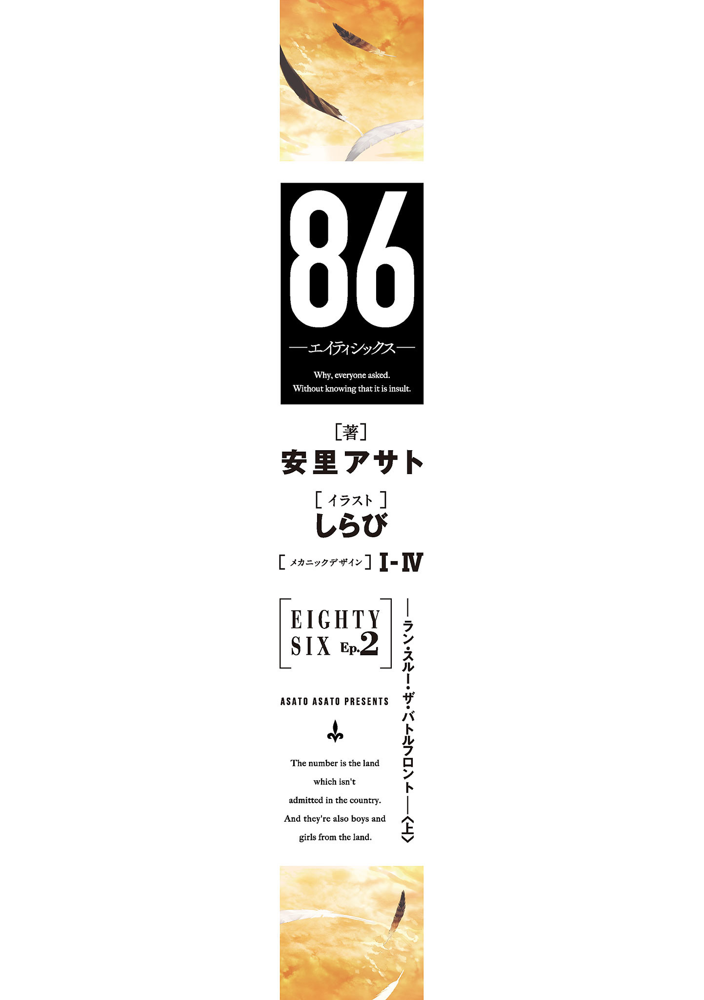
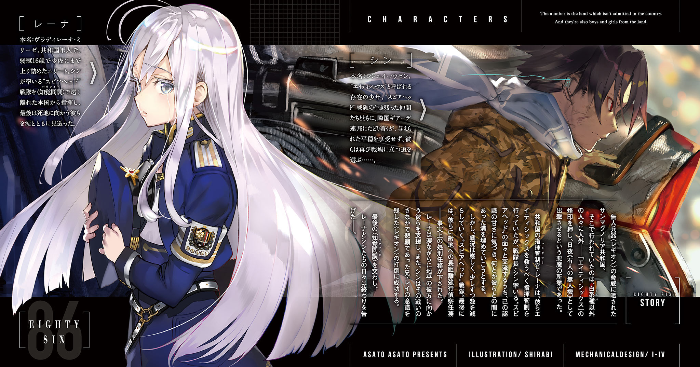

| 86─エイティシックス─Ep.2 ─ラン・スルー・ザ・バトルフロント─〈上〉 | |
| 安里アサト | |


本書（電子版）に掲載されているコンテンツ（ソフトウェア／プログラム／データ／情報を含む）の著作権およびその他の権利は、すべて株式会社ＫＡＤＯＫＡＷＡおよび正当な権利を有する第三者に帰属しています。
法律の定めがある場合または権利者の明示的な承諾がある場合を除き、これらのコンテンツを複製・転載、改変・編集、翻案・翻訳、放送・出版、公衆送信（送信可能化を含む）・再配信、販売・頒布、貸与等に使用することはできません。
何故、と誰もが問うた。
それが彼らへの侮辱であるとは知らずに。
彼らは──エイティシックス。
──フレデリカ・ローゼンフォルト『戦野追想』
序章 女王陛下は戦都にいまし
「──また貴様か、ヴラディレーナ・ミリーゼ大尉」
入室したレーナを一目見るなり、デスクの向こうの上官は苦々しげに顔を歪めた。
草臥れた軍服に無精髭と、およそ平時の軍人にあるまじき風体の上官を、髪一筋の乱れもない完璧な休めの姿勢でレーナは見下ろす。
隙無く着込んだ糊のきいた黒染めの軍服と、一房だけ赤く染めた銀繻子の艶の長い髪。半年前、スピアヘッド戦隊を──生き残りのエイティシックス達を必ず戦死させるための処刑部隊を、力及ばず戦野の彼方に失わせてから纏い続けている、彼らの喪に服する黒衣と、彼らだけに流させた鮮血の色彩。
命令違反を犯して彼らを援護した廉で、階級は一つ降格になった。投げ与えられた大尉の階級章から、おそらくもう二度と昇進することはない。
「迎撃砲の無許可使用。本来の補給物資ではない弾頭・装備の自戦隊への供与に、他戦隊への直接指揮。──同じことを何度言わせるつもりだ。エイティシックスのために余計な手続きの手間をかけさせるな。輸送部や装備部からどれだけの苦情が来ていると思っている」
「その全てについてあらかじめ許可をくだされば言わなくてすむことです、中佐。苦情については、先方が言うのもあなたが愚痴をこぼすのも勝手ですが、わたしの知ったことではありません」
中佐はアルコール中毒で淀んだ片目の下に皺を刻む。
「口の利き方に気をつけろ小娘。大尉風情が、身の程を知れ」
レーナは薄く、冷ややかに嗤った。
階級以外に振りかざすものもなければ、実際に何らかの処分を下す度胸もないと、自ら暴露するような言い草だった。
レーナは今や、東部戦線でトップの〈レギオン〉撃破率を誇る戦隊のハンドラーだ。そして部下の戦績はそのまま上官の評価にもつながる。戦争序盤で正規軍人が軒並み死んだから転がり込んだだけの中佐の地位では飽き足らず、更に上を望むこの男にとって、自分は決して殺せない『金の卵を産む雌鶏』だ。
おいたの度が過ぎない限り、何をやらかそうが庇ってくださる。
「失礼いたしました、中佐殿」
優雅に、敬礼。
歴史ある建物の多い第一区でもとりわけ絢爛な、かつての宮殿の匂いも色濃い国軍本部の廊下を歩くと、軽侮と嗤笑、嫌悪の目と囁きがついて回る。
エイティシックス如きのために、少佐の地位も幹部候補生の未来も投げ捨てた愚か者。人と家畜の区別もつかないお姫様。あと一年で全ての〈レギオン〉は機能を停止すると──もう戦争は終わるというのに、豚の妄言に踊らされて『戦争長期化』への備えを唱える道化。ただでさえ絶滅寸前の色つきどもをわざわざ戦闘で潰して回る、残忍非道な鮮血の女王。
くだらない。
首に嵌めたままのレイドデバイスが起動して、一瞬足を止める。ついでブーツの踵を鳴らして、寄木の床の美しい廊下を早足に歩き出した。
『聞こえてっか？ ハンドラー・ワン』
「キュクロプス。──〈レギオン〉ですね？ 状況は？」
知覚同調を通じて届く、パーソナルネーム〈キュクロプス〉ことシデン・イーダ大尉の伝法な声。レーナの指揮下、〝女王の家臣団〟と呼ばれつつある戦隊の戦隊長だ。
スピアヘッド戦隊での一件以来、必ずプロセッサー達の本名は着任したその日に聞くようにしている。けれど決して、パーソナルネーム以外では呼ばない。
人間扱いしていると思っていた、そのつもりで名前で呼んでいたスピアヘッド戦隊の誰をも、結局自分は、入る墓もなければ刻む名もない無人機として死ぬ運命から、救ってやれはしなかったから。
『ポイント一一二の旧高速鉄道ターミナルあたりまで入られてる。悪ぃな、レーダーが欺瞞されてて、気づくのが遅れた。......新入りどもにはキツい戦いになりそうだな』
つい舌打ちが一つ零れる。
確かにきつい。ただでさえ人死にが絶えないあの戦死者ゼロの戦場で、一つ間違えば大勢の犠牲が出かねない状況だ。
「〇六二に主力を展開、別働隊で誘い込んでください。そこならまだ、残りの迎撃砲の射程内です。民家が密集して狭い街路が多い地区ですから、機体の小さい〈ジャガーノート〉に有利にもなります」
キュクロプスが嗤う。
『基地の鼻先で迎撃かよ。抜かれたらここの戦区はもちろん、下手したらあんたら共和国の地雷原まで喰いこまれる位置だぜ』
「ですが、生き残るにはそこが今から選べる最良の迎撃地点です」
きっぱりと言い切ると、キュクロプスは声を出さずに笑った。
生き残る。彼らエイティシックス達が。そして〈レギオン〉に完全包囲されたこの共和国に暮らす、レーナ自身も。
生き残れと、言ってくれた。
戦い、生き抜けと信じてくれた、もういない彼らに応えるために。
『了解だ、女王陛下。......態勢が整ったらまた繫ぐぜ。そっちも、何かわかったら教えてくれ』
知覚同調が切れる。
管制室に向かう足を更に速めようとして、ふと、過ぎかけた窓の外の光景にレーナは一瞬だけ歩調を緩めた。
銀髪銀瞳の白系種だけが行き交う、サンマグノリア共和国首都の石造りの街並み。自由と平等、博愛と正義と高潔の共和国の国是を表す五色旗と、革命の聖女マグノリアの肖像旗が空々しく翻る、青く潤む春の空。
もうすぐ、彼らと──スピアヘッド戦隊の皆と、初めて言葉を交わした季節がくる。
最期に辿り着く場所まで征くのが自由で、最期の瞬間まで戦い抜くのが誇りだと、最後に笑って旅立っていった、もう戻らない彼ら。
彼らはどこまで進んだのだろうか。
今はどこに、──たとえばこの時期、溢れるように咲き誇る春の花の野に。
せめて斃れ、眠ることは出来たのだろうか。
第一章 ワルキューレの騎行
最前線の空はどこも阻電攪乱型の薄雲に鎖されて、退廃じみた銀色に穢れて昏い。
『更に接近する戦車型集団、大隊規模と推定！ ......こっちにも一個中隊が来ます！』
中隊無線を悲鳴のような報告が駆け抜ける。ここまでの戦闘で中隊戦力の三割を損耗、なおも押し込まれ追い詰められている彼らギアーデ連邦軍第一七七機甲師団第一四一連隊第一八中隊の残存兵にとっては、死の宣告にも等しいそれ。
『接触まで四五秒！ 神様......！』
「っ......まだ来るのか......！」
戦闘機動の激しい振動にさらされる〈ヴァナルガンド〉の縦列複座のコクピットで、ユージンは呻いた。白銀種純血の白銀の髪と瞳。十七歳にしては線の細い童顔に眼鏡。
連邦の対〈レギオン〉戦術は徹底した部隊戦闘──一機の敵に複数名、複数機で相対する集団戦だ。いかに最新鋭の第三世代多脚機甲兵器〈ヴァナルガンド〉といえど、陸戦の支配者たる戦車型とやりあうには最低でも倍は要る。まして劣勢ともなれば、最早勝ち目などあろうはずもない。
『くそっ、砲兵の連中は何をしていた！ 阻止砲撃は！』
後席の砲手兼車長の中隊長が吐き捨てるのが、無線の向こうに聞こえる。八脚のたてる騒音と戦車砲の大音響、パワーパックの咆哮のせいで、〈ヴァナルガンド〉はコクピット内のこの至近でも肉声での会話はできない。
無論、中隊長とてわかっている。阻電攪乱型の常時展開下、それもこの闇の中、レーダーもセンサも、目視も役に立つものではない。〈レギオン〉どもとの戦いは、いつだって一方的な急襲が幕開けとなる。
傷だらけの装甲強化外骨格を纏い、一二・七ミリ重機関銃を抱えて近接猟兵型に対峙する装甲歩兵達が塹壕もろとも踏み潰される。堅牢な重複合装甲と強力無比な一二〇ミリ戦車砲で武装した僚機の〈ヴァナルガンド〉が、唯一埋め得ぬ機動性能差に翻弄されて撃破される。生粋の殺戮機械である〈レギオン〉に対し、人間は神経の反応速度で劣り、そしてあまりに加速度に弱い。単純な巡航速度では劣らずとも、加速や制動、旋回といった総合的な運動性能では致命的なまでに後れを取る。
『ひるむなぁっ！ 退いたってどうせ逃げられやしないんだ！』
『来てみろ鉄屑どもがッ！ 祖国同胞の楯になるなら本望だクソがっ！』
『ちくしょう、死んでたまるか、連れていかれてたまるかよ......！』
罵声と銃弾を浴びせかけて鋼鉄の魔獣と迫りくる死に抗う歩兵達の、捨て鉢一歩手前の絶叫が無線を飛び交う。
抗いながら既に覚悟を決めているその響きに、ユージンは奥歯を嚙みしめ。
ぴん、と。発し続けていた救援要請に、応答信号が返ったのはその時だった。
重なる青い月光と夜闇の紗を斬り裂いて数発の砲弾が飛来。異様なほどの正確さで〈レギオン〉の隊列上方に到達するや炸裂し、内包する子爆弾の驟雨を叩きつける。
装甲歩兵達の扇状陣地を外した上で最も多くの〈レギオン〉を効力圏に収める、神業のような砲撃だ。
装甲の薄い斥候型がまとめて沈黙。被弾した背部多連装ロケットランチャーを近接猟兵型がパージ。軽量級の〈レギオン〉が戦闘能力を減耗する中、無傷の砲塔をぐるりと巡らせかけた戦車型が、次の瞬間側面装甲を徹甲弾に射抜かれて頽れる。
連続する砲声は、土煙と地響きを上げて戦車型が倒れてようやく、遠雷のように響き渡った。
初速、毎秒一六○○メートル──音速を遥かに超える戦車砲の砲声は、着弾よりも遅れて届く。そして鋼板を叩き合わせるような、重くも鋭い特徴的なその音響は。
「八八ミリ......!?」
『っ、まさか......！』
それは、地を這う無様な虫けらを無慈悲に狩りたてる跳び蜘蛛さながら、突如、闇に鎖された空中から〈レギオン〉に襲いかかった。
隊列中央の戦車型の砲塔上面に着地、同時に激震──四基の脚部対装甲パイルドライバの電磁パイルをまとめて叩きこまれた戦車型が激しく痙攣する。
節足を模した俊敏な長い四本の脚部。磨いた骨の色をした純白の装甲。高周波ブレードとワイヤーアンカーそれぞれ一対を装備した両の格闘アームは今は蜘蛛の鋏角さながら折りたたまれ、背部ガンマウントアームの八八ミリ滑腔砲。
四つ足の先端に五七ミリパイルドライバの鋭利な銀色を煌めかせ、冠した戦乙女の名に相応しい獰猛な冷艶さでありながら、どこか無くした己の首を探して戦場を這いずる白骨死体のようでもあるその異形。
『〈レギンレイヴ〉......！』
機内無線に零れたひきつった呻きは、救援に来た友軍にというより、むしろ敵に向けるそれによく似ていた。
ＸＭ２〈レギンレイヴ〉。重複合装甲の防御力と一二〇ミリ滑腔砲の貫徹力を重視した〈ヴァナルガンド〉とは真逆、機体重量に比して莫大な出力と強靭かつ高性能のリニアアクチュエータによる運動性能に主眼を置いて開発された、後発の第三世代フェルドレスだ。
機動性を偏重して装甲防御も大火力も捨て、しかもそのあまりの高機動性ゆえに搭乗者の体を破壊しかねないという、狂気の設計思想で組み上げられた三次元高機動戦闘専用機。
〈レギオン〉支配域の更に向こう、有人搭乗式無人機などという悪魔の兵器を運用する共和国の、その『無人機』をあろうことか元にして造られた兵器にして、共和国が生み出した『奴ら』の乗機だ。
命も情もない〈レギオン〉は仲間の死を悼みも恐れもしない。即座に最優先目標を切り替えた戦車型の砲撃が、僚機の残骸も巻き添えに〈レギンレイヴ〉に殺到する。
間一髪〈レギンレイヴ〉が飛び退き、刹那遅れて擱座した戦車型に命中。十数トンにもなる巨大な砲塔が、誘爆した自身の砲弾に吹き飛ばされて高々と宙を舞った。機密保護のため、あえて爆圧排除パネルを持たない戦闘機械の壮絶な最期。
赤黒いその業火と、凶器そのものの重量で降り注ぐ装甲片の雨をかいくぐって〈レギンレイヴ〉が駆ける。
戦車型間の五〇メートルの距離を一息に走破、迎撃せんと砲塔を巡らせた戦車型の鼻先で横っ飛びに跳躍し、交錯ざまに無防備な車体側面に八八ミリ砲の高速徹甲弾を叩きこむ。すかさず突撃にかかった近接猟兵型は展開した高周波ブレードの一撃で斬り伏せ、次の戦車型にただ一機突貫する。
そう、一機。
ただ一機だ。その一機が、ほぼ無傷だったはずの〈レギオン〉増強機甲中隊を蹂躙していく。高周波ブレードの甲高い叫喚を撒き散らし、パイルドライバの紫電を閃かせ、八八ミリ砲の咆哮を響き渡らせて、屑鉄どもを本物の鉄塊に変えていく。
機体性能によるものではない。搭乗者──元の『無人機』への皮肉と敬意をこめて、操縦士ではなく処理装置と呼ばれている──の技量が桁外れなのだ。
〈レギンレイヴ〉と戦車型の平均的な撃破・被撃破比率は、〈ヴァナルガンド〉と戦車型のそれと大差ない。一撃もらえば致命傷である分、〈レギンレイヴ〉の損耗率の方が高いくらいだ。実際、〈レギンレイヴ〉試験部隊は、配備直後に一個中隊が文字通りの全滅に追い込まれた。生存者は一名──その同じ戦闘で、対峙した敵部隊をたった一人で壊滅させた『奴ら』のみ。
連邦によって戦場の地獄から救い出されながら、自らその地獄に舞い戻った狂戦士。
『奴ら』は〈レギオン〉との死闘を恐れない。その果ての死を厭わない。装甲を軽視した──搭乗者の生命を軽視した〈レギンレイヴ〉を平気で駆り、〈レギオン〉の大群を向こうに回して命知らずの寡兵の戦闘に身を投じる。
その、狂気。
不意に起き上った人影が、〈レギンレイヴ〉の長い脚部に縋りつこうとする。〈レギンレイヴ〉はついと脚を持ち上げてそれを避け──そのまま無造作に突き下ろされた脚先のパイルが、人影の頭部を串刺しにした。
対戦車自走地雷だ──それはわかっている。だがそれでも、ユージンは湧き上がる戦慄を抑えきれなかった。あの一瞬で、プロセッサーは本当にあの人影が助けを求める友軍の兵士ではないと見分けられたろうか。
あるいは友軍か否かなど端から気にせず、自機を守ることだけを優先したのではなかったか。
ゴミでも放り捨てるように振られた脚先から、妙に生々しくずるりと抜けた人型が最後の戦車型に激突する。活性化した信管が接触して作動、炸裂した成形炸薬のメタルジェットが戦車型の上部装甲を食い破る。
燃え盛る猛火の朱い光が、ひととき〈レギンレイヴ〉とその純白の装甲に描かれたパーソナルマークを照らし出す。
シャベルを担いだ首の無い骸骨──プロセッサーの正気を疑う、あまりに禍々しくあまりに不吉な、戦場では最も忌まわしく最も親しい死神の意匠。
初陣で僚機が全滅する中、たった一人で全ての敵機を屠ってのけた、『奴ら』の中でも随一を誇るプロセッサーの、そのパーソナルマークだ。
名は──たしか。
思い至って目を見開くユージンの背後──砲手席の中隊長が吐き捨てた。
共和国の悪意によって生み出され、残忍で研がれ、無慈悲を以て磨かれた。忌まわしい〈レギオン〉どもと何も変わらぬ、人の形の殺戮兵器と畏れられるその名前。
『エイティシックス......共和国の化物め......！』
基本的に、機甲兵器の類は履帯式にしろ多脚式にしろ、戦闘時以外は自走させない方が故障が少ない。
先進技術研究局・設計案一〇二八試験部隊実働戦隊〝ノルトリヒト〟の専用重装輸送車に自分の〈レギンレイヴ〉──〈アンダーテイカー〉を収容し、シンは輸送車のキャビンに戻る。
連邦軍共通の鋼色の機甲搭乗服に、国章の双頭の鷲の徽章と少尉の階級章。首を覆う淡い空色のスカーフは厳密には軍紀違反だが、この程度の逸脱は公の場以外なら黙認されている。
スカーフの下のレイドデバイスを外そうとして、後部箱型荷台の整備クルーから知覚同調で通信が入る。
『──ノウゼン少尉』
「伍長、無線のスイッチが入ったままだ」
知覚同調と無線の双方から同じ舌打ちが一つ。
『いけね、そうでした。どうもこの、知覚同調ってのは無線と勝手が違っていけねえや。何でじゃじゃ馬に加えてこれまでうちの隊で実験するんだか......と。弾薬の補充、また高速徹甲弾と成形炸薬弾が半々でいいっすよね』
ノルトリヒト戦隊の隊員は、その大半を正規の軍籍を持たない旧戦闘属領兵が占める。かつて連邦が帝国であった頃、有事の防衛陣地として帝国国境に配された戦闘属領居住の隷属戦士階級であった彼らは、先祖代々に亘る戦場暮らしで荒っぽく、現政権下では傭兵扱いで軍規が緩い。これでも最大限、上官に敬意を払った口調だ。
「ああ」
『あと、ブレードの替えもうないっすからね。〈ジャガーノート〉の数自体減ってる上にあんな頭おかしい兵装使ってんのは少尉だけなんすから。次の戦闘からは辻斬りみたいにばっかばっか叩っ斬るの、もうやめてくださいよ』
ＸＭ２を制式名の〈レギンレイヴ〉ではなく、元となった共和国の『無人機』と同じ〈ジャガーノート〉の名で呼ぶのも、ノルトリヒト戦隊の特徴だ。一月前、試験配備直後の戦闘で本来の戦隊長と戦隊の半分、およそ一個中隊が戦死し、残った士官の最先任として戦隊長を引きついだシンがそう呼んでいたのが移ったものらしい。
実際戦乙女よりも相応しい名だと、部隊の全員が認めている。
開発途中でテストオペレーターを、配備後も戦隊の半分以上を。無慈悲に喰い潰した鋼の悍馬には至極似合いの、救済の名の下に群衆を轢き殺す異形の神の名前。
極端に乗り手を選ぶそのせいで、軍事用語上の全滅状態にもかかわらずノルトリヒト戦隊は再編はおろか一人の補充さえも行われていない。
「問題ないだろう。そろそろ〈レギオン〉も撤退するはずだ」
『へ？ ......ああ、そうか。......少尉のソレ、訳わかんねえけどほんっと便利っすよね......』
苦笑と懼れの入り混じる、感嘆とも独白ともつかない言葉は捨て置いて、今度こそレイドデバイスを外した。咽頭マイクに似た、けれどより洗練されて機能的な外観の金属環。
結局首輪に近いのは変わらないな、とふと思った。
古風を通り越して大仰な、戦場しか知らないシンをして時代を一つ二つ間違えたと感じる口調の高い声が車長席からかかる。
「ご苦労じゃったの、シンエイ」
「......フレデリカ。また潜りこんでたのか」
シートから身を乗り出すようにして振り返るのは、ようやく十歳ばかりの小柄な少女だ。
華奢な体軀と、軍帽の下の人形のように精緻に整った白貌。宝石めいた焰紅種の紅い瞳に膝裏まで届くまっすぐな夜黒種の黒髪が、厳めしい鋼色の軍服と不思議な調和を醸し出している。
試験部隊配属前から、もう半年余りの付き合いになるこまっしゃくれた少女は、得意げに薄い胸を張る。
「整備クルーを抱きこんでわらわを排そうなど、甘いのじゃ。緊急出撃時はクルーどもは最終チェックに必死じゃからの。紛れ込む隙など幾らでもあったわ」
「──伍長。帰投したら話がある」
『少尉......!? いやその、こっちの言い分も聞いてくださいよ！ 今回はホントにてんてこ舞いってやつで......』
一方的に告げて無線を切り、嘆息して自分と同じ紅い瞳を見下ろした。
「出撃にまでついて来なくていいと何度も言ってるだろ。職分を弁えろ、『お守り』」
「わらわの管制で動いている分際でよう言うの。そもそも、そなたにそれを言われる筋合いなどないわ。小部隊とはいえ、指揮官ともあろう者が僚機を捨て置いて一人先行するのはそなたの悪い癖ぞ。ベルノルトが散々ぼやいておったわ」
先に戻っていた、壮年の戦隊最先任軍曹が肩をすくめた。
すくめただけで何も言わないのは、それが進言すべき懸案ではなく個人的な不満で、戦術的にはこちらの判断が正しいとベルノルト自身わかっているからで、だからシンもそれについては言及しない。
「ついて来られない方が悪い。合流を待っていて撃滅が遅れたら、機動防御の意味がないだろ」
切って捨てられた同じ小隊のプロセッサー達が声を出さずに苦笑する。
一方でフレデリカは眉をひそめる。
「機動防御、か。たしかにそなた向きの任務ではあろうが......わらわは好かぬの。自軍の防衛線が突破されるを前提とした戦術なぞ」
あえて歩兵部隊を主力に第一線を構築し、高い機動力と火力を併せ持つ機甲部隊はまとめて後方に拘置、敵部隊が第一線を突破した場合に都度その戦場に投入して撃滅させる防衛戦術である。ここ一月あまりの〈レギオン〉の猛攻に西部戦線の各軍は前進を停止、防御に徹することで損耗の低減を図っている。
「たとえ今はしのげても、総兵数と再生産力に差がある以上、いずれ破綻するのは目に見えておるわ。──そうなった時、前線のそなたらがどうなると思うておるか」
シンにしてみれば今更言われるまでもない、そして気にするまでもないことを口にするから、無視して自席に腰を下ろした。
今更だ。
国家が破綻した時、前線の兵員がどうなるかなど──彼らにとっては。
む、とフレデリカが身を乗り出す。
「聞いておるのかシンエイ。その、己が身を省みぬところもそなたの悪い癖じゃ。そなたはもはや共和国八六区ではなく連邦の戦場におるのじゃからして──ひゃっ！」
少女特有の、声量はないがきんきんと高い声がやかましい。まくしたてる少女の軍帽を、ぐいと鼻先まで引き下げて黙らせる。
途端におたおたうろたえるのを捨ておいて、硬い座席に身を預けて目を閉じる。夜襲をかけてきた〈レギオン〉の数が多い。今日は救援要請もひっきりなしだろう。夜を徹しての戦闘の経験は一度や二度ではないが、取れる時に仮眠は取っておきたい。
隣でフレデリカはまだわたわたしている。
「うあ、取れぬ、取れぬぞ。ベルノルト、助けてたも」
「へいへい。けど、取ったらもう静かにしといてくださいよ。一応少尉含め、連日の戦闘でみんな疲れてるんですから。寝たい奴もいるんですよ」
「うむ......すまぬ」
ちらりと向いた視線の気配を最後に、束の間の微睡みに身を任せた。
眠りの中でも常に聞こえる機械仕掛けの亡霊達の嘆きの声は、今なお減ることなく、西の果てまで大地を埋め尽くしている。
†
第一五号前進基地は、ギアーデ連邦西部戦線、第一七七機甲師団担当戦区の予備第二防衛線後方に設営された、第一四一機甲連隊の本拠地だ。
擁する人員とフェルドレスの数ゆえに広大なそこのだたっ広い士官食堂で、ユージンは朝食のトレイを片手に目当ての人物を探す。戦線が移動する度に設営し直すから新しく簡素な食堂。十年前の市民革命以前、連邦が帝国を称していた頃なら独裁者達の写真が掲げられていたろう奥の壁に、連邦の国是である『我ら、世界に誇る正義たらん』の横断旗がかかっている。
「ふむ。ノルトリヒト戦隊の士官なら、向こうの方で見たぞ」
「ありがとうございます」
「進んで異邦人を理解し受け入れんとするその姿勢、素晴らしいぞちびっこ少尉。特に、彼らエイティシックスは本来同情されるべき立場であるのだからな」
白い歯を輝かせる元貴族らしい青玉種純血の大尉に曖昧な笑みを返して、人でごった返す食堂を指された方に向かう。
それはたしかに、言うとおりなのだが。自分だって彼以外の『エイティシックス』は──何しろ会ったこともないわけだし──得体が知れないし、ちょっと怖いなと思わなくもない。
でも、そんな大仰に言うことでもなく。普通に声をかけて、話をして、どういう奴なのかわかっていければ、いいだけじゃないかと思うのだけれど......。
多民族国家の連邦の軍基地は当然様々な色彩の民族がいて、けれど年齢構成はずいぶん若くて十代後半の少年少女の姿も目立つ。ユージンと同じ、特別士官学校出身の少年士官だ。中等教育修了者に最低限の教育だけ施して少尉任官し、本来任官前に修めるべき高等教育は従軍中に学ばせる特例制度の適用者。
十年に亘る〈レギオン〉との戦争で損耗の激しい士官の頭数を確保するための、苦肉の策だ。
とはいえ中流家庭の子供にも士官への道を拓いた功績は大きいし、何より志願制であるのがいい。戦況がどれだけ悪化しても、市民の意志を無視する徴兵制を敷くほど連邦政府は落ちぶれていない。他人に戦いを強制するのは、見下げたクズのすることだ。
連邦は帝国とも、西のあの国とも違うのだから。
兵器の扱いに習熟と知識が必要な現代の戦闘で、徴兵で間に合わせの人員をかき集めても役に立たないからじゃないか、とは、特士校の同期で同室で二人班を組んでいた友人の弁。
「......おい、何でノルトリヒト戦隊の奴がここにいるんだ？」
「昨日うちの隊が救援要請かけたからだろ。死神憑きの首なし骸骨が、薄気味悪い」
「あいつらが来てからのこの一月、撃破数すげえんだってな。敵も、味方も」
「つーか、ほんとに中身なんかいたんだな。処理装置って、実はマジなのかと思ってたぜ」
「やめろって。それじゃ共和国のクズどもと同じだろ。栄えある我らが連邦が、そんな非道をするわけない」
「違いない。──双頭の鷲に栄光あれ」
すれ違った装甲歩兵らしい体格のいい士官達の会話が皮肉にも道案内だ。
隅の方の長テーブルの端に、目当ての人物を見つけて歩み寄る。
軍帽まできっちり被った小さな少女を向かいに、黙々とトレイの朝食を片づけているダブルブレストのブレザーの常装軍服の少年。
どちらも夜黒種と焰紅種の漆黒の髪と血赤の目をして、一見年の離れた兄妹のようだ。旧帝国の貴族階級特有の端整な容貌のせいか顔立ちも随分似て見えるけれど、実際にはもう彼には家族はいないと聞いている。
混みあう朝の食堂でそこだけ妙に人が少ないのは、純血を尊ぶ旧貴族からは混血と忌まれ、市民からは支配階級の末裔と嫌われる色彩と容貌ゆえか──夜黒種も焰紅種も帝国黎明期からの支配階級だが、その混血はどちらの貴種からも特に嫌われる──それともその所属部隊や彼ら自身の悪名のためか。
トレイの一角をフォークの先端でつついて、カナリアの囀るように少女が言う。
「......シンエイ。そなた、キノコは好きかの」
「別に。というか、食べられないなら無理に食べなくてもいいんじゃないか」
「そうであるが......残しては厨の者に悪いではないか。丹精して作ったのであろうに」
「なら努力すれば」
「うう」
とか言いながら、件のキノコのバター炒めを小さめの一つを除いて自分のトレイに移してやっているあたり、そっけなく見えて実は優しいお兄ちゃんといった趣だ。
歩み寄ってユージンは声をかけた。
「久しぶり、シン」
一瞥を返した血赤の瞳が、こちらを見とめて一つ瞬く。
「ユージン。ここの配属だったのか」
「先月からね」
いいかな、と断って少女の隣の椅子を引く。見返してくる大きな澄んだ血赤の双眸。
「昨日は助かったよ。あの骸骨のパーソナルマーク、君だろ」
しばらくシンは考えた。
「ああ......悪い、どの部隊だ？」
昨日という条件だけではまだ心当たりが幾つもあるらしい。
「はは。活躍だったみたいだね」
きょろきょろと交互に二人を見やってフレデリカが問う。
「知り合いかの？」
「特士校の同期」
「つきあいはその前からだけどね。同じ機甲科志願で、ついでに寮が同室で訓練中は二人班組んでて、〈ヴァナルガンド〉の操縦訓練でも同じ機で」
フレデリカは目を泳がせた。
「ああ......それは、さぞ大変だったであろうな......」
ユージンは悪戯っぽく目を輝かせて身を乗り出す。
「わかる？ そう、こいつほんっと無口で無愛想で、何考えてるか全然わかんなくて」
「うむ、わかるぞ。人が話しておっても書物から目も上げぬし、つまらぬと思うと相槌も打たぬし、興味の無い話はそもそも聞いておらぬし」
「普段はこいつ血の色何色なんだって思うくらい冷徹なくせに、変なところでやたら思いきりよく無茶するし。知ってる？ シンの、伝説の零点」
「ほう。なんじゃそれは」
「戦技教練の模擬戦中に〈ヴァナルガンド〉を跳ねさせたんだ。危険操縦で一発失格」
四か月前、特士校の三か月の基礎課程の最後の話である。
それ自体は途轍もない操縦技術ではあるのだが、戦闘重量五〇トンを超す〈ヴァナルガンド〉に跳躍機動をさせると機体が保たない上に中の兵員が負傷しかねない。実際その時砲手をしていたユージンはヘッドレストでしたたか後頭部を打ち、目から火が出る、という慣用表現を実体験する羽目になった。
元々〈ヴァナルガンド〉と相性の悪かった──堅牢な複合装甲と強力無比な一二〇ミリ砲を重いと嫌がる方がおかしいのだが──シンはこの件を契機に〈レギンレイヴ〉の試験部隊である一〇二八試験隊に配置換えになり、......それは随分、寂しかったけれど。
ところで言われている本人は目の前で繰り広げられる悪口大会にもまったく無関心にコーヒーをすすっているからちっとも面白くない。
む、と顰めた顔を見合わせて、ユージンとフレデリカは同時に吹き出す。
「第一八中隊のユージン・ランツ少尉だ。よろしくね」
「フレデリカ・ローゼンフォルトじゃ。見知りおくぞ。......さて、」
砂糖とミルクをたっぷり投入した甘ったるそうなコーヒー（砂糖については四杯目をすくおうとした時点でシンがシュガーポットを取り上げた）を飲み干してフレデリカは立ち上がる。
「旧友同士の語らいを邪魔しては悪いからの。失礼するのじゃ」
大人用の、体軀に比してまだ随分大きいトレイを両手で取り上げ、行き交う人の間を器用に縫ってとことこと歩み去る。
見送って、その華奢な背中を見つめたままユージンは問う。
軍基地にはまるでそぐわない、年端もいかない幼い少女。
「......君の隊の『勝利の女神』？」
「ああ」
この国が帝政だった昔に始まり、今なお軍の一部に残る風習だ。
元々は、徴兵された兵士達を逃がさず戦わせるための策だったという。兵士達の娘や妹ほどの幼い少女を戦闘部隊に加え、寝食を共にさせて擬似的な家族に仕立て上げる。愛する『娘』を敵から守るため、兵士達は命を惜しまず戦うようになる、というわけだ。
「うちは傭兵の集まりみたいなものだから。まあ、由来どおりの人質だろうな」
みたいなもの、ではなくそのものだ。
たとえば昨晩、救援に訪れた小隊には正規軍人はシン一人しかいない。他の要員は傭兵ばかり、上官を含めた士官は皆、〈レギオン〉との戦いで死んだ。
「......ひどいな。いまどきマスコットだなんて。それも傭兵なんかの中に、」
「彼女自身が選んだ道だ」
淡々と言ったシンに、ユージンは顔をしかめる。
「そんなの、だってあんな子に、戦う理由なんてないじゃないか」
ふっと見返してきた血赤の瞳に、ユージンは何か、胸を衝かれたように感じる。
どこか、距離を感じる──否、正確には距離を覚えられたと感じる眼差しだった。
同じ場所にいないと思わせたような。断絶を覚えられたような。
振り払って言い募った。
「あんな小さい子に戦う理由なんて、守るべきものなんて何もないのに。家族とか国とか、正義とか自分の生活とか、そういうものなんて何も。なのに、......なんで戦わなきゃいけないっていうんだよ。──そうだろ？」
シンは一度目を伏せるように閉ざす。
開かれる紅い双眸は静謐に鎖され、先に感じた断絶の色彩はもう見えない。
「......そうかもしれないな」
二杯目のコーヒーを取りに行くついでにユージンの分も持ってシンは戻ってきて、差し出された紙コップを礼を言って受け取る。
コーヒーといっても、大麦とチコリの根を炒った代用品だが。勢力圏の全周を〈レギオン〉に囲まれ、阻電攪乱型の電磁妨害に阻まれてあらゆる通信も届かない現在、他国とは国交や貿易は無論のこと、互いの存在さえ確認できなくなって久しい。大陸南方や東南部で取れる本物のコーヒー豆など、もちろん手に入らない。
「そういえば、妹がいるんだったか」
「ああ、うん。年は少し下だけど」
きっちり締めた軍服のタイの下、認識票と一緒に下げたロケットにシャツの上から手を当てた。
「......うちは両親ともいないから。なるべくいい学校に通わせてやりたいから俺が稼がないと」
六年前。〈レギオン〉との戦争が激化し、故郷の街から避難する最中だった。
首都への疎開列車にはもう家族四人が乗れる空きはなくて、せめて子供だけでもと両親はユージンと妹を押し込んだ。
両親とはそれきり。
家族写真なんか持ち出す余裕はなかったから、赤ん坊だった妹は両親の顔も覚えていない。
「今は初等学校も夏季休暇だし、次の休みで帰ったらどこか連れていきたいな。旅行とかは厳しいけど、動物園とか遊園地とか。それと買い物も。女の子なんだから服とか靴とか、あ、そういえば連邦首都のデパートに新しくカフェがオープンしたって、」
わくわくと列挙するユージンに、シンも口元を緩める。
「大変だな、お兄ちゃんは」
「いいだろ。やらないぞー」
「生憎だけど、うるさいのは間に合ってる」
少し呆れたような苦笑で返して、それからふと、シンは笑みを消した。
「けど、それなら尚更、軍人にはならない方がよかったんじゃないか？ 今も戦況はよくはないし、これから先もよくなることはないと思う」
一人きりの家族だというなら。
言外にそう告げる言葉に、ユージンも表情を改める。
「それは、前の戦場の経験からの判断？」
「──ああ」
士官候補生だった時に訊いて、話してくれたことだ。
それによって助けられたことも。
特士校では訓練の一環として候補生を実戦に出す。あえてアサルトライフルと野戦服の旧式の装備で哨戒に出る、戦場の空気を肌で知るだけの度胸付け程度の『任務』だが、それが運悪く〈レギオン〉の急襲を喰らったのだ。引率の教官も途中で〈レギオン〉にやられて、あの時は、シンと組んでいたから帰ってこられたようなものだった。
どうして〈レギオン〉の動きが読めるのか。......どうしてそんなに戦い慣れているのかと、その時訊いて。
少し考える様子を見せたけれど、結局答えてくれた。普段通りの、あの淡々とした声音で。
その過去。
祖国によって死を定められながら生きのびた、そのあらましも。
軍服の襟にいつもは隠れる首の痣までは、──明らかな害意で以てつけられた、斬首の傷のようなその無惨な痕の由来についてまでは、流石に訊けなかったけれど。
戦場の悲惨も〈レギオン〉との戦闘の厳しさもよく知っているからこそ、心配してくれたのだと、気づいてユージンは嬉しくなる。無口で無愛想で冷徹だけど、悪い奴ではない。
そういう過去を持ちながら、白系種の、それも純血の自分と、友人でいてくれたことも。
「......まあ、でも、そうか。そうだよね」
冷めかけたコーヒーを一口すすって、顔をしかめる。苦い。砂糖を入れ忘れた。
「うちの隊は、昨日だけで十五人死んだ。一応、十年前から少しずつ領域は広げられてるっていうし、実際この基地も今年の春先に戦線が前進してこの位置に来たらしいけど。でも、だからって人が死なないわけじゃないんだよね」
連邦の前身たるギアーデ帝国は、大陸西北部から中北部にかけて東西に長く横たわる、大陸随一の国土面積と人口を誇る超大国であり、軍事大国だった。
連邦成立直後に〈レギオン〉の反転侵攻を受けてからも、国土の全周を守る戦闘属領が正しく役目を果たし、各戦闘属領はそれぞれ半分以下にまで削り取られつつ、生産活動に携わる属領と国家の中枢たる首都領は無傷で守りきっている。
そうして維持された強大な国力と軍事力、加えて帝立研究所に残されていた〈レギオン〉のある程度の性能諸元データと、この十年の戦争で蓄積した対〈レギオン〉戦闘のノウハウ。
それらを総動員して辛うじて〈レギオン〉に伍し、漸次前進にも成功しているのが連邦の戦況だ。国家の安寧も国土の拡張も、全て国力と兵士の命を湯水のように消費して成し遂げているに過ぎない。
元より総合的な性能は、搭乗者という脆弱なパーツを持たず投入された技術において優越する〈レギオン〉が、あらゆる面で連邦の兵器のそれを上回る。
加えて、中枢処理系に変更不可の寿命プログラムが組み込まれていたはずの〈レギオン〉は、戦死者の脳構造を取り込むことで課された寿命を克服し──シンはそういう個体を〈黒羊〉と呼んでいた──、終わりのない戦闘と殺戮を可能とした。より劣化のない脳髄を鹵獲するため積極的に生きたままの人間を狩り集める個体群〈首狩り〉も確認されている今、限界に近づいているのはむしろ連邦の方だ。
「昨日おれが見た範囲では、他の隊も似たようなものだった。第二防衛線まで食いこまれなかったのが不思議なくらいだ」
「隊長達は、ヤバい時はこれくらい当たり前だって言ってたけど。西部戦線は連邦最大の激戦場で、第一七七師団戦区も西部戦線ではありふれた激戦区だからって」
連邦の東部戦線及び南北の第一から第四戦線は山岳や高地、大河の自然の要害に恵まれ、まだしも容易に防衛線を維持できている。唯一、守りがたい広大な平原を戦場とする西部戦線は数を以て対抗せざるを得ず、総延長四百キロの戦線に駐留する総戦力は各戦線最大の実に四個軍団。不利な戦場で〈レギオン〉に立ち向かう西部戦線兵士の死傷率は極めて高く、......当然、戦死者数も全戦線で最も多い。
「当たり前、か。おれもここの戦場での経験は一月程度だけど、当たり前と考えていい死者数じゃないと思う。〈レギオン〉の撃破数とこちらの死傷者数が合ってない。戦線が維持できている割には死にすぎてる気がする」
「確かに、勝ててる感じなんて全然ないよな。隊長とかは慣れもあるんだろうし、もっと上の軍上層部は所詮みんな元大貴族だから、下民風情が何人死のうと数字の増減だけで、家畜が減った程度なんだろうけど」
言ってから、思い至って唇を引き結んだ。
目の前の相手は、祖国から人の形の家畜と扱われ、戦死者の数にさえカウントされないものとされていた。
「......ごめん」
「？ 何が？」
怪訝な顔をするのに、なんでもないと手を振った。気がつかなかったならそれでいい。わざわざ辛い記憶を思い出させることなんてない。
でも。
ふと、ユージンは疑問に思う。
それなら、何故シンはこの戦場に戻ってきたのだろう。
シンには、家族はいない。
誰もが祖国だったはずの共和国に奪われて、彼一人置いて死んでしまった。
連邦出身でない彼にはこの国に守るべき誰かもいなければ、祖国や同胞を守るという理念もなく、食べていくためというある種皮肉な理由さえ、連邦政府の援助を受けられるからないはずなのに。
それなのに──何故？
「......シン。あのさ」
「なに」
「いや、......それなら、君の方こそ、」
本当に訊いてしまっていいのだろうか。躊躇いを覚えてユージンは言い淀む。
ふっと紅い瞳がユージンを外れて別の場所を向いた。
基地の分厚い防御壁も遥かな距離も越えて遠くを見据える。纏う空気がわずかに冷え、気圧されてユージンは口を噤む。
「......どう、」
どうしたの、と問おうとした。
刹那。
鳴り響いたサイレンが問いの続きを奪い取る。
競合区域深部にまで進出している自走無人索敵機が〈レギオン〉を検知した際の警報だ。
かつて〈レギオン〉を開発し、大陸全土に侵略戦争を仕掛けたギアーデ帝国だが、その後継であるギアーデ連邦は、遠隔操作の索敵機以外の無人機を運用していない。
帝国時代、高等教育は独裁政権を構成する大貴族とその下の貴族階級に独占されていた。市民階級が中心の連邦では、どうしても帝国当時の超技術力には劣る。〈レギオン〉の人工知能をほぼ独力で構築した主任研究者が戦争勃発前に死亡していることもあり、連邦では〈レギオン〉に代わる完全自律式の無人戦闘機械は開発できていない。
また、開発できたとしても運用するべきではない、というのが連邦政府から市民まで共通する主要な意見だ。国家同胞を守って戦うのは市民の義務であり権利だ。機械任せにはできないし、機械如きに奪われるわけにはいかない。
制御を失った自動機械がどうなるのかは──今、まさに目の前にあるのだから。
緊迫と沈黙は一瞬、緊迫はそのまま瞬く間に騒然となる食堂の中、二人も立ち上がる。
「昨日の今日か。まったく、屑鉄どもは忙しないな。女性にはモテない」
「自動工場型の語源が女王蜂なら、兵隊蜂の〈レギオン〉もどちらかといえば女性なんじゃないか」
「男所帯の連邦軍に男漁りに来てるって？ 熱烈すぎて涙が出るよ」
軽口を叩き合いつつ、食堂を出て廊下で別れる。正規機甲部隊のユージンと、研究局から出向の形の試験部隊のシンでは命令系統が違う。愛機の格納庫も別々だ。
「じゃ、また後で」
「ああ」
連邦西部戦線は、障害物が多く空間の狭い森林帯と都市の廃墟を主戦場とするよう構築されている。
〈レギオン〉の主力たる戦車型と、戦線突破時に集中投入される重戦車型を相手に少しでも有利に戦うための策だが、裏目に出ることもある。同じく巨体の〈ヴァナルガンド〉にとっても動きづらい地勢であり、例えば僚機との連携を断たれた上、軽量級の近接猟兵型の集団に追い込まれると非常に不利だ。
西部戦線特有の、針葉樹と広葉樹が入り混じる独特の植生の森の中。四方に加え、硬く太い古木の幹を駆け登って上方からも襲い来る近接猟兵型どもを引き剝がそうと、ユージンは〈ヴァナルガンド〉を走らせる。五〇トンの重量が地を蹴る地響きに静寂の森が揺れ、駆動系の軋む苦鳴。
〈レギオン〉は昼夜を問わず、津波の押し寄せるように襲ってくる。
断続的に不規則に、だが執拗に。着実にこちらの戦力と体力と士気を削り取るべく襲撃は繰り返され、一度攻勢が始まれば長い時には半月近くも戦闘が続く。
再生産に年単位の時間がかかる人間とは異なり、支配域最奥の自動工場型により黒雲の湧くように量産可能な〈レギオン〉だからこそ可能な戦術だ。
戦地の空は常に阻電攪乱型の銀の雲に覆われてセンサもレーダーもデータリンクも阻害され、長距離砲兵型の猛砲撃が散発的に歩兵の塹壕を襲う。個々の性能では装甲歩兵は近接猟兵型に、〈ヴァナルガンド〉は戦車型に敵わないのに、奴らこそがこちらを上回る大戦力を以て連携攻撃を仕掛けてくる。多少の戦術の稚拙さ、単純さは兵器の性能差と数の暴威で補う、亡霊の軍勢の名に相応しい猛攻だ。
敗けるのだろうか、と時折思う。
俺達は──連邦は。人類は。この戦う理由も目的も持たない殺戮機械に、いつか抗いきれずに敗北するのだろうか──......。
『ランツ少尉！ ぼさっとしてんな、死にたいのか!?』
「っ、すみません！」
言葉と同時に操縦席の背中を蹴飛ばされてユージンは一瞬沈んだ思考から引き戻される。レーダースクリーンを埋め尽くす〈レギオン〉の赤いブリップ。辛うじてオンラインになっている統合情報システムが多目的ホロスクリーンに各部隊の戦闘状況を表示させている。
戦況はあまり良くない。機動防御担当で第二防衛線後方に拘置のはずの機甲部隊があらかた最前線にいる。
ノルトリヒト戦隊──シンの所属部隊も近くに展開中だ。突撃する戦車型の集団を側面から急襲、そのまま敵味方入り乱れる乱戦に持ち込んで突貫の勢いを完全に削ぐ。突撃の正面にいた友軍機甲部隊はその間に体勢を立て直し、ノルトリヒト戦隊と連携して反撃を開始した。
シンの部隊はいつも、彼らが最も必要とされる戦場に現れる。
けれどそれは同時に、最も危険な戦場だ。〈レギオン〉の残骸を積み上げる傍ら、味方の兵も冗談みたいにばたばた死んでいく、文字通りの屍山血河のただ中だ。
誰もが忌避する戦火の地獄に、けれど進んで飛び込んでいくその姿。
人血を啜る悪魔ども、と彼らを揶揄する声が前線部隊に広まりつつあるのはユージンも知っている。
死告げ姫の名を負う首のない白骨どもは、血と死の臭いを嗅ぎつけてやってくる、と。
ざっ、と強烈なノイズが全ての光学スクリーンと多目的ホロウィンドウを駆け抜けた。
ホロウィンドウの、阻電攪乱型の分布密度が変わる。電磁妨害がきつくなる。
何もかもがノイズに塗り潰される直前──慌てたように後退するノルトリヒト戦隊のブリップと、オープン回線で全部隊に向けて何か叫びかけた誰かの声が、奇妙に意識の端に残った。
高空。飛来した何かが炸裂する。発生した衝撃波が空間を疾る。
弾速の遅い無反動砲でさえ音速を超える現代戦で──砲声はいつも、あとからやってくる。
鉄の雨が降った。
強烈な電磁妨害下で無線は完全に沈黙する中、人の集合無意識を介する知覚同調はその影響を受けない。
『無事であるな、シンエイ』
「ああ」
『よかった』
言いながら、フレデリカの声は震えている。
『じゃが......すまぬ。悪い知らせじゃ』
降り注いだ自己鍛造弾の弾雨に引き裂かれ、薄く煙を上げる鋼色の残骸を見上げて、シンは静かに口を開く。
「フレデリカ。──〝目〟を閉じていろ」
目を開けると、滴るような緑の中だった。
頭上を覆うオークやブナの柔らかな葉の緑。トウヒとマツの鋭い濃緑。阻電攪乱型の薄雲と重なる葉叢に乏しい陽光が、たちこめる霧を淡く透かし、その霧さえも翠に染まる、滴るような、けぶるような、北の夏の森の透明な翠緑。
露に濡れた下草の感触が頰にあって横たわっていると知れる。すぐ傍に巨獣の死骸のようにうずくまる、擱座した〈ヴァナルガンド〉の鋼色の巨影。
傍らに細身の影が膝をついていて、ユージンは霞む目を凝らす。
「シン」
血の赤色をした眼差しが静かに向いた。こんな時でも揺れ一つない、冷徹な、静謐な紅い瞳。
死神というのが本当にいるなら、きっとこんな目をしている。
「隊長、は......？」
「死んでる」
「俺は、どう......」
助からないのは薄々察しがついた。少しでも見込みがあるなら、シンはこんな風にただ自分を見下ろしてはいない。
「聞かない方がいい」
「教えてくれ」
シンは一つ、嘆息した。
「腹から下がない」
ただ千切れただけという生易しい状態でないのは、シンの鋼色の搭乗服の、血の河に浸したような有様から想像がついた。
ほんと、......悪い奴じゃないんだよなと、そぐわないとは知りながら苦笑が零れる。
連れ出しても無駄だとは見てわかったろうに軍服を駄目にして、その上欠片の痛みも感じないことからしてモルヒネも使ってくれている。助からない兵士に、貴重な鎮痛剤を。
それでも外に出してくれたのはありがたかった。
閉鎖されたコクピットの中、自分の血と内臓の臭いに溺れて死ぬのは、嫌だったから。
「シン......最後にひとつ頼みがあるんだ......」
「なに」
「ロケットを、持たせてくれないか......備品入れの中にあるから......」
見下ろす双眸がわずかに揺らいで、ああ、とユージンは悟る。
ああ、もう、持たせようにも俺は両手とも。
血で汚すことを嫌ってか、グローブを外してシンはロケットを取り出してきて、少し考えて搭乗服の襟元から服の中に入れてくれた。金属の冷たい異物感が、体温が伝わってやがて馴染む感覚。
不吉な大鴉のように音もなく立ち上がったシンが右腿のホルスターから拳銃を抜く。
スライドを引き、初弾を薬室に装塡。連邦軍でフェルドレス搭乗員に支給されるそれより大型の、九ミリ自動拳銃。〈レギオン〉の装甲にはまるで無力な最後の武器。
同じことをしろと言われたら、きっと自分なら手が震えてどうにもならないのに、向けられる銃口と眼差しは微動だにしない。
それが冷淡ゆえでないのはわかっているから、最後の力で必死に笑った。返すべきだ。せめてそれだけ。
「悪い。......ありがとう」
銃声。
まだ生きている、とフレデリカは言ったが、助けてやれとは言わなくて、だからどういう状態かは了解していた。
「ファイド、......」
つい呼びかけて、あの忠実な〈スカベンジャー〉は〈レギオン〉支配域に果てたこと、もう連れていってやらなくていいのだということを思い出して口を閉ざす。
連邦軍は、戦友は遺体であっても見捨てない。この戦闘が終わればユージンの遺体も回収され、家族の元に送られて丁重に弔われるのだろう。魂というべきものもあるいは、世界の果ての闇の底へ還る前には。
ただその名前と、死に顔と、笑った顔と何度も聞いた家族の話を、記憶に刻み込んだ。これまで見送った、何百人もの仲間達と同じように。
してやれることなんていつも、それだけしかない。
戦死報告のために、二枚ある認識票の片方をもぎ取ったところで、途方もない重量物を無理矢理駆動させるやかましい足音が近づいてきた。
〈レギオン〉ではない。彼らの超高性能の駆動系と緩衝系は重戦車型にさえ足音を立てさせないし、そもそも〈レギオン〉なら接近してくればわかる。
やがて、翠の霧の向こうから、第一八中隊のハリネズミの中隊章の、傷ついた〈ヴァナルガンド〉が姿を現した。
擱座した〈ヴァナルガンド〉と仲間の死体の傍らに立つ、けれど自隊の隊員ではない少年兵に、第一八中隊で唯一生き残った〈ヴァナルガンド〉のオペレーターは機体の脚を止める。
何処に〈レギオン〉がうろついているかもわからない、死闘続く戦場の一角だ。まして自衛用のアサルトライフルも携えていないとなれば最早正気を疑う無防備さだったが、奇妙なことにその静かな佇まいには危うさの欠片もなかった。
擱座した〈ヴァナルガンド〉の陰には彼の相棒だろう白い四脚のフェルドレスが待機状態で控えていて、オペレーターは息を吞む。
〈レギンレイヴ〉。戦死者多数の激戦場にのみ現れる、不吉な首なし骸骨ども。
少年はヘッドセットを外しているから無線では話ができない。警戒しつつ後席の車長兼砲手がキャノピを開けた。
ちらりとこちらに視線が向いて、少年兵がわずかに眉を上げた。オペレーターは小さく呻く。
「ノウゼン......！」
特士校の同期だった。
所詮間に合わせの数合わせに過ぎない特士校で、口減らしに入れられた子供ばかりの候補生の中ではそれなりに優秀、こと戦技教練の成績は飛び抜けて良かった。けれど命令違反等の問題行動もやたら多くて、結局どこぞの試験部隊に転属になった。戦闘属領出身の最下層の人獣どもばかりの、特攻兵器を扱わされる懲罰部隊だという噂の。
その前は同じく同期であの機体のオペレーターのユージン・ランツと、同室で二人班の。
横たわる半分だけの遺体が、そのユージンだと気づいて息を吞んだ。
「丁度良かった。戦死報告をしておいてくれ」
無造作に投げ渡されて、摑みとると認識票だ。
ガナーが静かに問う。
「君がとどめを？」
片手に無造作に提げた拳銃と、下草に広がった血溜まりからそう判断したらしい。
負傷者の治療優先選別は本来、専門の軍医の領分だが、時に専門家の判断を仰ぐ余地も必要さえもないのが戦傷というものだ。搬送するまでもなく手遅れなら、その場で楽にしてやるのはむしろ温情ある措置だ。
シンが頷く。複雑な顔をしながらも礼を言おうと口を開いたガナーを、遮るようにオペレーターは叫んだ。
「──何で助けてやらなかったんだよ!?」
応えはない。
見返す、醒めて硬く凪いだ血赤の瞳。
「ユージンだって、わかってたんだろ？ 今朝会ったって出撃前そいつ言ってたんだ、お前も知ってたんだろ!? ......何で助けにきてやらなかったんだよ！ あんな、他の隊の戦闘には片っ端から手ぇ出して壊しまくってるくせに！」
機動防御を担う機甲部隊の中でも、ノルトリヒト戦隊の総撃破数は群を抜いている。他の隊がしりごみするような激戦区で戦い続けていれば当然そうなる。
それほど、強いくせに。
連邦に救われて、保護してもらって、本当はもう、戦わなくていいくせに！
「どうせ屑鉄どもをぶっ殺すのを優先したんだろ！ ──戦狂いのエイティシックスが！」
エイティシックス。
それは祖国であるサンマグノリア共和国から人型の豚と定義され、ギアーデ連邦によって救い出された共和国出身の同胞達。
強制された決死行の果てに連邦領に辿りついた、わずか五名の少年兵である。
シンは無言。
更に言い募ろうとした肩を上官であるガナーが摑む。
「マルセル少尉、やめろ。共和国のクズどもと同じに堕ちるつもりか」
静かな声にマルセルは口を噤む。共和国がその市民であるはずの〝エイティシックス〟に行った数々の非道は、彼らが保護された半年前に、テレビやラジオで連日報道されていたから知っている。
あんな奴らと同じになんて。
でも。
マルセルの肩に手を置いたまま、ガナーが頭を下げる。
「マルセル少尉の非礼を詫びる。それからランツ少尉への温情に礼を。ありがとう。すまなかった」
「......いえ」
緩く首を振ったシンをどこか痛ましげに見やり、ガナーは少し考えて続けた。
「もしかしたら助けられた恩義を返すつもりで、連邦軍に志願してくれたのかもしれないが。そんなことはしなくていい」
「......」
「我々連邦は、決して〈レギオン〉などには屈しない。それは戦闘でだけではなく正義においてもだ。我々は自らの意志で、家族を、祖国を、同胞を、この国の理想を守るために戦う。君達のような憐れな子らに、戦いを強制することなど決してしない。......今からでも遅くない。退役して、今度は幸福に過ごしたまえ」
返ったのは、平淡な眼差しだけだった。
ふいと視線が外れて、所属が別とはいえ上官に無言を返す非礼はそのままに背を向ける。静かだがそっけない、熱の無い声音がついでのように投げられた。
「〈レギオン〉が来ます。今のうちに友軍と合流を」
自分の〈ジャガーノート〉──〈アンダーテイカー〉のコクピットで、表示された多目的ウィンドウの戦況にシンは目を走らせる。
その時には既に、ユージンの戦死は意識の外へ追いやられている。五年にも亘る戦場暮らしで染みついた、戦闘機械の思考。
思い出して、一旦切っていた知覚同調を起動した。連邦が帝国だった時代から戦争を生業としてきた他の隊員達はどうでもいいが、流石にフレデリカに知り合いを殺すところを聞かせるわけにはいかない。釘は刺したからまさか見てもいないだろうが。
果たして起動と同時にフレデリカが言った。待っていたらしい。
『シンエイか』
「戦況は」
統合情報システムのデータリンクはまだ復旧しない。〈レギオン〉の位置はどこまででも把握できるが、まだ生きている友軍の展開状況は敵の動きから逆算しないとわからない。類推はできなくもないが、この戦場は彼の知っているそれよりも僚機の数が多い。把握している者に聞いた方が早かった。
『ようないの。主力は予備陣地まで後退して態勢を立て直しておる。先の砲撃の被害が甚大だったようじゃの』
「詳しい被害状況はわかるか？」
『幾つかの隊の指揮官が見えぬが......。こちらも指揮車兼任とはいえ、データリンクがほとんど戻っておらぬゆえな......』
阻電攪乱型の重層展開が解除できていない。焼き払うための高射砲が、長距離砲兵型の阻止砲撃で前進しきれていないようだ。
厳しいな、と表情一つ変えないままに思う。
連邦の戦力は、共和国のそれとは比べ物にならないほど多い。運用する各兵器も優秀だ。砲撃やデータリンクの支援も受けられて、......それでも、それ以上に対峙する〈レギオン〉が遥かに強い。
共和国のあのでたらめな防衛システムが九年も持ちこたえられたのは、実のところ、〈レギオン〉が連邦との戦闘に戦力の大半を割いていたから、なのだろう。あるいは共和国側の戦線自体、一種の実験場、教練場所程度の扱いだったか。
『──師団司令部から連絡じゃ。再攻撃にあたりノルトリヒト戦隊は側面からの急襲を行う。地点二七‐三二に集結、別命あるまで待機せよと。......通信兵が直接来ておるぞ。難儀なことじゃの』
「了解」
〈アンダーテイカー〉を回頭。ややあってベルノルトが合流した。ついで配下の小隊の残り二名が。
戦域全体に散っていた戦隊機が続々と集まり、レーダースクリーンに友軍を示す青の輝点が同じ数だけ灯る。
見慣れたパーソナルネームのブリップが表示されると同時、この戦場では久しぶりに聞く声が言った。
『──うちの隊が全機集められんのも珍しいな。〈ヴァナルガンド〉がそれだけやられてんのか』
〈ヴェアヴォルフ〉。
部隊コード、機体番号とともに表示されたその名前を一瞥し、繫いできた同調の相手にシンは応じる。
「ライデン。......そっちの支援先はどうなった？」
『生憎とこっちも正規機甲部隊の連中は壊滅状態だ。......再攻撃っつっても、本隊の戦力はそう期待できそうにねえな』
『......別に、元々あてになんてしてないけど』
『ていうか、まーた今回も反攻失敗したら孤立しそうな場所だよねー。急襲とかいって、もろ先陣切らされる囮っていうか』
『戦況は最悪だけど自力でどうにかしろ、っていうのは、結局どこも変わらないわね』
続けて口々に、戦域全体に散っていた同じエイティシックスの仲間達が。
強烈な電磁妨害にちらつくレーダースクリーンに、かつての戦場と同じ名が映る。
見やってシンは一つ嘆息した。
辿り着いたこの国でも、戦争の形は変わらない。機械仕掛けの亡霊の軍勢に、人は圧倒され、鎖されて吞み込まれようとしている。
数多の仲間達が消えていった戦野のその果てで、同じ戦争が繰り広げられているとは──その同じ戦争を再び戦うことになるとは、思ってもみなかった。
特別偵察という名の決死行を進んでいた、
あの頃は。
第二章 パンツァー・リート
特別偵察は思いの外に平穏で、覚悟していた日数以上を進むことができた。
相対していた部隊を初日に壊滅させていたのも良かったのだろう。競合区域を抜けてしまえば、むしろそこは〈レギオン〉にとっては完全な自分達の支配域内、哨戒の頻度も高くない。シンの異能で〈レギオン〉達の位置と移動方向を把握して遭遇を回避する進路を選び、あるいは潜伏してやり過ごして、できる限り戦闘を避けつつ彼らは東へ進み続けた。
本格的な秋になりゆく季節の野営、無味乾燥な合成食ばかりの、いつ果てるともしれぬ敵勢力下の行軍だったけれど。それは彼らにとってはようやく手に入れた、初めての自由な旅路だった。
〈レギオン〉支配域にもかつて人は暮らし、無人とはいえ街も村もまだ残っている。機会があればそれら廃墟を探索し、野生化した家畜を狩り。可能な状況なら野営の夜には焚火を囲んで、進むにつれ変わりゆく街村の風俗や、今はもう誰にも知られぬ自然の絶景を楽しみながら。
やがて秋の気配も深まり、行き過ぎる廃墟の標識から共和国の地名が一つもなくなり、代わりに帝国のそればかりが目につくようになってきた頃。
その場所に、彼らは行き着いた。
「ファイド」
「お前が、おれ達がここに行き着いた証だ。──朽ち果てるまでその任を全うしろ」
横腹に砲撃を喰らい、永遠に沈黙したファイドの傍らで、片膝をついていたシンはゆっくりと立ち上がる。
最後に与えた命令は、壊れゆく〈スカベンジャー〉に届いたのだろうか。そこに込めた意図を、──粗末な処理能力しか持たないゴミ拾い機は理解できたのだろうか。
振り返ると、ライデンが戻ってきていた。
「いいのか？」
少し考えて、何のことか気づく。死んだ仲間達の名を刻んだアルミの墓標。
兄のそれも含めた五七六枚全て、ファイドと〈ジャガーノート〉の残骸を集めたここに置いていくと決めたのはつい先ほどのことだ。
「ああ。こうなった以上、おれ達もそう長くは進めないだろうし」
辛うじてファイド以外の全員が生きのびたものの、つい先程の戦闘で〈ジャガーノート〉は〈アンダーテイカー〉以外の全機を失ってしまった。残る武器は一応の自衛用の小火器しかない今、強大を極める〈レギオン〉と戦う力は最早無い。
次に戦闘になった時が、本当に最期だろう。
それと知って、けれどシンは淡く笑った。
こん、と手の甲で焼け焦げたファイドのコンテナを叩く。
「この程度はこいつに報いてやりたい。......こいつはもう、連れて行ってはやれないから」
死者の形見の装甲片を引き剝ぐ忠実な死肉漁りが、いなくなってしまったから。
ふん、とライデンもまた薄く笑う。今更だ。彼らにとっては。
眼前に迫る自らの終わりなど。
「楽しいハイキングも、いよいよ終わりか」
息をつき、ふっと笑みを消して西を──これまで過ぎてきた背後を見やった。
秋も深まり、冴えた青空の下に一面の枯色が広がる戦野。渡る風にわずかばかり咲き残った花の黄色い花弁が舞い、少し前から並走する形になっている、黒々と彼方まで伸びる複々線の八本の軌条が少し皮肉だ。この無人の平原に残された、かつての人々の交流の名残。
「しかし、とんでもねえ数だったな」
「......ああ」
何とか通り抜けることができた〈レギオン〉支配域最深部は、かつてその嘆きの声から推察したとおり、膨大な数の〈レギオン〉がひしめいていた。
見渡す限りの草原に鉄色のモザイクのように隙間なく敷き詰められた、待機状態の戦車型と重戦車型の群。一対の激流の大河のように前線と後方を休みなく行き来する回収輸送型の隊列。翅を休める阻電攪乱型の群が立ち枯れた森を銀色の樹氷のように覆い、ある時迷い込んだのは鉱物資源を採掘したものか、切り崩された山の残滓とクレーターのように掘り返されて一面赤く乾いた大地の、この世の終わりのような風景。
おそらくあれが自動工場型や発電プラント型だろう、あまりの巨大さに全体像もつかめない怪物が、濃い朝霧の中を這いずる様も見た。周辺一帯を移動する〈レギオン〉の大軍勢が埋め尽くし、時に冷たい雨の中、何日も潜伏を強いられたことも。
あれほどの機械の亡霊の軍勢に──抗する術などあるはずもない。
この戦争は、共和国が敗ける。
あるいは人類そのものが。
──いつか、この場所まで。......彼女が辿りつく日は来るのだろうか......。
切り離した最後の追加コンテナに無事だった物資を積み込んで、〈アンダーテイカー〉に牽引させるべく無理矢理ワイヤーとウィンチで繫いでいたアンジュが戻ってくる。
「二人とも、こっちの作業は終わったからそろそろ行きましょ。あんまり遅くなると、戦闘の音を検知した他の〈レギオン〉が来るわ」
目を向ければ、同じく接続作業を行っていたクレナとセオが、それぞれ〈アンダーテイカー〉とコンテナから飛び降りたところだ。
ここからは、交代で〈アンダーテイカー〉を操縦しながら進むことになる。もし〈レギオン〉に行きあった場合はその時操縦している奴が戦い、他の奴は足手まといにならないよう逃げる、と、さっき話し合って全員で決めた。
一つ伸びをして、そのまま頭の後ろで両手を組んだセオが口の端を下げる。
「それにしても、よりにもよってシンの〈ジャガーノート〉かあ......。シンのパラメータ設定って操作系がやたら敏感で正直怖いんだよね。リミッターもあちこち壊してあるし」
〈アンダーテイカー〉が〈ジャガーノート〉には本来不可能な機動さえ行えるのはそれが理由だ。無論、シンの操縦技術が〝号持ち〟の中でもとび抜けているから可能なことだが。
妙にうきうきとクレナが手を上げる。
「じゃ、最初はあたし乗るよ。さっき最初にやられちゃったし、疲れてないから」
生き残ったとはいえもう長いこと専門の整備のされていない〈アンダーテイカー〉も大分ガタがきていて、不慣れな機体という以上に危なっかしくクレナは機体を立ち上がらせ、それに牽引されたコンテナの上でシンはふと、再び背後に意識を向けた。
随分前から、ついてきている〈レギオン〉がいる。
何故か襲撃はしてこない。斥候か監視目的とも考えたが、他の〈レギオン〉を呼び寄せるでもなくひたすら単騎で後方を追従している。待ち伏せようにもこちらが止まると向こうもその間足を止めるし、おそらく引き返してもそれは同じだ。
〈ジャガーノート〉の兵装は直接照準を主としているために射程が短く、目視圏内しか攻撃できない。地平線の向こうに隠れる〈レギオン〉にはこちらからは打つ手はなく、仕掛けてくる様子もないからライデン達には話していないが。
声の通り方からして〈羊飼い〉。奇妙に潜められて言葉そのものは聞き取れないが、どこかで聞き覚えのある声にも思える。
あれは、どこで──......？
†
死ぬべき時に死ねないのは、つくづく因果だな。
制御のおぼつかない体をひきずりながら、崩壊寸前の流体マイクロマシンの神経網でレイは思う。
〈レギオン〉のミッションレコーダのデータファイルは、戦闘データの保存と集約のため、撃破された場合直近の僚機に転送される。それが〈羊飼い〉の場合には、中枢処理系の構造図ごと、用意された予備機に。
同じ人間を材料とした〈黒羊〉が無数に存在し得るのに対し、〈羊飼い〉は必ず一機しか存在しない。
人格を持つ〈羊飼い〉は、自分と全く同じ存在が別の個体として在ることに耐えられないからだ。けれど処理装置としてより高性能の〈羊飼い〉を一度の撃破で失うことを〈レギオン〉はよしとせず、保険としてこうして、予備機と特別な転送システムが用意されている。
とはいえ実のところ、全く役に立つ仕組みではないなとレイは思う。
撃破される瞬間に、今まさに破壊されつつあるデータファイルを転送するなどほとんど不可能だ。大概は転送すらされないだろうし、仮にできたところでまともに予備機が動くものか。
実際、成形炸薬弾のメタルジェットに切り裂かれ、焼け落ちながら転送されたレイのデータファイルは、辛うじて転送完了はしたものの、その時点ですでに崩壊寸前の酷い状態だった。
長くは保たない。
それと知って、だからこそ、支配域を進むシンの道行に追従した。見つからぬよう距離を置いて、......行き着く果てを見届けるために。
軋みながら進む、予備の古い重戦車型の機体。
自分はやはり、ショーレイ・ノウゼンの魂というべきものなのかも知れないなと、ふと思った。
時を経るごとに自壊していくほどぼろぼろのデータファイルなのに、最後の戦場の記憶は何故か全てある。戦闘機械の本能にあてられ、守ることと殺すことをはき違えた自分の狂気を。庇うように立ちはだかった白銀色の少女の幻を。幾度も命を奪おうとした自分を、それでも最後に兄と呼んでくれた声を、まだ、レイは覚えている。
無数の〈レギオン〉がひしめく支配域を、シンと仲間達は交戦を避け、部隊の間隙を縫うようにして進んでいく。
それでいい、とレイは思う。望みもしなかった戦いではなく、一歩でも長く先に進むことを考えていれば。進んだ先には連邦がある。孤立しながらも果敢に〈レギオン〉と戦う、人類最大の生存圏が。
連邦まで辿り着けば、シン達はきっと、保護してもらえる。
共和国に比べれば、連邦の軍人達は極めてまともだ。色の違う兵士同士、共に戦う仲間を決して見捨てず、それが死体だろうと置き去りにはしない。
死地から逃げ込んできた、子供ばかり五人──無碍には扱うまい。
見届ける頃には、自分は消えているだろう。その方がいい。今はひととき正気を保っているが、いずれ自分はまた狂う。望みも願いも全て『殺すため』にすりかわり、......そうして、再び呼んでしまうだろうから。
呼んだらまた、探しに来てしまうだろう。身勝手に殺して身勝手に死んだ愚かな兄を見捨てられず、五年にも亘り戦場の地獄を彷徨い歩いた、あの優しい弟は。
ごめんな。今度こそ、ちゃんと逝くから。
最後に見届けることだけは赦してくれと、祈るような足取りで重戦車型は進む。
†
『──アンジュ。そろそろ代わろう』
知覚同調越しに唐突にシンが言った言葉に、〈アンダーテイカー〉を操縦していたアンジュは瞬く。ファイドと彼女達の相棒と別れて、ようやく二日目。秋の清冽な木漏れ日も爽やかな、落葉と楓の種が舞う紅葉の森の中だ。
「まだ早くない？ 午前の担当は、お昼の休憩までだったでしょ？」
『飽きた』
端的かつ身も蓋もない返答に思わず苦笑する。確かに、あまり雑談をする性質でもなし、することもなく景色を眺めているのもさぞ退屈なのだろうが。
「こんなにのんびりできるなら、シン君は読む本の一冊くらい持ってきても良かったかしらね」
苦笑したままアンジュは、開閉レバーに手を伸ばす。
†
シン達は順調に連邦へと近づいていて、崩壊が進んですっかり鈍い思考で、レイは安堵する。
このまま行けばじきに連邦軍の哨戒線に辿りつくだろう。哨戒線の〈レギオン〉達は連邦との戦闘に戦力と注意の全てを注いでいる。警戒の薄い後背から忍び寄るちっぽけな機動兵器一機、地勢に隠れていればすり抜けるのは決して不可能ではない。
レイの方は自壊が先か、辿りつくのを見届けるのが先かももはや怪しいところだが......まあ、多分大丈夫だと、安心して逝くことにしよう。
──ん。
辛うじて繫がっているデータリンクに、近隣の友軍部隊の情報が表示される。知覚したその内容に、レイは擬似神経網を焼く焦燥を覚えて立ちすくんだ。
まずいッ......！
†
ほとんど崖に近い峻嶮な勾配の下を回りこむ獣道で、不意に〈アンダーテイカー〉は足を停めて、コンテナに自機から持ち出した毛布を敷いて寝転がっていたライデンは身を起こす。
「どうした、シン？」
淡々とシンが口を開く。それはいつもの平淡な声音だったが、同時に静かな覚悟の響きを帯びていた。
『──乗ってる奴が戦う。そういう決まりだったな』
瞬間悟った。
「お前！ 気づいてたな!?」
どう進んでも交戦を回避できない〈レギオン〉に。......おそらくは、アンジュに交代を告げたあの時既に！
総毛立つように激昂したアンジュがコンテナを飛び降りる。
「ずるいわ、シン君！ ──こんなのってない！」
詰め寄ろうとした、その眼前でシンは牽引用のワイヤーをパージした。勢いよく弾け飛んだワイヤーに咄嗟にアンジュは身を竦め、その隙に〈アンダーテイカー〉はわずかな段差を足掛かりに一息に斜面の上へ駆け登る。崖に近い、人間では登るのも難しい勾配の上。迂回路も見る限り近くにはない、おそらくはそのつもりで選んだ進路。
罅の入った紅い光学センサが、こちらを向いた。格闘アームは両方とも失い、装甲は焼け焦げ、駆動系にもガタのきている満身創痍の〈ジャガーノート〉。
『お前達は、このまま進め。森の中ならそうそう見つからない。......しばらく進むと〈レギオン〉の声が消える。人が残っているなら、可能ならそいつらに保護を求めろ』
かつて、八六区の戦場でも聞いた話だ。
そして見つからないのもそれはそうだ。自陣内に敵機が──〈アンダーテイカー〉がいる限り、一帯の〈レギオン〉の注意はそちらに向く。その分他への警戒は甘くなる。
あるいはそれさえも、計算の上で。
「ふざけないでよ！ それってシンが囮になるってそういうことだろ!?」
「みんな一緒に行くんでしょ!? 最後の最後に一人で行くなんてそんなの──」
セオの怒号も涙声でクレナが叫びかけた言葉も聞かず、知覚同調さえ断ち切って、〈アンダーテイカー〉が緑陰の向こうに消える。
ライデンは思い切りコンテナを殴りつけた。
「くそッ......！」
会敵した時に乗っている奴が〈レギオン〉と戦う。最後の戦闘を誰が担当することにしても他の奴は納得しないから、運任せにして公平を図ったつもりの取り決めだったが、甘かった。遥か遠くの〈レギオン〉まで感知できるシンにとっては、回避できない敵機の存在を認識した場合、誰が死ぬかを暗黙の裡に選ぶことになる。
避けるには、自分が戦うしかない。
「あの、馬鹿が......！」
傍らのアサルトライフルを摑み、ライデンは立ち上がる。
†
哨戒スケジュールの消化中、突如、所属不明機からの急襲を受けた〈レギオン〉哨戒中隊は敵味方識別の情報を即座に書き換え、会敵を戦術データリンクに報告すると同時に応戦を開始した。
機甲兵器の常套戦術をまるで無視し、不意打ちの砲撃で戦車型一機を撃破するなり戦列のただなかにつっこんできたその敵性機は彼らの固有データには記録がなかったが、照合した広域ネットワークのデータベースに該当する機種があった。サンマグノリア共和国の主力兵器、識別名〈ジャガーノート〉。脅威度は低、機甲兵器に分類するには装甲も火力も足りない、装甲歩兵相当の兵種だ。
まして土地の起伏と障害の少ない平原での戦闘で、圧倒的な火力と堅固極まる装甲を備えた戦車型に対抗可能な陸戦兵器などない。
そのはずだったが、この〈ジャガーノート〉はその想定を上回る戦闘能力を発揮した。乱戦に持ち込むことで戦車型の分厚い装甲を他の〈レギオン〉の砲撃への楯とし、零距離まで間合いを詰めて低い火力をカバーしている。
近接戦仕様の〈ジャガーノート〉──ただし通常仕様との性能諸元上の差異はなく、異なるのは唯一、中枢処理系の性能のみと推定される。
直衛の戦車型四機が撃破。中隊戦力の四五パーセントを損耗。
それでも機械仕掛けの魔物達は欠片の焦燥も覚えない。脅威度を変更。連邦主力フェルドレス、識別名〈ヴァナルガンド〉と同等と判定。現行戦力での確実な制圧は不可。本隊及び周辺部隊に援護を要請。
特記事項──鹵獲を推奨。
コンマ数秒で広域ネットワークへの報告と要請を完了させ、再び〈レギオン〉達は動き出す。
†
......敵の動きが変わった。
四機目の戦車型を撃破したところで突如、変化した〈レギオン〉達の展開パターンに、シンは周囲に視線と意識を走らせる。
包囲、といっても友軍誤射を避けるため、部隊も機体も互いの火線に重ならないように配するのが定石だ。必要ならば僚機ごとこちらを砲撃することも躊躇わない〈レギオン〉とてそれは同じ──けれど対峙した〈レギオン〉達は、友軍機の射線に入ることも構わずこちらの退路を塞ぎにかかっている。
足止め。その判断を後押しするように、近隣の〈レギオン〉集団が動き始めるのをその異能が捉える。最も近い集団──おそらくはこの哨戒部隊の本隊──との距離はおよそ八〇○○。戦車型の巡航速度ならば、一分足らずでこちらを射程に収められる。
合流されると流石にまずい。突貫してきた近接猟兵型の斬撃を躱しざまに応射を喰らわせ、それによって一瞬空いた間隙を強引に突破した。装甲を擦過した重機関銃弾が金切り声をあげて飛び過ぎ、機体ステータス上の左後部の脚部関節に許容範囲を超える負荷の警告表示が灯る。
〈レギオン〉の狙いは。
思い至ってわずかに苦く、目を眇めた。
この『首』か。
〈黒羊〉、あるいは〈羊飼い〉。戦死者の脳構造を取りこんだ、亡霊憑きの〈レギオン〉達──。
けれどプロセッサーではおそらく最長クラスの戦歴を持つシンでさえ、それのことは念頭に置いていなかった。
無理もない。遭遇したのは一度きり、群れの中に潜んでいる間は見分けもつかない。
何より、かつてシン自身が口にしたとおり、それの本来の役割は面制圧か固定目標の破壊、たかだか機動兵器一機如きを狙い撃つために、使われるものではないのだから。
向けられた目を、知覚した。
遠く、長距離砲兵型の砲支援さえも届かない遥かな遠くから。狂熱に凍てついた黒瞳を幻視するほどの──強烈な悪意の。
『殺してやる』
似た言葉のせいか、討ち果たしたはずの兄の声に、奇妙なまでに似通った声音だった。
殺された夜の光景がフラッシュバックする。闇雲な恐怖が、操縦桿を握る手を凍りつかせた。
殺してやる。
断片的なイメージが流れ込む。自分のものではない記憶。知覚同調が、あるいはかつての自分の異能が、誰かと繫がる時に垣間見せるような。
曇天。廃墟。割れた石畳。灰色をしたそれら背景に鮮烈に浮かぶ、──絞首の罪人のように吊し上げられた、血に染まった深紅の、子供のマント。
殺してやる。
男も女も子供も年寄りも貴族も貧民も。......を害する者は全て。
何もかも全て殺してやる......！
知った声だった。
共和国の、八六区の。スピアヘッド戦隊として戦った第一戦区の戦場で。
その戦闘で四人が死んだ。レーダーの探知範囲の遥か外から、一撃で〈ジャガーノート〉を文字通り消し飛ばした、あの──。
「っ......！」
咄嗟に〈アンダーテイカー〉を跳び退らせたのは、培われた戦士の本能か、それとも一度遭遇した時の経験だったか。
レーダーに警告、同時に着弾。
初速毎秒四〇〇〇メートルの超高速と、おそらく数トンにもなる大質量がもたらす莫大な運動エネルギーを纏い、砲弾の豪雨が〈レギオン〉偵察部隊の巻き添えも構わず戦場一帯に降り注ぐ。
一瞬無音と感じるほどの大音響と、視界を白く染めあげる激烈な閃光。
吹き荒れた猛烈な衝撃波と撒き散らされる高速の砲弾片が頑強な〈レギオン〉の装甲をへし折り、引き裂き、吹き飛ばして駆け抜ける。地中を疾った衝撃波が同心円状に膨大な土砂を抉り飛ばし、隕石の落下じみたクレーターを大地に深々と刻み付ける。
平らかな秋の枯野が──一瞬で巨大な窪地と化した。
耳を聾する轟音と暴風の吹き荒れる中、〈アンダーテイカー〉は辛うじて砲弾の効力圏を逃れた。とはいえ流石に無傷とはいかない。コクピットに飛び込んだ破片にやられてメインスクリーンがダウン。ジャイロと冷却系の表示が計器から消え、ホロウィンドウが全て消失する。
駆動系と火器が無事なだけマシだ。まだ敵は残っている。ほとんど無意識に片手でダメージコントロールをこなしつつ、役に立たないメインスクリーンは無視して敵機の位置を探り──。
その時、立て続けに限界以上の負荷を強いられた左後脚が、関節部から折れ飛んだ。
「！」
残った脚を支えに辛うじて転倒は免れた。けれどそれだけだ。ただでさえ機体重量に比して重い砲をマウントして後方に重心の偏った〈ジャガーノート〉は、後ろ足のどちらかを失うと全く歩けなくなる。
もう随分昔に思える、老整備クルーの懐かしい怒声が、耳の奥に蘇った。
──足回り弱ぇんだから無茶すんなって毎度毎度言ってんだろうが！
──いつか死ぬぞあんな無茶な戦い方しやがって！
ここにきて、か。
噴き上がった土砂と砂煙の帳を引き裂いて、脚部の半分を喪失しながら突進してきた戦車型が躍り出る。
振り上げられる最前脚をなす術もなく見上げ──シンは微かに、場違いな苦笑を浮かべた。
機体の破片を撒き散らして、〈アンダーテイカー〉が吹き飛ばされる。
何とか登れそうな場所を探して斜面を這い登り、砲撃音を追って森を出たライデン達が見たのはそれだった。
ライデンでさえ初めて見る、彼らの死神の敗北の瞬間だった。
生存本能が悲鳴を上げた。──戦車型を相手に、生身の自分達が敵うわけがない。
理性が必死に引き留めた。──ここで出ていったら、シンは文字通り無駄死にだ。
クソ喰らえ。
立ち尽くしたのは一瞬、弾かれたように飛び出す仲間達の足音を聞きながら、ライデンは森を駆け出した。
アサルトライフルの銃声がする。
聞き覚えた鋭いその音に、シンは重い瞼を辛うじて持ち上げた。全ての光学スクリーンと計器が死んで暗い、横倒しになった〈ジャガーノート〉のコクピットの中。
息をするのが辛い。肺の奥が焼けつくようで、吐く息は微かに血の臭いがした。溢れて伝う血の感触はどこにもないのに酷く寒くて、体の中をやられたなと他人事のように思った。
まだ生きているのだから動くべきだったが、せめて携行の拳銃を抜いて自分の始末をつけるくらいはするべきだったが、指一本動かせなかった。
薄っぺらな装甲の向こうで、置き去りにしたはずの仲間達の怒号と銃声が響いている。
馬鹿だな、と思う反面、おそらく同じことを考えた結果が今の自分のこの様なのだから、あながち彼らばかりを笑えもしない。
この無意味で馬鹿げた闘争の果てにはあるいは相応しい──無意味で、馬鹿げていて、それでもせめてかく在らんと望んだ終わり方。
ふ、と再び、微かな、場違いな苦笑が浮かんだ。
兄は討ち果たし、思いの外に長い道のりを進めて、思い残すことなどもう何もないはずなのに、......それでもやはりこういう時には、死にたくないと思ってしまうものらしい。
死んで、自分も〈レギオン〉になるのだろうか。
〈レギオン〉と化した自分は──誰の名前を呼ぶのだろうか。
思い出そうにも顔さえ知らないのが、少しだけ、心残りだった。
怒号と銃声が唐突に消える。
亡霊の声を聞く異能がこの期に及んで、キャノピを引き剝がすまでに接近した〈レギオン〉の存在を彼に伝える。
──タングステンの弾芯が分厚い装甲を無理矢理ぶち抜く、金属の悲鳴。
それを最後に、シンの意識は闇に沈んだ。
†
五体の敵性体の沈黙と無力化を確認し、唯一生き残ったその戦車型は戦域ネットワークに状況終了を報告する。
あわせて火力支援を実行した『試作機』の再調整を要請した。鹵獲を推奨と伝達したにも関わらず撃破を目的に砲撃を実施し、敵性フェルドレス一機のために友軍部隊一個を損失させるようでは、まだ中枢処理系の判断能力に不安があると判断せざるを得ない。
要請を送信し、擱座した〈ジャガーノート〉に光学センサを向ける。
他の四体を含め、生命活動が停止するほど破壊はしていない。敵性体の中枢処理系は脆弱で、取り出してスキャンをかけると組織が崩壊してしまうのはまだしも、生命活動を停止させるなり劣化が始まってしまうから、可能な限り生かして鹵獲しないといけない。
この、〈ジャガーノート〉に搭乗する敵性体。
性能諸元上の不利を覆す、高性能の処理系だ。友軍機に適用すれば、さぞ、更なる戦果拡大に貢献することだろう。
戦車型を含めた戦闘型の〈レギオン〉に物資運搬機能はない。近在の自動工場型まで運搬するため、回収輸送型の派遣を戦略ネットワークに要請しようとして。
急接近する友軍機の応答信号が、敵味方識別に返ったのはその時だった。
戦闘部隊未所属の重戦車型。砲声を検知したものか──。
轟音。
砲塔正面なら同じ戦車型の主砲の零距離射撃をも弾く六五〇ミリ圧延鋼板相当の複合装甲が、一五五ミリ高速徹甲弾の直撃に虚しく貫徹された。
重戦車型の砲撃。恐怖も驚愕も知らない自動機械だったが、その事態を把握するには時間を要した。彼らには本来、ありえないことだったからだ。
友軍誤射──否、敵味方識別には互いに応答を返した。友軍機と認識しながら砲撃した、つまりは、敵だ。
旧式のタングステン弾芯の高速徹甲弾だったのは幸運だった。成形炸薬弾だったら、あるいは劣化ウラン弾芯の徹甲弾だったら機体内部を焼かれて一撃で撃破されているところだ。敵味方識別の情報を更新、敵性機として登録。戦術データリンクに会敵を報告し、対処を──。
二撃目。
第一射からほとんど連続して叩きこまれた砲撃に、辛うじて無事だった中枢処理系が根こそぎ引き裂かれて破壊される。
誘爆で爆発四散させないよう──すぐ近くにいる〈ジャガーノート〉に万一にも被害が及ばないよう、重戦車型は成形炸薬弾ではなく高速徹甲弾を使ったのだと、頽れる戦車型に理解できるはずもなく。
割れた光学センサに、銀色のマイクロマシンの『手』を生やした異形の重戦車型の姿を映し──その戦車型は機能を停止した。
†
夢を見た。
夢の中でシンは小さな子供で、気がつくと誰かに抱き上げられて運ばれていた。その人以外の誰も、何も見えない無明の闇。機械仕掛けの亡霊達の声の向こうに常に感じる、意識の底の、魂の底の闇の奥。
視線を上げると、兄だ。
覚えているよりも幾らか年上の二十歳過ぎの、......おそらくは、死んだ時の。
「お兄ちゃん......？」
レイが笑う。懐かしい、優しいその笑み。
「起きたか」
足を止めてよいしょ、と屈んで下ろされる。幼い体は頭が大きくてバランスが悪い。少しよたつきながらもなんとか立って、もう一度見上げる。
しゃがんだ姿勢のまま目を合わせてレイが言う。それでもまだレイの方が少しだけ目線が高い。
「おれはここまで。ここから先は、自分で行けるよな。一緒に行く仲間もいるし、」
言いながら、レイは立ち上がる。
少し見上げる、そのわずかな距離が──兄は立ち上がったのに、変わらない。
「こんなに大きくなったんだものな」
は、と自分の体を見下ろして、シンは自分が本来の十六歳の姿に戻っていることに気づく。
兄さん、と言おうとして、声が出なかった。
亡霊とは──死んだ者とは、本当は言葉など交わせないものだから。
言葉もなく見上げるばかりのシンを見返して、ふとレイは痛みを堪える顔になった。
首の傷痕に、レイの手が触れる。あの夜と同じ、あの戦場と同じ、兄の大きな手。
「ごめんな。痛かったよな。......おれが死にきれなくてずっと呼んでたせいで、こんなところまで来させたんだよな」
違う、と答えたかった。せめて首を振りたかった。でもどちらも、体が動かなくてできなかった。
痛くなかったと言ったら噓だ。向けられた憎悪が痛かった。お前の罪だと叫び続ける声に、毎晩、殺された夜の夢を見た。耳を塞ぐこともできない絶叫に常に──常に、最期まで赦してはくれなかったと思い知らされ続けるのは辛かった。
それでも、いてくれたからここまで来られた。
〈レギオン〉との果て無き死闘も、無意味な死を定められた戦場の日々も、部隊の仲間が全滅した夜の孤独も、兄を討つという目的があるから耐えられた。
そうでなければとうの昔に、何処かで折れて斃れていた。
いてくれたから。死してなおも、向かう先に、待っていてくれたから。
本当は言いたかったことが沢山あるのに──どうしても、言葉が出ない。
「もう、おれになんて囚われてなくていい。おれのことなんか忘れていいから」
いやだ。
「ああ......いや、やっぱり時々は思い出してほしいかな。これから先、お前がちゃんとお前の人生を生きて、自由に生きて、幸せになって、長いその途中で、時々さ」
兄さん。
レイが笑う。
「今度は、待たないから。......だって、待ちくたびれちまうものな。お前にはこれから、長い時間があるんだから......。元気で。どうか、幸せにな」
手が、離れる。
踵を返し、闇の奥へと歩み去っていく。
父が、母が、共に戦った沢山の仲間達が、滑り落ちていった先。
そっちに行ったら、二度と戻れない。
二度と会えない。
不意に体を凍りつかせていた呪縛が解けた。
「兄さん、」
けれど伸ばした手はまたしても届かない。あるいは声さえも聞こえていない。
生者と死者の境を厳然と隔てる何かが目の前に在って、兄を追うためのただ一歩が進めない。
「兄さん！」
振り返ったレイが微笑ったまま、闇の底に溶けて消える。
それはあの死闘の果て──届かなかった手の先で儚く消えた、優しい兄の手と同じように。
もう間に合わないと、知りながらそれでも手を伸ばした。
「兄さん」
自分の声で、目が醒めた。
照明の落とされた無機質な天井をしばし見上げて、シンは焦点の定まりきらない血赤の瞳を瞬かせる。
見覚えのない、真っ白な天井。四方を囲むこれも白い冷たい壁に、規則的な電子音を立てるモニタ機器ときつい消毒薬の臭い。
ごく小さな部屋の清潔なベッドに寝かされて、モニタ機器のコードと点滴の管が自分の体に繫がっている。病室だ、とは、幼い頃に強制収容所に隔離され、まともな医療を受けた経験のほとんどないシンには連想できない。
つん、と鼻の奥がきな臭くなって、左手で目元を覆った。
湧き上がったのは深い安堵と、何故か同じくらい強い喪失感で、溢れ出したそれら感情の欠片に視界が滲む。
思い出せた。ようやく。
本当は──失いたくなんてなかった。
左腕には点滴の管の他に何かのセンサがつけられていて、動かしたことでアラームが鳴った。警告というよりモニタしている対象の覚醒を知らせるための、緊迫感の薄いそれ。
ベッドの足元側の壁の白い色彩が分解して消えて、透明になったその向こうに、スーツ姿の壮年男性が顔をのぞかせた。
銀縁の度の強い丸眼鏡をかけて白髪交じりの黒髪の、どこか浮世離れした碩学風の容貌の黒珀種の男だ。後ろには看護師と、室内と同じく無機室な通路が見えて、今透過した『壁』がこの部屋の入口の扉であるらしい。同じ扉が通路を挟んだ向かい側にもあるようで、通路の両側に同じ白い狭い部屋が並んでいると予測がついた。
『......気がついたかな』
忘れてしまった誰かを思い起こさせる、穏やかな声だった。
何か、何だかは自分でもわからないが聞くべき何かを問おうとして、声が出なかった。不意に襲ってきた痛みに呻いたシンに、後ろに控える看護師が眉を顰める。
『閣下。意識が戻ったばかりですし、手術の影響で発熱もしています。あまり無理は......』
『わかっているよ。少し、話をするだけだ』
穏やかな笑みで看護師を下がらせて、男は扉に右手を触れた。
軍人の手だ、とぼんやりする頭でシンは思う。銃を扱い慣れた者の硬い、厚い掌。薬指に嵌めたくすんだシンプルな銀の指輪が、妙に印象に残った。
『こんにちは、君。......まずは、君の名前を教えてくれるかな』
本来ならば考えるまでもない問いだったが、記憶の中から答えを探しだすのにシンは非常な時間を要した。思考がまとまらない。麻酔の影響だとわかるほどには、彼は自分のおかれた状況を理解できていない。
以前──誰かに同じように名を告げた時の記憶の断片が脳裏を掠めて、まともに考えられない頭でそれをそのまま口にした。
見たこともないはずの長い白銀の髪の幻影が、瞼の裏を掠めた気がした。
「シンエイ......ノウゼン」
男は一つ頷いた。
「僕はエルンスト・ツィマーマン。共和制ギアーデ連邦の、暫定大統領だよ」
†
その日、連邦国営放送の報道番組が、西部戦線の哨戒線上で、他国の軍人らしき少年兵五名が保護されたことを報じた。
前線部隊が撃破した〈首狩り〉の重戦車型に、囚われていたという。
着ている野戦服と、共に回収された型式不明のフェルドレスのＯＳからして、西の隣国、サンマグノリア共和国の兵士と推測されるという。
連邦市民は沸いた。まだ自分達以外にも、生き残っている国がある。我々はまだ、独りきりではなかったのだと。
ついで隣国の苦境を案じた。年端もいかない少年兵まで前線に投入しなければならないほど、共和国は追い詰められているのだろうか。
やがて少年達への事情聴取の内容が報道され、彼らが戦場に送り込まれたその恐るべき理由が明らかになるにつれ、その心配は怒りに変わった。
一方で少年達については、変わらず同情的な意見が中心を占めた。
祖国に迫害を受け、それでも戦い、逃げ延びてここまで辿りついた子供達だ。
せめて連邦では平穏に、幸せに生きさせてやるべきだ。
†
『──と、いうのが君達が我が軍に保護されてからの経緯なんだけど。そうなるまでについて、何か覚えているかな』
問われて、答えるために考えることで少しずつ思考力が戻ってきたらしい。
唐突に、意識を失うまでの状況が蘇ってシンは周囲に視線を走らせる。──誰もいない。
まさか。
ああ、とエルンストが笑う。
『ごめんごめん。君が眠ってたから透過率をゼロにしてたんだけど......そうだよね。そりゃあ心配だよね。......ちょっと待って』
振り返って看護師に何か言った。左右の壁の色素が分解して消える。
透明化した壁の向こうにはこの部屋と同じ無機質な小部屋がずらりと並んで、左隣から四つの部屋にそれぞれ仲間達が入れられていた。
隣室のライデンが一瞬ほっと息をついて、それから顔をしかめてみせる。
『お前。丸三日寝てたぞ』
声はやはり、天井のスピーカーから聞こえた。
知覚同調は、と疑念を覚えて不意に気づく。起動できない。首の後ろ、擬似神経結晶素子をインプラントされていた場所の微かな疼痛。プロセッサー自身では外せないはずのイヤーカフも外されている。
「......どうして、」
主語も述語もない、疑問符だけの問いだったが理解できたらしい。ライデンは肩をすくめた。
『さあな。俺達も目が醒めたらこの部屋で缶詰だ。重戦車型に捕まってたとか言われたけど、......いなかったよな、んなもん』
ふと、つい先程までの夢を思い出した。
討ち果たしたはずの、重戦車型の最奥に囚われていた兄。
今はもう、本当にどこにもいないと、何故だかわかるけれど。
けれど伝える気にはなれなくて小さく首を振ると、途端にひどい眩暈に襲われた。思わず目を閉じたシンに、セオが気遣わしげに眉を寄せる。
『辛いなら無理しなくていいよ。シン、昨日までは集中治療室にいたんだ。もうしばらくは絶対安静だって。......昨日までほんと、クレナが大泣きして大変だったよ』
『泣いてないもん！』
思いきり泣き腫らして赤い目をしたクレナの抗議は全員に流された。
一番端の個室で、こちらを見やってアンジュが白い花のほころぶように嫋やかに微笑む。
あれは本気で怒っている時の顔だなと思い、つい目をそらした。
『シン君？ 今は駄目なのはわかってるから、治ったら平手打ちの一発くらいは覚悟しておいてね？』
『悪いけど全員同じく。ていうか、次同じ事やったら本気でぶっ飛ばすからね』
こちらはさらりとセオが続けるから、シンはわずかに顔をしかめる。
「......別に、死ぬつもりは」
『怒るよ。死ぬつもりはなくても、必ず死ぬってわかってただろ』
あのまま囮として〈レギオン〉を引きつけていれば、いつか機体の損耗か弾薬の払底で。
『そりゃさ、みんな一度くらい同じこと考えたよ。でも、だからこそシンがやったことは許せない。わかるからって、できるからってあれはズルだよ。......二度とやらないで』
『しんぱいしたんだから』
言いながらクレナはまた涙ぐんでいる。シンは瞑目して枕に身を預けた。
「──悪かった」
黙って見守っていたエルンストがにこにこと続けた。
『閉じ込める形になっちゃってるのは念のための生物災害対策で、悪いようにはしないから安心してくれていい。なにしろ、君達は我が国建国以来初めての外国からのお客様なんだからね。──ようこそ、ギアーデ連邦へ！』
道化た動作でエルンストは両手を広げた。沈黙と冷えた視線だけが返った。
大して気にした風もなくエルンストは肩をすくめる。
『まあ、そういうわけで。何があったのか、の全容がお互い全然わからないんだよ。だから、もし何か覚えてるようなら話してほしいんだけど』
ぴりっと眉を上げて何か言いかけたセオを片手で制して、エルンストは苦笑する。
『とりあえず、後で思い出したらでいいよ。まだ長く喋るのは辛いだろうし、......こっちも、怖いお姉さんにそろそろ怒られそうだからね』
背後に控える看護師が、静かな威圧感を漂わせながら大統領の背を見下ろしていた。
大統領閣下とやらが慮ってくださったとおり、長く起きているのは負傷しているシンには負担だったようで、彼らが去って程なくまたうとうとと眠りこんでしまった。
ろくに話もできないまま眠ってしまう様子にクレナがまた泣き出しそうになり、それをアンジュが宥めてセオがからかっている。三日前、この部屋で目覚めた時にシンがいなくて大泣きしてから、クレナはすっかり涙もろくなっている。
無理もないが、と、監獄そのものの小部屋のベッドに胡坐をかいてライデンは思う。
閉じ込められていることに目を瞑れば、待遇は悪くない。食事は三度、まともなものが出されるし、部屋もベッドも要らないくらい清潔。個別に行われる事情聴取も至極穏当なものだ。治療にしたところで、例えば緊急手術が必要なほどの重傷だったシンは、共和国だったらそのまま見捨てられていた。
だからといって信用はできない。
祖国であるはずの共和国から人型の家畜として扱われた身だ。同じ人間だからといって、辿り着いた場所だからといって、無条件に援助や保護を期待できるほど無邪気ではなかった。
このまま体よく缶詰か、情報を引きだすだけ引きだしたら、──処分されるか。
どのみちしばらくは動けない。シンにはまだ、連中が与えてくれる治療が必要だ。
こんなところが終わりってのは嫌なんだがな、と、窓がなくて空も見えない小部屋の天井を見上げてライデンは鼻から息を吐く。
連邦の世論は少年達への同情がほとんどとはいえ、まさか国家の安寧を預かる役目の者まで同情と慈悲だけで物事を決めるわけにもいかない。
入院棟であるシェルターモジュールから連結したホスピタルモジュールに入り、エルンストは即席の会議室となっている診療室に入る。
「分析の結果は？」
生物災害対応隔離用シェルターモジュールは捕虜収監施設にも転用可能な作りで、各個室に監視カメラその他の各種モニタ装置が仕込まれている。
それらのデータの統合・分析結果をホロスクリーンに展開して、情報部の分析官が言う。
「サンマグノリア共和国、ないし他国の間諜の線については、シロと言ってよろしいでしょう」
彼らなりに警戒はしているつもりのようだが、それも訓練されたものではない。例えば他愛のない雑談からでも発言頻度や注目の度合い、名前の出る回数などから集団内での力関係が推し量れる。そうした分析もされるということがまるで意識できていない。
仮に電子的な分析をも欺瞞できるほど訓練されているとしても、今度はそんな高価な間諜を全滅必死の〈レギオン〉支配域踏破に送り出す必然性がない。何しろ現状、連邦と共和国は互いの生存すら阻電攪乱型の電磁妨害に阻まれて確認できないありさまなのだから。
「警戒の度合いがやや過剰なのも、聴取どおりの境遇ならむしろ自然でしょう。ライデン君でしたっけ、サブリーダーの子は大分ぴりぴりしてますが──リーダーの子があの状態じゃ無理もないでしょうね。実質こちらが人質にとっているようなものですし」
そういうつもりはあまりないし、態度はさておき聞いたことには答えてくれるのでそうする必要もないのだが。
とはいえそれも信用からではなく、下手に拒んで暴力的な尋問に切り替わるのを嫌ってのことだろう。彼らにとっては共和国は、体を張ってまで守りたい祖国では全くないようだ。
「もう一つ──新型の〈レギオン〉、あるいはその生物兵器の感染者である可能性は？」
「最終的な結論は全検査の完了待ちですが、今のところの検査結果と搬送後のスキャン結果には異常なしです。それに、〈レギオン〉は人体を模した兵器も、生物兵器も造れないはずでしょう？」
〈レギオン〉は、生物兵器──狭義のウィルス・細菌兵器は無論、あらゆる有機体の軍事利用を含む──と既存生命体の外見を模した兵器は、製造も運用もできない。そのように極めて厳重な禁則事項が設定されている。
これは元々〈レギオン〉が帝国の制圧兵器として製造されたことを鑑みれば当然で、一度使用したが最後敵味方の識別ができない生物兵器も、被占領民なのか機械なのか見分けられない人型兵器も最終的には始末に困る。自走地雷がやたら出来の悪い人型なのもこのためだ。
余談だが、生物兵器の定義を厳重にしすぎた結果、友軍登録された人間がナイフ一本持っているだけでも禁則事項該当と判定してしまうようになり、旧帝国軍は〈レギオン〉と人間の共同作戦を一切できなくなった、という笑い話がある。
とはいえ〈レギオン〉の制御系、特に戦略・戦術アルゴリズムは偏執的な暗号化と被弾時の誘爆で内部機構が焼かれる機体構造のためにまるで解析できていない。変更不可の寿命プログラムを戦死者の脳構造を取り込んで克服した個体群も確認されている以上、一応の用心はしておくべきだろう。
「唯一スキャンに引っかかった有機デバイスも、彼らの証言どおりの通信機器ですね。焰紅種の連中に、稀に血族間での精神感応ができる一族がいるでしょう。あれと同じ現象を人為的に起こすもののようです」
「画期的だね」
「ええ。証言やミッションレコーダの支配域内の情報も含め、もし間諜だとしても手土産がすぎる程度には」
連邦の各戦線は、阻電攪乱型の電磁妨害が常時展開されて無線連絡もままならない。
「回収した機体──〈ジャガーノート〉でしたか。あれについても、機体の性能はともかく戦闘記録は素晴らしいですな。乗っていたのはリーダー格の少年でしたか。回復したら是非話を聞きたいものです」
「あら、先技研が先よ。そのまま全員うちのテストオペレーターに引き抜くからそっちになんて回さないわ。高機動戦の実戦データと、実戦経験者──私の試作機にうってつけよ。のろまの〈ヴァナルガンド〉にはもったいないわ」
「何だとクモ女」
「何よカナブン」
「話を聞きたい、まではまあ、落ち着いた後で本人達が了解してくれたらいいけど、オペレーターにはさせないよ。それじゃ共和国と同じじゃないか」
淡々とエルンストは言って、言い合っていた指揮官達が黙る。
「行いには報いがあるべきで、戦い抜いたなら彼らには平穏が与えられてしかるべきだ。彼らの祖国がそうでないなら尚更、せめて連邦は正しくありたい。それが人の理想というものなのだから」
西方方面軍司令官が口を開く。
「......処分してしまった方が、連邦にとっては安全なのですがな」
「中将。その話は終わって、君も納得したはずだろう」
「ええ。ですが理想が閣下の唯一絶対であるのと同様、国民の安寧を一義とするのが軍人でありますれば。私の職責として、所定の隔離期間と検査、聴取は全うさせていただきますぞ」
「それは勿論。彼らを保護した兵士達にも、念のため隔離室に入ってもらっているんだろう？」
無症候性感染者の可能性もゼロではない。
それに。
ふと、エルンストは気の抜けた笑みを浮かべた。
「大体、......そもそも入国手続きをどうするのかも、〈レギオン〉に手一杯で決めてなかったわけだしねえ」
現在、関係者が大慌てで根拠法から書類から作成中である。
†
「そんなわけで、君達は今日から連邦市民ってことになったからね」
『......ほぼ一月ぶりに顔見せて、開口一番『そんなわけで』もねえとは思わねえのか、あんた』
隔離室の強化アクリル板の向こうのライデンはいたく刺々しい声音だったが、当初のような警戒ゆえではなく、単に不機嫌なだけらしい。
まあ、と浮かべた笑みは毛一筋変えずにエルンストは思う。
ただでさえエネルギーが有り余っている年頃の子供が、一か月もこんなところに閉じ込められて毎日毎日うんざりするほどの検査と嫌になるほどの退屈を課されていたら、普通は機嫌の一つも悪くなる。年相応の幼さが垣間見えたようで、むしろ微笑ましい。
「とりあえず、しばらくは僕が後見につくから。まずはのんびり休んでこの国を見て、それからゆっくり身の振り方を考えればいいよ」
身の振り方。
処遇についての決定は実はとっくに担当者から説明がされていて、その時にそれについても希望があるならと確認している。その結果をエルンストも報告書で見ている。
全員が従軍を希望していた。
担当者の説明が悪かったのか。何か誤解をしたのか。それとも、......戦場しか知らないがゆえに、まだそれしか考えられずにいるのか。
看護師と医師、カウンセラーからも似た報告が上がっていた。
あの部屋にいるのは落ち着かないようだと、全員が声を揃えていた。
閉じ込められている不安。動けない退屈。それ以上に、〈レギオン〉との戦況が気になっているようだと。いるべき場所にいない焦燥を、感じているようだと。
共和国の支配を逃れ、その戦場を脱しても、......彼らに加えられた迫害はまだ終わっていないのだと痛感させられる。
へえ、とセオが嗤う。
『いいの？ 敵国から追い出されて敵の支配域抜けてきたとか言ってる得体の知れない子供なんて、処分しちゃった方が後腐れがないんじゃない？』
「殺してほしいのかい？」
微笑んだままエルンストは言って、セオが黙る。
わかっている。殺されたいわけではない。ただ、彼らは彼らの知る世界の在り様でしか、新しい世界を測れないだけだ。
そうならざるを得なかったのも、彼らのせいではない。
静かにシンが口を開く。
この一月で傷はすっかり癒えたようで、エルンストは内心安堵する。
『おれ達を助けて、そちらに何の益が？』
「利益がなければ目の前の子供も助けない社会を是とする方が、結局は誰にとっても不利益だよ。相互扶助の精神は共同体維持の基本中の基本だ。......それに、」
ふ、とエルンストは薄く笑った。
ひどく、酷薄な笑みだった。およそこの世の地獄を見てきたはずの少年達が、気圧されて口を噤むほどに。
「得体が知れない。万が一。そんな理由で子供を殺さないと生き延びられないなら、人類なんて滅んでしまえばいいんだよ」
隔離室の扉が開けられ、着替えて出るように告げられて──前線近くで私服なんてあるわけないので連邦の軍服が用意された──それでもまだ、少年達はこちらの言葉を端から疑ってかかっているらしかった。
どこかに連れ出されて殺されるか、実験室なり牢獄なりに放り込まれるか。いずれにせよ、大人しく処刑されるくらいなら逃げ出して背中を撃たれてやる。
そう思って隙を窺っている気配に気づかないふりをしつつ、エルンストは周囲の警衛にさりげなく警戒を強めさせた。別に逃げたからといって撃たせるつもりはないが、取り押さえる時に怪我をさせても面倒だ。
何かおかしい、とどうやら彼らが思い始めたのは、輸送機に乗せられ、その輸送機が市街地の上にさしかかったあたりからだった。
首都近郊の基地で輸送機を降り、ここからは車で移動するからと用意させていた乗用車に乗せると、いよいよ困惑した様子になった。
基地のゲートを出、乗用車はギアーデ連邦首都、ザンクト・イェデルのメインストリートに滑り出す。
「......あ、」
思わず、という風に声を漏らしたクレナが窓にはりついた。アンジュとセオがそれに続く。シンとライデンは彼らほどあからさまな反応は見せなかったが、窓の外に目を向けて息を詰めたきり動かないことに変わりはなかった。
行き交う、彼らと同じ、あるいは別の色彩を宿した、大勢の──大勢の人々。
両親と手を繫いではしゃぐ幼い少女。カフェのテラス席の老夫婦。笑いさざめく学校帰りの生徒の一団。花屋の店先で店員にあれこれ聞いている恋人たち。
わずかに歪んだ双眸に滲むのは、懐旧であり、悼みであり、隔絶でもあった。
それは──彼らが実に九年ぶりに目にする、ごくありふれた、平和な街の姿だった。
「──よう来たの、国を逐われた哀れな者ども」
車が停まったのは閑静な住宅街の一角に佇むこぢんまりとした屋敷の前で、普段は官邸で暮らすエルンストの私邸だ。
それはともかく、玄関広間に入るなり言い放たれたその言葉にエルンストは額を押さえ、少年達はきょとんとなった。
ほとんど嘲弄じみた余裕たっぷりに放たれたそれが──甲高い幼い少女の声だったので。
ご丁寧にどこぞからひっぱってきたらしい台の上に仁王立ちして、偉そうに腕を組んで顎を上げて言い放ったのは、ようやく十歳ばかりの黒髪に紅い瞳の少女だ。
「我が大ギアーデが、哀れなそなたらを慈悲と憐憫を以て歓待しよう。微賤風情に報恩など期待せぬゆえ、精々感謝を以て受けるが良いぞ！」
びしりとシンを指さす。この短い間に集団の力関係を正しく見抜いたのは慧眼といっていいのだろうが──。
「ええい赤目がっ、何故後ろを振り向くのじゃ！」
「......他に誰かいるのかと、」
言う、シンの声音は極めて冷ややかだ。当たり前だが。
「今そなたが扉を閉めたのであろうがっ！ 馬鹿にしておるのか!?」
シンは応えないが、まあ、多分そうだろう。
「っ......これじゃから共和国ごとき下賤の生まれは......。いくら帝国貴種の血を引くとはいえ──」
言いかけて、ふと。
少女の紅い双眸が何処か違うところを『見た』。
「......そなた、首に何を負っておるのじゃ......？」
「っ、」
一瞬シンが息を吞んだ。
見下ろす血赤の双眸がみるみる温度を下げ、その冷徹とおそらくはばつの悪さに少女が怯む。
ため息をついてエルンストは言う。
今は軍服の襟に隠れるシンの首の傷痕は見ていて、その由来は訊いてはいないけれど。
「フレデリカ、やめなさい。彼らの事情は話してあるだろう。......触れられたくない傷は、君にだってあるはずだよ」
「......すまぬ、」
意外と素直に少女は頭を下げた。
すっかり毒気を抜かれた様子で、ライデンがエルンストを振り返る。
「娘さん？ ......こう言っちゃなんだが、もうちっとちゃんと躾けた方がいいと思うぜ」
「ああ、いや、彼女は僕の娘じゃなくて」
「誰がこのような木端役人の娘であるか」
切り捨てて、少女は薄い胸を精一杯張った。
拍子にちょっとひっくり返りそうになったのはご愛嬌だ。
「わらわは、」
「フレデリカ・ローゼンフォルト。ちょっと事情があって預かってる子でね」
むっとフレデリカが睨みつけて、エルンストは無視する。
「対外的な説明がめんどくさいから、一応書類上は娘ってことにしてるけど。あ、君達も書類上僕の養子扱いになってるから。......お父さんって呼んでくれてもいいんだよ？」
間があいた。
「......冗談だよ。そんな、力一杯ヤな顔しなくたっていいじゃないか......」
まさかのシンにまで冷たい目を向けられた。
「まあ、ともあれこれからしばらく一緒に暮らすわけだからね。ちょっと世間知らずな子だけど、妹だと思って仲良くしてくれると嬉しいな」
ふん、とフレデリカは皮肉げに口の端を吊り上げる。
「戦争と迫害で傷つき荒んだ、哀れなそなたらの心を癒すためにあてがわれた愛玩動物というわけじゃ」
わずかにシンが目を眇める。
見透かした様子でフレデリカは嗤った。
わかっていないはずがなかろうと、嗤笑と奇妙な連帯感を以て。
「わらわだけでなく、そなたらにこやつらが与えるものは皆そうじゃ。安全で快適な屋敷、母親のようなメイド、父親役の庇護者、愛らしい妹──。そなたらが喪った家族と家と幸福の代わりを慈悲深くもくれてやろうというのが連邦政府の考えじゃ。......精々可愛がってくれるが良いぞ兄様ども。哀れまれる者同士、仲よくしてやろうでは──わきゃあっ!?」
じゃあとりあえず、とばかりに投げやりかつ乱暴な手つきでがしゃがしゃ髪をかき回されてフレデリカは悲鳴を上げる。ぶんぶん頭を振って手を払いのけ、後ろに控える金髪に碧眼の細身のメイドに泣きついた。
「うわーん、テレザ！ 早速いじめられたのじゃ！」
「はい、はい、フレデリカ様。今のは最初から最後までフレデリカ様が悪うございますよ」
おっとりととどめを刺して、それからテレザは雪の女王のような面差しで柔らかく微笑んだ。
「お疲れでしょう、皆さま。まずはゆっくり、コーヒーでもいかがでしょう」
少し早めに用意させた夕食を終えてすぐに、少年達は与えたそれぞれの自室に引き上げて、思ったとおりそのまま眠ってしまったらしかった。
無理もない、と独り食堂のテーブルで食後のコーヒーを楽しみながらエルンストは思う。自分にとっては住み慣れて穏やかな街、くつろいで一息つく自宅でも、あまりに長くそれらから隔絶されていた彼らにとっては、それこそ別世界に来たくらいに環境が激変した形だ。疲れたのだろう。
入ってきたフレデリカが、不服げに唇を尖らせる。
「......みな寝てしもうたぞ。共和国とやらの話を聞こうと思うたに、つまらぬ」
けれど小さな手にはしっかりとトランプの束が握られていて、どうやら話を聞くのは口実でさっそく遊んでもらいたかったものらしい。
「ミルクでも要るかい、元陛下？」
「たわけ。退位した覚えはないわ木端役人が。それと、何がミルクじゃ子供扱いしおって」
「子供が寝る前にコーヒーはよくないよ」
と言っているのに、後片付けと明日の朝の仕込みを終えたテレザがコーヒーカップを持ってきてしまう。フレデリカの分と、テレザ自身の分と。
「お疲れさま、テレザ」
「いいえ、旦那様。まあ、でも、あのくらいの子達は沢山食べますから。作り甲斐がありますこと」
ちろりと青い瞳が向くのは激務にかまけてほとんどこの屋敷には帰ってこない自分への嫌味だ。フレデリカ様お一人でお食事をさせて、と、珍しく小言を言われたのは記憶に新しい。
「すまないね。......これからも、色々と苦労をかけると思う」
迫害と戦場、悪意と死しか知らない子供達だ。
安寧と善意に慣れるのは、その逆よりも遥かに難しいから。
「とんでもございません。旦那様にお仕えするのが、わたくしの務めでございます」
「......趣味が悪いと思うかい？」
静かな視線を返す、テレザの面差し。
誰よりも愛しい女性と寸分たがわぬ、それこそ鏡に映したように同じ顔をしているというのに、心はいつも、毛ほども動かない。
「愚かしい代償行為かな。......僕は彼らを身代りにしている？」
「──いいえ、旦那様」
言葉とは裏腹にテレザの声は冷たい。雪の女王のような面差しが、今は真実凍りつくようだ。
貴方の前ではそうとしか在れないとテレザは言って、そう在ってほしいと自分は望んだ。
許される幻影など、自分には永劫相応しくないから。
「代わりにはなり得ません。誰も彼も。人は常に、その人唯一の存在でございますれば」
フレデリカが淡々と言う。
「それでも、人は清算を求めるものであろ。それがどのような形であれ」
エルンストはコーヒーカップに口をつける。
「誰に向けた言葉だい？ 女帝陛下」
「それは、」
言いさして、フレデリカは口を噤んだ。
内心を反映して細波だつコーヒーの黒い水面を見下ろして唇を引き結ぶ。
話を聞いて、資料を見せられた時には驚いた。
写真だからかとも思ったけれど、当人を目の前にしてみてもそれは変わらなかった。
年が違う。受け継ぐ血が半分違う。向けられる双眸の色彩と、何よりそこに浮かぶ表情が違う。
なのにどうして──あんなに似ている。
別人だと......自分と同じ、鳥籠の平穏に囚われようとしている哀れな者だと、ああして突き放さなければ重ねてしまうほどに。
「......キリ......」
第三章 ワイルド・ブルー・ヤンダー
共和国東部戦線・第一戦区より二百キロあまりも北に位置する連邦首都ザンクト・イェデルの冬は、しんしんと降る雪に鎖されて静かに白い。
市庁舎の時計塔を淡く霞ませる粉雪を、広場に向かう目抜き通りの端で足を止めてシンは見上げる。石畳の街は朝のうちに雪かきがされ、マーケットの立つ広場の中央に据えられた、聖誕祭の飾りだというモミの大樹。
見るはずのなかった雪だ。
何処とも知れぬ戦野の片隅で自分達の死骸に降り積もり、春には共に溶けて消えるはずの雪だった。
それをこうして、戦闘の音の一つも聞こえない、人の行き交う平穏な街角で見上げているのは不思議な気がした。
吐く息はいつかの戦区、白魔に埋もれた聖堂の廃墟の前の広場と同じように白く、買い与えられた目の詰まった毛織のコートはあの時と違って暖かい。
一つ、首を振り、雪の通りを再び歩き出した。
連邦首都中心街、市庁舎広場に面した旧帝立帝都中央図書館は暖房が効いて、コートを脱ぎ、雪を払って中に入る。通い始めてから一月あまり、顔なじみになりつつある司書たちと短い挨拶を交わしつつ、気の向くままに書架をめぐる。
帝都中央図書館は五階分吹き抜けの大ホールを天井まで届く書架と放射状に伸びる翼館が取り巻く造りで、夏の星座を模した穹窿天井の精緻な螺鈿細工が美しい。休日はおろか日付の感覚もろくにない暮らしの長かったシンには馴染のない『平日の昼間』で人気のない、独特の静謐な空気。
「──ん、」
ふと、普段足を止めない児童書の棚の前で立ち止まったのは、低い書棚の一番上に表紙を見せる形で置かれた絵本の、その表紙に見覚えがあったからで、年季の入って紙の古いそれをシンは取り上げる。
本自体に見覚えはない。目に留まったのは表紙の絵だ。
長剣を掲げた、首の無い骸骨の騎士。
兄さんの──......。
ぱらぱらとめくってみたが、内容にも覚えはなかった。知っているような気もするのだけれど、筋書きとしてはごくありふれているから気のせいかもしれない。弱きを助け、悪しきを挫く正義のヒーロー。
ただ、流し読んだ平易な文章に、兄の声が重なった気がした。
ページをめくる大きな手。いつからか少しずつ低くなった声。毎晩、読んでくれとせがんだ。
もうどこにもいない、兄の。
──ごめんな。
蘇る、本当の最期の言葉と、生前最後に見たのと同じ、追いつけない何処かに去りゆく背中。
ぱた、と少し離れたところで軽い足音が立ちすくむ気配がした。
目をやると、五、六歳ほどの女の子だ。耳覆いのついた毛糸の帽子を被り、銀色の大きな瞳を真ん丸に見開いている。
見ているのが件の絵本だと気がついて、ぱたりと閉じてそのまま片手で差し出した。人見知りする性質なのか、少女は少し躊躇ってからおずおずと受け取り、くるりと踵を返してぱたぱたどこかへ駆けて行った。
と、思ったらすぐにシンと同じ年くらいの少年に連れられて戻ってきた。
その白銀色の髪と眼鏡の奥の白銀色の双眸に、シンは一瞬表情を硬くする。
白銀種。──白系種だ。
ここは八六区の最前線ではなくて、目の前の相手も共和国人ではない。それはわかっているのだけれど。
「ごめん、妹が失礼を」
「......ああ。いいよ、読んでたわけじゃない」
言うと、少年は眦を軽く吊り上げた。
「よくないよ。何かしてもらったり、譲ってもらったりしたらありがとうだ。そういうのは小さい頃からちゃんとさせないと」
ほら、と背中を押して少女を前に出す。少女はしばらくもじもじとしていたが、やがて聞こえないほどの声量で何事か言うと、またぱたぱた逃げていった。
「あっこら！ ......ああもう、」
途端に向けられた、司書の女性の鋭い視線に射竦められて少年は口を噤む。
女性は黒髪に深い緑の瞳で、それに白銀種の少年が咎められて黙るのはシンには少し奇妙な光景だ。別の場所に来たのだな、と改めて思った。
まったく......と息をついて、それから少年はひょこりと頭を下げる。
「ありがとう。ごめん。うちのの躾につきあわせて」
自身の言葉どおりの律義さで言う。シンは少し面白くなった。
その愚直なまでの生真面目さが、銀色の髪と目の色も相まって、顔も知らない最後のハンドラーを思い出させたから。
「いや。大変だな、お兄ちゃん」
「誰に似たのか知らないけど、ほんっと人見知りで」
やれやれと肩を落とし、それから少年はふと首を傾げた。
「あの、不躾かもしれないけどさ。この時間、よくいるよね。学校とか行ってないの？」
連邦では一応、六年制の初等教育までが義務教育で、それ以降は有償で任意だ。一応、というのは何しろ九年前に始まったばかりの制度なので、首都周辺はともかくそれ以外の地域では教師の確保も学校の建築もまだ追いついていないためだ。
まして生来の連邦市民ではない──エイティシックスとして収容所と戦場で暮らし、連邦に保護されたのもつい二月前に過ぎないシンは、当然学校には行っていない。
エルンストからは、春になる頃にはここでの暮らしにも慣れるだろうし、考えておきなさいとは言われているけれど。
「そっちは？」
「え？」
「学校に行っているはずの時間によくおれを見るなら、そっちもこの時間によくここにいるんだろ」
少年は少し、情けないような顔で苦笑した。
「ああ、うん。行ってない。ていうか、行けない。やっぱり元貴族はちょっとね、色々肩身が狭いから」
市民革命の後、連邦における旧貴族階級の状況は全く二分されたという。
大規模農業や重工業など、国家の命脈に関わる大事業に携わっていた大貴族達は、身分と徴税権を返上した後もそのまま経営者として生き残った。〈レギオン〉と対峙する中、戦力に直結するそれらの事業を混乱させることはできなかったからだ。同様に、彼らの家督を継げない子弟である旧帝国軍士官達も、そのまま士官として連邦軍内に多く残っている。
一方、それ以外の貴族達は一市民として生きることを余儀なくされたが、労働を知らず、また元々の市民階級から嫌われる彼らは職を得にくい。元々食い繫げるだけの資産もなかった下級貴族など、今や労働者よりも困窮していることもままあるとか。
「だから、ひょっとしてご同類かなって思ったんだけど。......ごめん、やっぱり不躾だったな」
眉を下げる少年に、シンは首を振る。
「構わない。おれはここの生まれじゃないから」
連邦の、という意味だが、ザンクト・イェデルの住人には旧帝国帝都領の、のニュアンスで取られるのは以前に何人かと交わした会話で学習済みだ。エイティシックスだというのは説明が面倒だし、旧帝都領の住人にとっては領外はひとしなみに『属領』であるらしく、それ以上細かく聞かれることもないのでこれで通している。
帝国が数多有した旧属領はそれぞれに違う文化を持つため、習慣や価値観、場合によっては言葉さえもが旧帝都領とはまるで異なる。気にするようなことはなかったと言外に告げると、少年はほっとすると同時に好奇心に双眸を煌めかせた。
「へえ。夜黒種と焰紅種の血を引いてるのに帝都生まれじゃないのは珍しいな......と。だから不躾だよね。ごめん」
頭をかいて、少年は笑った。笑う、眼鏡の奥の白銀色の瞳。
「ユージン・ランツだ。よければ、よろしく」
「──と、いう具合で。彼らがここに来て一か月になりますが、まあまあ馴染んできたみたいですよ」
保護した少年達に、エルンストは最初に言った『ゆっくりこの国を見て、身の振り方を考えればいい』の言葉どおり、好きに出歩いていい、と言っているが、まさか不慣れな連邦の街にいきなり一人で放り出すようなことはできない。
最初は案内役として。少し慣れてきてからは遠巻きに見守らせている年の近い係官からの報告を秘書官が総括し、山のように積もった電子書類に片っ端から目を通しつつエルンストは言う。その間も執務机の上の端末から目は上げない。
「そう。昨日戦史を棚の端から読んでて一昨日は哲学書で一昨昨日は戦没者墓地行って、何で今日突然絵本なのかとか相変わらず基準がさっぱりわかんないけど、友達が出来たのはいい兆候だね。今日はオセキハンかな！」
「赤飯が何だかも知らない上に炊くイベントとしては思いきり間違いですから、やめてくださいねそういうの」
「だいたい今日だって帰れるんですかソレ。さっきライデン君が着替えとテレザさんの嫌味届けに来ましたよ何やらせてるんですか」
東方黒種と黒鉄種の秘書官が淡々とつっこむが、エルンストは気にしない。
「着替えは別に、官邸内にクリーニングがあるしそのために毎日同じ背広着てるんだから、テレザが届けさせたかったのはホントは嫌味だけだろうね。あっでも今日は何があっても絶対帰るし、君達も帰ること！ 今日は聖誕前夜祭なんだから！」
「まあ、それはありがたいですけど」
「どうせだからプレゼントも買って帰りたいな。聖誕前夜祭の夜にプレゼント贈る習慣は、共和国にもあるのかな」
「一応、あるみたいですよ。......あの子達が、そんなもの覚えているのかは微妙ですが」
「また覚えなおせばいいことだよ。......さて。何がいいかな......」
やっぱり端末から目は離さないまま、うきうきとエルンストは微笑する。今日の今日で、あまり大したものは用意できないだろうけれど。
ザンクト・イェデルに来て一か月。少年達はめいめいに、平和の楽しみ方を見つけ始めているらしい。ライデンはバイク便のアルバイトを始め、アンジュは料理教室に通い出して、セオはスケッチにあちこち出歩き、クレナはウィンドウショッピングを楽しみ、シンは気ままに図書館やら博物館やら回っている。それぞれに顔見知りや友人も作り始めているようだ。
よかった、と心底思う。
もう従軍するだなんて誰も言うまい。祖国に加えられた迫害から......刻み込まれてしまった戦闘者としての意識から、彼らはようやく、逃れつつあるようだ。
彼らはもう〝エイティシックス〟などではない。
「......春には、進路なり何なり、準備しておかないといけないかな」
窓の外は、光降る春を待ち望む、北の軍都の長い冬。
夜の内に降りだした雪は昼を回る頃には止んで、今は噓みたいに雲一つない、淡い青い空が白灰色の石畳の広場の上に広がっている。
そぞろ歩きの足を止めて、セオはその紺碧を見上げる。
広場の中央に植えられた桜の大木の、葉の一枚もない節くれだった黒い枝と、その向こうのぱきんと澄んで高い冬の空。
無窮と見せかけて今まさに黒々と罅が入り、割れて墜ちてくる寸前のような。
目を下ろすと街頭テレビのホロスクリーンが議会の中継を流している。
その壇上でいつもの大量生産品の背広にいつもの眼鏡で、エルンストが何やら演説しているのはいつ見ても変な感じだ。革命の指導者で英雄で、任期十年目の暫定大統領。セオにとってはたまに帰ってきては勝手に決めた門限についてくどくど小言を言ってきたり、フレデリカとテレビのチャンネル権を争って大人げなくぎゃーぎゃー言い合ってたりするただの変なおじさんなのだが。
三十分のアニメくらい黙って見せてやればいいだろうに、とは、ニュース番組を魔法少女に変えられたり、サッカー中継を何とか戦隊に回されたりするのがすっかり当たり前になったシンとライデンの弁。
聞くともなしに聞いていると、連邦の戦況についての話らしい。各戦線の状況と分析、今後の展望。分析をしたのはエルンスト本人ではないだろうが、少なくともそれが可能なだけの情報が各戦線から上げられているらしい。ざっと五年ほど同じ報告書を使い回してもばれない──いや、最後のハンドラーにはばれたか──共和国の有様とは随分な違いだ。
毎晩シンが見ている......というか、例の如く本を読みながら半分聞き流しているニュースでも、戦況についてはおそらくそこそこ正確に報道されている。放送の最後の、その日の戦死者の発表もだ。一兵卒に過ぎない戦死者まで毎晩国営放送が発表し、その死者を見も知らぬ市民が悼む。それが連邦では当然なのだそうだ。セオ自身は全く知らない、十年前までの周辺諸国でも。
本当に共和国の白ブタどもとは頭のおかしい連中だったのだなと思う反面、──聞くたびいつも、心の何処かで居ても立ってもいられない気分がかきたてられる。こうしていてはいけないと、ここにいてはいけないと、焦げ付くような焦燥が胸の奥をかきむしる。
つくづく思う。
やっぱり、僕達は。
スケッチブックを小脇に抱え、さすがの寒さで同じ趣味の絵描き達は今日はいない、瓦礫はもちろんゴミの一つも落ちていない広場を歩く。
十年前の市民革命ではこのザンクト・イェデルでも戦闘が行われたらしく、突然石畳がそこだけ新しくなっていたり、市内を縦断する河に焼け落ちた橋桁だけ残っていたり、歴史ありげな壮麗な大聖堂の鐘楼が砲撃で吹っ飛ばされたまま放置されていたりする。その鐘楼の崩れた石壁に蔦がびっしり這う様子が、人の住む街なのにいつかの戦区の廃墟みたいで面白いなと思ってスケッチしていたら、そこの司祭のお爺さんが何故か飴をくれた。
こつこつと耳慣れない足音が近づいてきて、振り返るとアンジュだ。
「いたいた。今日は共和広場あたりに行くって言ってたから、もしかしてって思ったら」
「ああうん。まさか共和国の旧大使館前の広場のことだとは思わなかったけど......なに？」
上品なブラウスに淡い色のコート、ひらひら長いスカートと編み上げのブーツは、野戦服姿の彼女しか知らない目にはまだ少し見慣れない。他の全員についてもそうだ。自分も含めて、似合わないのではないと思うがどうにも違和感がある。
「ちょっと手伝ってほしいの。要するに荷物持ちなんだけど、私だけじゃ手が足りなくて」
「ああ、了解。......僕だけで足りる？ 誰か呼ぼうか」
荷運びなら、女子のクレナと子供のフレデリカは論外として。
「ライデン......はアルバイトだからだめか。シンなら暇してるかな」
というか基本的に全員毎日やるべきこともなく暇なのだが。
言いながら知覚同調を起動すべく右耳のイヤーカフに手をやる。
「アクティベート、」
指先は、イヤーカフの硬い感触を弾くことなく空振った。
「......」
そうだった、とセオは沈黙する。おもいきり笑いを堪える顔でアンジュが携帯端末を取り出して示すのに、ぶすっと自分の携帯端末を取り出した。
「まったく、便利だよねコレ。わざわざ持ち運ばないといけないし、相手が電源切ってると繫がらないし、いちいち電話番号入力したり登録したりしなきゃいけないし」
最初の台詞と、後に続く言葉と表情が合っていない。アンジュはくすくす笑う。
「登録は、レイドデバイスでもハンドラーが変わるたびに変えてたじゃない」
「白ブタがね。......面倒くさかったよねあれも。全部白ブタの都合なのに、来るたびぐだぐだ文句言われてさ」
知覚同調という首輪をプロセッサーに嵌めたのは共和国の都合だし、可変データ登録用のイヤーカフを取り外しできないようにつけてくれやがったのも共和国だ。消毒もなく雑につけられたせいで、連邦で外されてからも傷痕が残ったのを、自分はともかくアンジュやクレナについてはセオはいまだに腹立たしく思っている。
たしかに彼らを......正確にはシンを担当するハンドラーは異様な頻度でやたらめったら交代していたのは事実だが、それとて別段こちらの責任ではない。最後のハンドラーなんか彼らと同い年の弱っちいお姫様だったのに、そんなのが耐えたのを耐えられない方が悪いのだ。
「あんなのを欲しがるなんて、連邦も物好きよねえ。長いこと使っておいてなんだけど、たいがい得体は知れないのに」
「まあ、戦場なら役に立つんじゃない？ こっちも阻電攪乱型はいるみたいだし。〈ジャガーノート〉の方は、あんな歩く棺桶なんか調べてどうするんだよって感じだけど」
連邦に保護された時の持ち物は、今では何も手元には残っていない。
〈ジャガーノート〉とレイドデバイスは、物好きなことに何やら調査したいとかで、どこぞの研究所に送られたという。その他の物については、私物も何もないし思い入れもないので処分してもらったが。
「......そういえば、シンは拳銃だけは返してほしがってたっけね。連邦だと一般市民は持つのに許可がいるからって、却下されてたけど」
一応、エルンストの預かりとして保管はされているらしいが。
「思い入れ、というのは違うんでしょうけど。みんなにとどめを刺してあげた拳銃だものね。シン君、あの役目だけは絶対に誰にも譲らなかったから」
それこそ副長として最も付き合いの長いライデンにさえも。
ふ、とセオは一つ息をつく。
「聞こえちゃうから仕方ないんだろうけどさ。......シンはもうちょっと、楽に生きてもいいと思うんだけどね」
還れない亡霊の声を聞くあの同胞は、そのせいか死者に囚われすぎているとセオは思う。あるいは死、そのものに。
たとえば死にきれず苦しむ仲間を撃ち殺す役目に。
その最期まで連れていくと約束した、彼と共に戦って彼を置いて死んでいった、最初の部隊からスピアヘッド戦隊までの大勢の戦友たちに。
その脳構造を〈レギオン〉に取り込まれ、最期の嘆きを繰り返す〈黒羊〉と化した仲間達に。
何より、今は討ち果たしたけれど、......とうの昔に死んだ兄の首に。
アンジュは青い双眸を沈思に伏せている。
「囚われてるから何とかなってたことも、あるんじゃないかしら」
「......何それ」
「囚われてるっていうのは、言い換えれば引き留められてる、ってことよ。お兄さんを討つって目的があったから、シン君は留まっていられたのかもしれない」
首の傷にまとわりつく無数の死者の嘆きと呪詛から、......皮肉にも、その傷をつけた死した兄の存在によって。
「私達はエイティシックスで、あの戦場で死ぬはずだったから、ある程度仕方ないんでしょうけど。特にシン君は本当にお兄さんのことだけ、考えていたようなところがあったから。それを無くしてしまって、今は......少し、心配」
「......」
セオにはその懸念はいまいちぴんと来ない。
アンジュはよく周りを見ている。だからあながち、間違いとも言い切れないのだろうけれど。
「アンジュはどうなの？」
「え？」
「あの戦場で死ぬはずだったのが、こうやって生きのびてさ。身の振り方を考えろとか言われて......、どうするかって、もう、決めてる？」
アンジュは花の色の唇で苦笑する。
ああ、化粧をするようになったのだなと、少し遠く考える。
「聞く？ いまさらそんなこと」
ふっとセオも口元を緩めた。
いまさら。
「だよね」
「たとえば、......ダイヤ君もここにいたらとか、もう少し待ってみたらとか、考えたけど。やっぱり同じなの。するべきだと思うことも、したいことも。私達は──」
「うん」
引き取って、セオは頷く。
「僕も同じ。ていうか多分、みんな同じなんだよね。僕達にはそれだけなんだから」
僕達は。
互いに同じ思いを共有していると理解しあった時の、どこか満ち足りて居心地のいい沈黙が束の間落ちる。
不意にアンジュがぱんと手を打った。
「それはともかく、よ」
「あ、そっか。荷物持ちだよね」
忘れていた。
登録してあるシンの携帯端末の番号を呼び出し、音声通話を選択。繰り返されるレトロなコール音が、......結構、大分、随分待っても途切れなくてセオは顔をしかめた。
「──出ないし！」
†
シンにとって、夢とは長い間、兄に殺された夜の再現のことだったから、それ以外の夢というのはあまり記憶にない。
それでもわかった。
これは夢だ。
「──ひどい頼みだとは、わかっているんだ」
濃霧に白く鎖された空間で、カイエが笑う。共和国の第八六区、東部戦線第一戦区の戦場で死んだ、スピアヘッド戦隊の仲間の少女。
極東黒種特有の黒髪と黒瞳。共和国の死蔵在庫の砂漠迷彩の野戦服にポニーテール。
小さな頭は本来あるべき場所にはなくて、刎ねとばされた最期そのまま、彼女自身の両腕に抱えられている。
その顔が笑う。
「お前達は行き着く果てまで辿り着いた。そこまで私達を連れていってくれた。だからもう、私達のことは忘れてくれていいはずなんだ。......でも、」
手が届かずに同じことになった仲間は大勢いて、だから、彼女もカイエ本人というより、その大勢の仲間達の象徴なのだろう。
死骸を〈レギオン〉に持ち去られ、時にはまだ息のあるまま引きずっていかれて、その脳構造を取り込まれた。白い羊に紛れる異端の〈黒羊〉と成り果ててしまった戦友たちの。
「それはわかっていて、でもやっぱり苦しいんだ。このまま残り続けるのは辛い。死んだのだから還りたいんだ。だから──シン。私達の死神」
シン自身は一度たりとも悪名だと思ったことはない異名を呼んで、カイエは笑った。
軍靴の足元は人の踏み入らない深い草地と、複々線の八本の軌条。重なる白い霧の紗幕の向こうにぼうと佇む、擱座した〈ジャガーノート〉と〈スカベンジャー〉の灰色の影。
二月前に辿りついた、あの秋の終わりの、〈レギオン〉の領する戦野の。
「どうか私達も、助けてくれないか」
戦死者の脳構造の劣化コピーである〈黒羊〉に、人格はない。
〈羊飼い〉でさえ、人間と同等の思考能力は備えていても、意志の疎通は叶わない。
だから目の前のこの少女も、カイエや仲間達そのものではなく......自分の未練、なのだろう。
残してきてしまった。あの時は兄一人、探し出して葬ってやるだけが精一杯だったから。
「──ああ」
「......シン、」
呼ばれて目を開けると帝都中央図書館の閲覧室で、八人がけの大きなテーブルに突っ伏した姿勢からシンは身を起こす。
向かい側で椅子には座らず背もたれに両肘をついて寄りかかって、ユージンが眼鏡の奥の白銀色の双眸をにやにやさせている。妹だという少女はどこかで絵本でも読んでいるのか、近くにはいない。
「いくら日が出て暖かいからって、寝てると司書さんに怒られるよ。確かにここは丁度陽だまりで、いい陽気だけどさ」
この翼館の閲覧室は天窓から自然光を取り込むつくりで、古い厚い磨り硝子に柔らかく弱められた陽が硝子に刻まれたレース模様を閲覧室全体に広げている。夏場は外にずらりと植えられた楡の大樹の葉が日差しを散らし、遮るのだという。午後の室内は陽光に暖められ、よく見れば長い閲覧室の別のテーブルにも幾人か、読書中、あるいは勉強中につい寝入ってしまったらしい同年代の少年少女の姿がある。
「夜更かしでもしたの？」
「そういうわけじゃないけど」
もう何年もついぞなかったことだった。時折襲い来る、おそらくは異能の代償の極度の疲労に眠りに引きずり込まれた時以外で、初対面の相手が近くにいるのに目が醒めないというのは。
随分気を緩めているな、と他人事のように思った。
格納庫の騒音や、遠い砲声が聞こえない日常にも大分慣れた。近隣の〈レギオン〉の動静に終始気を配らなくていい生活にも。
嘆きの声が聞こえるのだけ、相変わらずだ。ここからは遥か遠い前線の向こう。減るどころか増え続けてひしめくような、大地を埋め尽くす機械仕掛けの亡霊達の嘆きの声の群。
白銀の双眸の笑みを悪戯っぽく深めて、ユージンが身を乗り出す。
「そろそろ時間だし、見に行かないか？ ここのホールの、最上階の展望テラスが穴場なんだ。出られるって知らない奴が多いから、ちょっと遠いけどよく見えるよ」
「......何を？」
「凱旋行進だよ。聖誕前夜祭の。今年は西方方面軍の第二四機甲師団だから、最新の第三期改修型の〈ヴァナルガンド〉も見られるはず」
「......」
咄嗟に言葉を返せないシンに、ユージンが首を傾げる。
「あれ。もしかして興味ない？」
「いや......」
むしろ、目の前の相手がそういうものに関心があるのが意外だった。
どうしてもまだ意識してしまう白系種の外見はさておいても、戦闘の苛烈とはいかにも無縁な細い体格とおっとりと人の好い表情。家事に少し荒れた、ペン胼胝の目立つ手は、けれど武器の扱いにも暴力にも慣れてはいない。
「そっちこそ、......関心はなさそうだなって」
そう言うと、ユージンははにかむように笑った。
「ああ、俺、従軍するんだ。一応機甲科志願。だから、勉強に見ておこうかなって。......そういう意味でも、ご同類かなって思ったんだけど」
昨日は戦史の書架、その前に見た時は帝国時代の高名な軍人達の手記。自分と同じような書架を回っているからよく見かける、行けなかった学校の代わりにここで勉強している、......同じ特士校志望の仲間なのではないかと。
そう思って実は勝手に親近感を抱いていたんだと、白銀種の少年は言う。少し前から、話しかける機会を窺っていたのだと。
「首都は平和だけど。国境では戦争をしていて、それはいつ、首都まで来るかもわからないんだよね。そうならないために、......妹やこの街を守るためにできることがあるならやりたいし、......いつか、妹に海を見せてやりたいんだ。だから、もうこんな戦争は終わらせないと」
「......」
夢の中で聞いた、カイエの声が蘇る。
──どうか私達も、助けてくれ。
過ぎさった戦野で。
かつてそこに在り、最期の瞬間までそこを進むのだと、自らに定めた戦野で。
そう望まれるならやはり、自分は今は、あの場所にはいないのだろう。
もう覚えてもいない、グラン・ミュールの要塞壁の向こう。
現実に目を塞いだ果てに自らを守る術さえ失い、停滞の中無様に腐り果てた共和国の八五区。
足を止めている今、──自分はむしろ、あの壁の中にいる。
「......そうだな」
〈レギオン〉達の嘆きの声は止むことはない。
遠く、遥か地の果てまで、埋め尽くしてさざめく。
その向こうの、巨大で猥雑な共和国の死骸の声に、意識を向けた。
聞こえないのは──その中で彼女はまだ、生きているからだろうか。
まだ──自分達を追って、戦っているのか。
「......休みすぎたな」
独りごちた言葉はごく幽かで、ユージンにさえも届かない。
「あ、メール返信来たわ。シン君から」
「えっ何でそっち!? 僕あんなに掛けたのに！」
「うーん......多分、あんなに掛けたからだと思うわよ......」
通りの向こうを過ぎていく賑やかな行進曲と大勢の歓声に、クレナはウィンドウショッピングの足を止める。
目を向けた瞬間、通りの出口、両側に背の高いビルディングが建ってくっきり四角く切り取られたメインストリートの情景を鋼色の巨影がよぎって思わず身を強ばらせる。一二〇ミリ砲の威圧的な砲口、そこから続く長い砲身と無骨な砲塔と車体。その超重量で石畳を叩く轟音を響かせ、駆動系の軋みとパワーパックの唸りを纏って歩む八脚の多脚戦車。
足音と駆動音を轟かせる、八脚の。
〈レギオン〉ではないとようやく思い至って、知らず詰めていた息をそろそろと吐く。反射的に手をやっていた肩口──もしあの八六区の廃墟の戦場にいたらアサルトライフルのストラップをかけていた場所から、そっと手を戻した。
「......びっくりした、」
そういえばシンやライデンが見ているニュースで、何度か見たフェルドレスだ。〈ヴァナルガンド〉といったか。戦車型と同じ口径の戦車砲で同じくらいの装甲の連邦の主力兵器。火力も装甲も戦車型どころか近接猟兵型にも比肩し得ない共和国の〈ジャガーノート〉とは大違いの。
凱旋行進だろうか。賑やかな行進曲とともに、装甲の塗装も真新しい〈ヴァナルガンド〉と煌びやかな式典軍服の連邦軍人達が何輌、何人も進んでいく。メインストリートの両側を埋める群衆が手に手に振る、連邦の国旗の黒と赤の双頭の鷲。
〈ヴァナルガンド〉の砲塔に摑まって立つ士官と目が合って、手を振られるからちょっとびくっとなりつつ小さく振り返した。幾つか年上のその青年士官は誇らしげに笑うとおどけた敬礼をこちらに送り、そのまま建物の向こうに姿を消した。
この国も〈レギオン〉との戦争の真っただ中で、あの〈ヴァナルガンド〉も〈レギオン〉と戦う兵器であるはずなのに、奇妙に平和で晴れがましい光景だ。
賑やかで楽しそうだけれど、人が多いところはまだ、少し慣れない。くるりと踵を返し、再び歩き出す。
与えられた、この平和で穏やかな生活は、慣れてくるととても楽しい。最初の頃は、戦闘も日々の雑務もしなくていいのにとにかく疲れて眠くて、大変だったけれど。
仲間達もめいめいに、ここでの暮らしの楽しみ方を見つけている。それぞれ顔見知りや友人もできているようで、クレナ自身、ここでの友人が何人か携帯端末のリストに増えた。
そう過ごそうと、最初に決めた。
それぞれにこの国を見て、それぞれ身の振り方を決めようと。そしてそれぞれの決定は、それが何であれ尊重しようと。
目に留まった店のショーウィンドウに、自分の姿を映してみる。雑誌で見かけて気に入ったワンピースに、フェイクファーの縁取りのケープ。ちょっと踵の高いブーツは、まだ慣れないけれど挑戦中だ。
この街に来たばかりの頃はテレザや、エルンストの秘書で年の近い人達が見立ててくれたものを着ていたけれど、最近は自分で選んで着ている。可愛いかな、と色々向きを変えて見ていると、ウィンドウの向こうでお店のお姉さんが笑って親指を立ててくれた。
嬉しい。けどちょっと恥ずかしい。ぴょこんと頭を下げて、逃げるように歩き出す。
好きな服を選んで。お洒落をして。欲しいものを買って自由に歩けて、明日死ぬことも今日戦うことも考えなくていいなんて夢みたいだ。
......そう。
これは夢だ。
背後の歓声が止む。
高らかな軍楽隊の行進曲だけが、厳粛な沈黙と冬の淡く高い蒼穹に突き刺さる。
あの青色の向こうには、人の住めない無辺の闇が広がっているのだという。
昔、そう、あの八六区の戦場で誰かに聞いた。ごつい見た目に反して天文に詳しかった、スピアヘッド戦隊の仲間のクジョーだったかもしれないし、最初に配属された戦隊の女性の戦隊長だったかもしれない。会って間もない頃のシンだったかも。
空の青は、闇の色の上澄み。
空も、海も、あのうつくしい青色は人間にとっての死の世界の表層なのだと。
......だから天国は、空の向こうにあることになっているのかもしれない。
足を止め、振り返った。
天に届けとばかりに響く行進曲。お前達も今このひととき、我らと共に凱旋しているのだと空の彼方に伝えんとするかのように。
群衆の黙禱と、その中に混じる退役軍人の軍服の男女の敬礼の中、喪の色彩である黒布を掛けた〈ヴァナルガンド〉が黙然と進む。
砲塔正面に掲げられた数字は、去年の凱旋行進から今年のそれまでの戦死者と戦闘中行方不明者の数だ。眩暈がするような数。それぞれに名前があり、人生がある人間だったはずの数。
それ以上の数の、かつての自分達と同じ、言ってしまえば仲間達が、今も前線で戦っている。
楽しいけれど。でも、やっぱりこの暮らしは、自分達にとってはひとときの夢だ。
夢はいずれ、醒めるものだ。
†
「帰ったぜ......と、」
アルバイトから帰ると屋敷の玄関広間に灯が入っていなくて、ライデンは瞬く。いつもは帰ってくる頃には、テレザが玄関先と玄関広間の明かりをつけているのだが。
子供が帰ってくる家は、明るくないといけないから、と。
玄関広間から直結したリビングはこちらは明かりが灯されて、大きなソファでフレデリカが一人、クマのぬいぐるみを抱えてちんまり座っていた。
以前シンが気まぐれに買ってやったものだ。買い物に行きたいとせがまれて、連れていってやったデパートメントで。
フレデリカは一人で外出をしない。学校にも通っていないようだ。
「お帰りなのじゃ」
「おう、ただいま。......他の奴はまだか。テレザはどうした？」
「買い物に行ったきり戻らぬ。何かあったのかのう」
少し心細げに嘆息した。
拍子に、ぐぅっと何やら大きな音がした。
思わずライデンは音源であるフレデリカを見下ろしてしまう。
フレデリカは真っ赤になって更にぬいぐるみを抱きしめ......結局蚊の鳴くような声で訴えた。
「ライデン、......お腹が空いたのじゃ」
「ん？ ......ああ......」
壁の掛け時計を見れば、いつもならそろそろ夕飯を食ってる時分だ。戦闘やら夜襲やらで食事の時間もまちまちな生活に慣れきっている自分達はともかく、子供のフレデリカには辛いだろう。
「ちょっと待ってろ」
荷物を置いて、ライデンは奥のキッチンに向かう。
壁の中も外も基本的には合成食料で賄うしかなかった共和国とは異なり、連邦では畑やら牧場やらで穫れる食材がある程度は流通している。
冷蔵庫の食材から簡単に作れるものを見繕い、洗って刻んで混ぜてフライパンで炒める。とりあえずフレデリカの口が凌げればいいし、この間にテレザが帰ってきたら副菜の一品にでもすればいい。
フレデリカはさながら魔法使いを見る顔で目をきらきらさせている。
「そなた、料理ができるのじゃな！」
「まあ、困らねえ程度にはな」
何もかも自分でやるしかない戦場で暮らしていれば、嫌でも身につく。
......普通は。
「次、同じことになった時にシンしかいなかったら、腹減ったから何か買ってこいってそこまで言えよ。間違っても同じ言い方するんじゃねえぞ」
フレデリカは妙に嬉しそうな顔になった。
「なんじゃ。シンエイは料理が苦手か」
そういえば、大人にも出来ないことがあると知るのが無性に嬉しかった頃が自分にもあったなと、随分遠い気のする子供の頃を思い出しながらライデンは肩をすくめる。
「苦手ってわけじゃねえんだろうけどな。雑なんだよな」
例えば味付けが不均一だったり、卵の殻が残ってたりスープが煮えすぎだったり。
食えないわけじゃないがきっぱり不味い上に本人に改善する気が全くないので、どの戦隊でもシンはなるべく料理当番から外されていた。何故か包丁の扱いだけはやたら上手くて、涙が出ない玉葱の刻み方なる謎の最終奥義を習得していたりもするが、それも連邦に来てからはフードプロセッサーで代用可能な要らない特技だと発覚した。
戦闘とその指揮で極度の集中を強いられる分、それ以外のところが注意力散漫なのだろうと思って大目に見ていたが、今の暮らしでも大差ないあたり単に大雑把なだけらしい。
「成程のう。いかにも兄君を討つを全てとしてしまったあの者らしいの。......と、ライデン、それは何じゃ？」
「.....................お前、生卵見たことねえのか？」
ちなみに片手で卵を割ってボウルに入れたところである。
あの最後のハンドラーもなかなかのお嬢様だったようだが、流石に卵は知っていた。割り方もわかっていたかは、若干怪しい気もするが。
「うむ。テレザは、キッチンはメイドの領土じゃと入れてはくれぬからの。そのようなケースに入って売っておるのか......加熱すると固まるのかの？」
「ケースじゃなくて、殻な。......どんな箱入りのお育ちなんだよ」
「それは、」
言いさしてフレデリカは口を噤む。
まあ、答えられないだろうなとその様子を見下ろしてライデンは目を眇める。
薄々、察してはいる。仲間達もそうだろう。だから何だとしか思わないから詮索はしないが。
「ところで、お前今、」
リビングの扉がかすかに軋み、ややあって音も無くシンが入ってきた。
「......フレデリカは少し、料理を手伝った方がよさそうだな」
フレデリカがぎょっとなり、ライデンは平然と見返す。足音を立てずに歩くシンの癖には、四年近くになる付き合いですっかり慣れている。
「お前に言われちゃお終いだな。お帰り、......大荷物だな」
出かけた時はそこらに散歩に行く程度の軽装だったのが、今は何やら重たげな買い物袋を提げている。
続けてぞろぞろ入ってきたアンジュ、セオ、テレザも同じように大きな紙袋だの保冷バッグだのを抱えていて、ライデンは片眉を上げる。
「......どんな事態だ？」
「テレザさんがお買い物に行ったら、お店で車が壊れちゃったんですって。それで、買い物は済ませてたから荷物が多くて困ってたところに、丁度私が行き合って」
「で、アンジュだけじゃどうにもならなかったから僕を探して、僕からシンに連絡とって」
言いながら大きな保冷バッグを下ろしてセオはやれやれとばかり肩を回す。
「ていうかテレザ、こういう買い物の時は次から僕でもシンでもいいから声かけてよ。どうせ暇なんだし、荷物持ちくらいするからさ」
「お仕えしているお家の子に、荷物持ちをさせるメイドはおりませんよ」
「お仕えしてるのは僕達にじゃないでしょ。あの面白いおっさんにでしょ」
「同じことですよ」
「いや違うから。あれ別にお父さんとかじゃないから」
エルンストがこの場にいたらさめざめと泣きそうなことをがやがや話していたら、最後のクレナが帰ってきた。
「あ、」
リビングの入口で何故か立ちつくす。全員の視線が集まったからかもしれないし、五人が揃ったら言おうと思っていたのが、思いがけず四人ともいたからかもしれない。
「お帰りなさい、クレナちゃん」
「あ、うん。ただいま。......あの、」
落ち着きなく視線が揺れ、ふっとまっすぐに見返した。猫のような金色の目。
決意を秘めて硬く、わずかに不安に翳りつつ底光る。
ライデンは小さく息をついた。
ああ、こいつも決めたのか。
立ち尽くすクレナを、血赤の双眸が静かに見返す。
その静謐と冷徹がわずかに緩む。
「もういいのか」
その声と言葉に背中を押されてクレナは頷く。
「うん。見なきゃいけないものは、全部見たと思う」
シンは多分、最初からそうと決めていて。他のみんなが選ぶのを待って黙っていた。
でも、きっとそれは、みんな同じで。
だから言った。
そうと言える誇らしさに、笑みは自然と零れた。
「帰ろう。あたし達のいるべきところに」
†
何とか仕事を片付けて久方ぶりに私邸に帰ると少年達の話し声が聞こえて、連邦での暮らしにもすっかりなじんだようだと、エルンストは安堵する。
強制収容所に送られた時は、初等学校入学前後の年齢だったのも幸いしたのだろう。買い物の仕方や公共の場所での振舞い方など、最低限の経済の仕組みや社会常識は、普通の家庭なら躾けられている年齢だ。
シンとライデンは庇護者に恵まれたのだろう、境遇の割に受けた教育のレベルが高い。セオとアンジュ、クレナはそうもいかなかったようだが、それでもあの欠陥兵器のマニュアルが読めて弾道計算ができる分、連邦の大半の市民よりはマシだ。
高等教育が一部に独占される帝政・軍事独裁政が長く続いた連邦では、学校に行ったことのない子供も自分の名前も書けない者も、特に属領ではまだ多い。正式な選挙が実施されるまでの暫定的地位であるはずのエルンストの任期が十年目に突入しているのもこのためだ。
目の回るような執務の合間に、取り寄せた高等学校やら専門学校やらの資料をあれこれ見比べるのは楽しかった。
シンは学ぶことが好きな子のようだから、少しレベルの高い学校を進めてみよう。ライデンは、どうやら機械いじりが気に入ったようだから、専門の勉強ができるところがいいだろうか。セオは。アンジュは。クレナは。それぞれの個性を考えて、進路を考えてやるのは楽しかった。
生まれることさえできなかった『彼女』の子には、してやれなかったことだから。
このまま、ただの子供に戻っていけばいい。
学校に行って。友人と笑いあって。頭を悩ませるのは将来とか、恋愛とか、週末何処に遊びに行こうかとか、そういう他愛も無いものだけで。そう過ごすことは叶わなかった子供時代を、今からでもやり直せればいい。
そうしてやれる力が自分にはある。ひいきといえばそのとおりだが、このくらいは役得だろう。自分の手元に来た子供くらい、幸せにしてやるのは許されるはずだ。
ただ、一つだけ気がかりなことがあった。
それぞれ私室は用意して、ちょっと裕福な家が同年代の子供に与える程度の小遣いも渡しているのだが、その部屋に物が増えない。最低限必要な物だけは買っているようだが、いつまでたってもそれ以上が増えないのだ。
自分の身一つと仲間以外、何を望むことも持つことも許されなかった子供達だ。
今からでも、欲しいものを選んで、手に入れて、大切にしていく喜びを、得ていければいいと思うのだけれど......。
そう、考えていたから。
久しぶりに帰宅した私邸で。久しぶりに顔を合わせた五人に改めて身の振り方を訊いて。五人全員が従軍を──逃れたはずの戦場に再び戻ることを選択したのに、エルンストは用意していた資料をすべて取り落としてしまった。
「っ、どうしてさ!?」
思わず叫んでしまったエルンストを、少年達はむしろ怪訝そうに見返して、そういう表情を素直に見せる程度には気を許してくれていることを喜ぶ余裕は今のエルンストにはない。
「どうして、って」
「ていうか最初から言ってたじゃん。選ばせてくれるなら軍に入るけどって」
「それは......」
聞いている。聴取官から報告を受け、この屋敷に来たばかりの頃に彼ら自身からも言われた。
知らないから、従軍など望んだのだと思っていた。
平和を。平穏を。エイティシックスなどという蔑称で呼ばれることもなければ、未来を望むことを諦めなくてもいい、そういう、正しく人間として扱われる暮らしを。
知って。その上でなお......？
静かに、ライデンが笑う。
ここに来た時よりも随分、穏やかな顔で笑うようになったと......そう、思っていたのに。
「最初、疑ってかかったのは悪かった。......ここはいいところだ。だから、ちっと長居しすぎちまった」
「もう充分休ませてもらったからさ。また先に進みたいんだ」
「だから戻るの。私達がいるべき場所に」
戦場に。
ゆっくりとエルンストは首を振った。先に進む、という望みと、『だから』戦場に戻るという選択が、どうしても彼の中で結びつかない。
「だからって......なんで、また戦場になんて......」
それこそ必死の思いで戦って、生き延びて。ようやく、逃れきったのだろうに──
我がことのように狼狽するエルンストを、ふと、シンはまっすぐに見返す。
ここに来た最初から、そのつもりだった。
心を決めた、というほどのものでもない。彼らにとってはそう在るのは至極自然で、当然のことだ。ただ、その機会と時間を与えてくれるというから、そのとおり少し見つめ直してみようかと──自分達の在り様を改めて確かめてみてもいいだろうと、思っただけで。
馴染むつもりなど端からなかった。
この街に足を留めるつもりも。
与えられたこの一月の猶予期間は、ただ。〈レギオン〉との果てなき闘争の最中に束の間保たれているだけのこの平穏は、やはり自分達のいるべき場所でないと、確認するためだけの。
あまりに永く隔絶されて、懐かしいというよりもただ、遠い。
けれど悪いものではないと確かに思えた平和な暮らしに──心はやはり、動かなくて。
それでもその機会と時間と、何の縁もないというのに今もこうして我がことのように狼狽する程度には情を与えてくれた相手に、このくらいは返すべきだと思ったから。
「おれ達はただ、運が良かっただけです」
全ての〈レギオン〉の声を聞き、そのいる場所を知る異能が、自分にはあった。
共和国にはおよそ似つかわしからぬ最後のハンドラーが、共和国側の哨戒線を越える手助けをしてくれた。
そして戦場の片隅で力尽きた時に──おそらくは兄が、手を貸してくれた。
連邦まで辿り着けたのはそれらの幸運が自分達にはあったからで、死んだ仲間達にはそれがなかった。
彼らと自分達を分けたものは、たったそれだけ。
「たまたま助けられただけなのに、それをいいことにこのまま足を止めていたら、戦い抜いて死んだあいつらに顔向けができない。まだおれ達は死んでいない。......まだ、戦い抜いたわけじゃない」
共に戦い、先に逝った戦友たちの名を刻んだプレートはファイドの元に置いてきて、それはファイドへの手向けのつもりだったし、辿り着いた証を残したかったというのもあった。けれど、最期まで連れていくと約束した彼らのことまで、置き去りにしたつもりはない。
まだ全員、覚えている。今も彼らは共に在る。
連れていくと──戦い抜いたその果てまで、連れていくと約束した。
「〈レギオン〉はまだ残っていて、戦わなければこの国も生き残れない。それなら、その事実から目を背けて、平和なふりをして生きていくことは──生きているふりをしながら誰かに首を括られるのをただ待っていることは、おれ達にはできません」
それこそは彼らが最も厭い、自身にそう在ることを決して許せぬ、白ブタと彼らが唾棄するサンマグノリア共和国の在り方だ。
戦場のただ中で戦いから逃げ、偽りの平和に閉じ籠り、〈レギオン〉との全ての戦闘をエイティシックスに押しつけた挙句に自らを守る術さえ忘れた、人間である以前に生き物としてさえ無様な共和国の。
特別偵察の──〈レギオン〉支配域を踏破する決死行の道程で、〈レギオン〉達の戦力は幾度となく目の当たりにした。
やむことなき亡霊の嘆きを常に聞くシンには、機械仕掛けの亡霊の軍勢の、数を増して膨れ上がる那由多のざわめきが、今この瞬間も聞こえている。
共和国など一たまりもない。
あるいは人類そのものさえ吞み込まれるだろう。
その脅威を眼前にしながら、いまさら目を逸らすことは彼らにはできない。
彼らはエイティシックス。
そこが敵に囲まれた戦場であるなら命ある限りその戦場を戦い抜くのが、己が身一つ恃みに全霊を以て生き切ることこそが、彼らの誇りであり自己存在証明だ。
祖国に棄てられ、家族を奪われ、己以外に何一つ持たない彼らに残された、唯一の。
「たとえ死ぬのに変わりはないとしても、死に方は選べる。いずれ死ぬならその最期まで戦い抜くのがおれ達の選んだ生き方です。それを──奪わないでもらえませんか」
そこまで聞いてふと、ライデンはにっと口の端を吊り上げる。
あの最後のハンドラーに、シンが最後に残した言葉。
「それに、......先に行きますとか言っておいて、もし追いつかれたりしたら恰好悪いよな」
シンはその揶揄に応えない。
エルンストはしかし、その言葉に首を振る。
「それは違う。それは違うよ......！」
エルンストとて戦火を知らぬわけではない。
かつて帝国では一士官として軍に属し、また市民革命ではその指導者として先頭に立って指揮を執った。大勢殺したし大勢死なせた。その中で、同じような傷を抱える者も大勢いた。
戦友たちは立派に戦って死んでいったのに、自分だけがおめおめ生き残ってしまったと。それなのに自分だけ幸福にはなれないと、覚える必要のない罪悪感に打ちひしがれて嘆く元兵士達を、何人も見てきた。
そうではないのだ。
「君達は戦い抜いたからここまで辿り着いたのであって、だからその結果は享受していいんだ。死んだ君達の仲間だって、仲間というならそれを望むはずだよ。......負い目に感じるようなことじゃないんだ！」
生きのびたことを。
平穏を、──幸福を得ることを。
そうでなければ、人は。決して己が過去から逃れ得ない人は、何かを犠牲にしてしまったなら未来永劫幸せになどなれないことになってしまう......！
けれど五人の表情は欠片も変わらない。理解はしているのかもしれないが全く響いていない。得体の知れぬ焦燥に駆りたてられるまま、エルンストは更に言葉を継ごうとして。
それまで黙っていたフレデリカが、静かに言った。
「やめよ、エルンスト」
虚を突かれてエルンストはフレデリカを見下ろす。
見上げる、硬く厳しい血赤の瞳。
「傷ついた鳥に、居心地の良い安全な棲家を用意してやるのは優しさじゃ。......じゃが、傷が癒えて飛び立とうとするのを、外は危険だと許さぬようではそれは檻じゃ。ようやく迫害の檻を逃れたその者らを、今度は哀れみの檻で閉じ込めるつもりか」
一瞬淡い色の唇を引き結び、吐き出すように付け加えた。
囚われた獣が檻の中から外の人間に向けるような、どこか傷ついた眼差しで。
「それが共和国やらの仕打ちと結局は同じと、まさかわからぬか」
ぐっとエルンストは言葉に詰まる。
「そもそもがその者らは物のわからぬ、頑是ない幼子ではないのじゃ。子は必ず、親を離れるもの。親代わりを演ずるなら尚更......行きたいと望んだのなら行かせてやるがよい」
エルンストは自分の年齢の半分にも満たない、小さな少女の言葉に黙り込む。
思いもかけない、そしておよそ年齢に見合わない言葉に、フレデリカを見下ろしたままシンは言う。
「礼を言うべきか？ お姫様」
「そこな石頭の阿呆に言いたいことを言っただけじゃ。わらわなりの思惑あってのものでもあるし、礼を言われる筋合いなどないわ」
ふんと鼻を鳴らし、それからちらりと視線が向いた。
「......気づいておったか」
「薄々は」
年に見合わぬ尊大な物言い、立居振舞。暫定とはいえ大統領のエルンストの庇護下にありながら学校にも通わず、一人外に出ることもない。存在そのものをひた隠しにされているようなその扱われ方。
加えて。
「発音の癖が。どこかで聞いたと思ってたけど、この前ようやく思い出せた。......母さんと同じだ」
未だその程度にしか思い出せない、戦火と亡霊の嘆きに塗り潰されて顔も声も朧な両親と。
「そういえば、そなたの親御は帝国貴族の出であったの。......探せば縁者もまだいように、会いたいとも思わぬのはあまり誉められたことではなかろうが」
怪訝に見返すと、同じ色彩をした血赤の瞳が、思いの外に真剣に見上げていた。
「祖国に棄てられ、血族を奪われ、国の歴史も民族の文化も受け継げなんだそなたらにとって、己の形を保つに誇り以外ないのはようわかる。......じゃが、それは人としては欠落した生き方じゃ。人は地と血の縁によって象られるもの。いずれも持たず、ただ己のみが己を規定する魂は、己を失えば容易く崩れる。......そのことは心に留めておけ」
「......」
奇妙に、真に迫った言葉だった。
ようやく十ばかりの子供のそれとは思えない台詞だ。
言葉どおりの誰かの破滅を、目の当たりにしたかのような。それを彼女なりに長い間、答えを探して考え続けてきたような。
ちり、と既視感が、脳裏を掠めた。
見上げてくる、同じ色の血赤の双眸。
わずか揺れ、一度きつく閉ざされて、不自然なほどの決然で屹と見上げる。
「わらわの真名は、アウグスタ・フレデリカ・アデルアドラー。〈レギオン〉どもに号令し大陸全土に侵略を仕掛けた、大ギアーデ帝国、最後の女帝じゃ。......そなたらの親兄弟、故郷を奪った一人がわらわじゃ。責めると言うなら、聞いてやろうぞ」
静かにライデンが口を開く。
「お前幾つだよ。その時」
〈レギオン〉の侵略が始まったのは十年前だ。今年十歳のフレデリカは、その時はまだ赤ん坊に過ぎない。
帝国の最後の二百年余り、帝室は大貴族から成る独裁政権の傀儡に成り果てていたとは、聞いているけれど。
「俺達から何もかも、奪っていきやがったのは共和国だ。それを今更見誤るような真似をするかよ。......みくびんな」
「すまぬ」
羞じるように少女は俯く。
ついで身を震わせ、再び見上げた。
「その誇りを見込んで、そなたらエイティシックスに頼みがある。......戦場に戻るなら、わらわも連れていけ。そしていまだ戦場を彷徨う、我が騎士の亡霊を討つ手助けをしてほしい」
それが何を意味するのかは、説明されずともわかった。
戦死した仲間の墓を作ることも遺体の回収さえも禁じられ、時に目の前で仲間の死骸が引きずられていく様をなす術も無く見送るしかなかった、エイティシックスの彼らだからこそ。
「〈レギオン〉にとりこまれたのか」
フレデリカは小さく頷いた。
「連邦に辿り着く直前、そなたを襲った〈レギオン〉じゃ。戦いの途中で砲撃を仕掛けてきた、......そなたは〈羊飼い〉と呼んでおったかの」
「どうしてあれだと？」
機体の最奥に囚われた亡霊の嘆きから個体を特定するのは、シンにその異能があればこそだ。知覚同調の理論すらない連邦で、まして前線からは遥か遠い連邦首都にありながら、支配域の最奥にいる、見たこともないだろう〈レギオン〉を、自分の騎士だと断言できるのか。
問いに、フレデリカは痛みを堪える顔をした。
「見知った者の現在と過去を覗き見るのが、わらわが受け継いだ血の力だからじゃ。......すまぬ。兄君のつけた傷、......痛かったであろ」
──そなた。首に何を負っておるのじゃ？
あの時、フレデリカには既に何もかも見えていたのだろう。
兄に殺されかけた過去も。
その兄の亡霊を宿した重戦車型を討ち果たした瞬間も。
何としてもそれを成し遂げると決めた、同じくらいの年の頃の──。
「わらわには、見ることしかできぬ。戦場の果てで哭いておる我が騎士を、わらわ一人では救うてやれぬ。じゃからどうか、手を貸してほしい。そなたが救い、そなたを救った兄君のように、......わらわの騎士も救ってほしい」
シンは緩く、瞑目した。
感じ続けてきた既視感の正体がようやくわかった。
丁度、同じくらいの年だった。
遥か遠い戦場の片隅で戦死し、彷徨う兄を討つと決めた時は。
「──ああ」
エルンストが長く息を吐く。
「......わかった。フレデリカも、マスコットとして同じ部隊に配属されるよう手配する。......ただし、君達については一つだけ条件がある」
今更水を差すような言葉だ。咎めるように、あるいは無関心に集まる視線に、エルンストはけれど目を逸らさない。
「士官として入ること。具体的には、連邦には特別士官学校って制度があるから、そこ経由で入隊すること。じゃなきゃ認めない」
中等教育修了程度、の条件は、何人かは足りないがまあ何とかなるだろう。そもそもがさほど厳格に適用されている条件でもないのだ。その程度に連邦の戦況は予断を許さない。
は？ とクレナが不審げに目を眇める。
「なんでそんなの。階級とか、何で入ろうが関係ないじゃない」
「駄目だよ。僕はいわば、君達の親御さんから君達をお預かりしている立場だ。ご両親ならそうしろと言うだろうことを、僕の一存で省くことはできない」
「そんなのわかんないじゃ、」
「わかるよ。......僕だって父親だったんだから」
子供の幸せを心から願う、......そういう生き物だったのだから。
「元兵卒と元士官じゃ、選択肢の幅が違う。この戦争が終わった時に、選べる道はなるべく多い方がいい」
戦争が終わった時。
その言葉に、少年達は虚を突かれた顔になった。
物心ついた頃に〈レギオン〉との戦争が始まり、その狂気に翻弄され、支配されながらこれまで生きのびてきた子供達だ。
考えたこともないと、そんな顔だった。
残酷なことを言っているのだろうと、エルンストは思う。
戦場にいた四年、五年。もしかしたらもっと前、戦場に行った家族が二度と帰らぬと知った時から。それだけの時間をかけて固めた覚悟だ。帰らぬ親を待ち、隣で死んでいく仲間を見、もしかしたら自分も明日には、そうでなくても定められたその日に、──必ず死ぬと。
それならせめて、人として生きて死にたいと。
その覚悟を全うし、死ぬはずだった子供達に、自分は生きろと言っている。今度はいつ果てるとも知れない、長い長い時を生きろと。刹那を駆け抜けて散る生き方しかまだ知らぬ彼らに、──真逆の生き方を全うしろと。
その残酷を、彼らはきっと、まだ知らない。
「この戦争もいつか終わる。戦い抜くというなら、......そうなった時にどうするのかも、これからは考えていかないといけないよ」
第四章 双頭の鷲の旗の下に
第一七七機甲師団司令部基地の大会議室は、ホロスクリーンの淡い光だけが小劇場ほどにも広い室内と、集められた隷下の部隊指揮官達の表情をぼうと照らして暗い。
競合区域深部から〈レギオン〉支配域にかけては阻電攪乱型の電磁妨害が常時展開されて全く観測などできないのは連邦でも同じだが、それで敵状収集任務を投げ出すほど連邦軍人は無能ではない。かき集めた情報の欠片からでも、わかることはある。
通信量の増減。自走索敵機が捉える音紋と総数、移動方向。危険を承知で競合区域深く進出させている偵察部隊からの報告。
「──以上の分析結果から、やはり〈レギオン〉が近日中に大規模攻勢に移る可能性は高い、というのが、統合分析室の判断です」
会議室の最奥、革張りの椅子に座した第一七七師団司令官の少将は、その報告に嘆息する。
「予測はされていたことだ。だが──ついに来るか」
各戦線の突破を企図した、大規模な攻勢がいずれあるだろうことは。
静まり返る薄闇の中、不意に、すらりと立ち上がる影があった。
若い女性士官だ。ベリーショートにした金髪に紫の瞳、上品に紅を引いた赤い唇。
士官を含めて戦死が相次ぎ、野戦任官が繰り返されている連邦軍でもこの年齢ではなかなかいない中佐の階級章を襟に光らせ、左腕に通した研究部の腕章と胸元のパイロット徽章。
「何だ、ヴェンツェル中佐」
「少将閣下。大規模攻勢に備えるにあたり、第一七七師団の各部隊も再編制となるのでしょう。この期に是非、私の部隊を返していただきたく」
ざわりとあまり好意的でない囁きが、大会議室に満ちる。
針のような敵意を風と流し、微笑さえ浮かべて立つ麗人を見返して、少将は小さく嘆息する。
「〈レギンレイヴ〉はまだ試験中だ。単独運用に耐えうるかは未知数である以上、これまでどおり、〈ヴァナルガンド〉との混成運用が妥当だろう」
「お言葉ですが、閣下。ノルトリヒト戦隊の総撃破数は、第一七七師団はおろか第八軍団全体でみてもトップクラスの水準です。単独運用に移行するには充分な戦果かと」
「同様に損耗率も極めて高いがな。......配備後の初戦で戦隊の半分を戦死させるようなフェルドレスは、やはり信用には値せん」
「篩にかけられた、とお考えください。以降の損耗率は極めて低いものです」
会議場のどこからか声が飛ぶ。
「エイティシックス達の経験頼りでよく言う。......巻き返しに必死な死の商人が、あのような憐れな子らを再び戦場に送りこみおって」
揶揄というにはいささか義憤の色濃いその声に、一瞬麗人の表情が凍る。
双眸を揺らした何かの感情を吞み込んで、再び口を開いた。
「──我がＸＭ２〈レギンレイヴ〉は機動力では〈レギオン〉をも上回り、戦闘能力についても戦術次第では決して遜色はありません。......兵力において〈レギオン〉が我が方に優越する大規模攻勢に備えるには、現行の集団戦術だけでは不足です。あえて戦術の基本に背いた、少数精鋭による対多数戦闘も必要なのではありませんか」
言いきって、麗人は婉然と微笑んだ。
美しい紫の双眸は、ただまっすぐに少将を見据えている。
見返して少将は目を眇めた。
陸軍大学の年下の同期であったこの女が今何を考えたかなど、口にされずともわかる。
何が、いいからとっとと承認しなさいよカナブン、だ。このクモ女。
「我らが連邦と人民の安寧のため。我が〈レギンレイヴ〉とノルトリヒト戦隊の正しい運用を、是非ともご検討いただきたく。少将閣下」
†
第二防衛線まで一時攻め込んだ〈レギオン〉は、連邦軍の反攻により昨日の夜半には退いた。
「──それはいいんだが、俺達のこの扱いは何とかならねえのかね......。救援要請は都合よく出してきて、用が済んだら格納庫だの倉庫だの。俺達は犬か何かか？」
「元々は臨時の救援要請だったから、各基地に受入の態勢が整ってないだけだとは思うけど」
臨時の宿舎として提供された、ＦＯＢ一三の予備格納庫の片隅。待機状態の〈ジャガーノート〉の傍らでキャンバス地の簡易寝台に座ってぼやくライデンに、隣の簡易寝台を同じく椅子代わりに淡々とシンは応じる。
軍隊の早い朝。格納庫の外ではこの前進基地の施設要員が動き出すざわめきと、起き出した数千人の戦闘要員の喧騒が響き始めているが、さしあたってこの基地所属ではない彼らにはすることがない。
本来後方の師団司令部に本拠を置く彼らノルトリヒト戦隊だが、機動防御要員として駆り出されている現在は、前線に本拠地がないために少々変則的な扱いになっている。
具体的には、救援要請を出した前進基地がその後の補給と宿営の責任を持ち、次の要請があるまでその基地を拠点に行動するというものだ。要請が戦隊単位ではなく小隊単位で発生するため、同じ戦隊であるにもかかわらずバラバラの基地にいる、という状況が配属からこのかた続いている。
幸いというか、各前進基地は戦闘の結果次第で所属外の兵員を一時受け入れることも多く、簡易寝台等の最低限の寝具や食事の配給に不足はないが。
一応、この基地では空いている居住区画の個室は使えるように手配してくれたので、フレデリカを含めた女子隊員を割り当ててもいる。
「〈レギンレイヴ〉は所詮、試験運用で一時的な配備の認識だろうから、整える気もないのかもしれないな。そんな余裕もないだろうし」
「昨日も大分やられたからな。......お前の予測じゃ、そろそろ来る頃合いか」
ちらりと向いた目に、肩をすくめた。
それを与えた兄を討ち、その昇華を見送っても未だ残るその異能が知らせる、亡霊の軍勢の総数と情勢。
そろそろ来る、などという生易しい状態ではもはやなく。
「正確には、いつ来てもおかしくない、かな。......もう随分前から、ずっとそうだ」
朝の基地の喧騒は亡霊達のざわめきに搔き消されて、今のシンには少し遠い。
「──うちの戦隊は結局二人やられてます。第二小隊のファビオとビアータ。死ぬような状況じゃなかったんですけどね、近接猟兵型どもの中に孤立してた歩兵部隊に古馴染みがいるっつって、助けに」
居住区画の廊下は、歩くと少し軋む。
前線に本拠のないノルトリヒト戦隊は、当然戦隊長やその副官が使う執務室に相当するものも無い。なので本来執務室で行うべき報告を、シンに半歩遅れて従いながらベルノルトは淡々と進めていく。
「これでうちの隊は二十人割りました。補充の要求は一応出してますが、正規機甲部隊も相当やられてますから、うちなんかに寄越しちゃくれんでしょう。うちは所詮、研究部からの出向で、傭兵の集まりで、......ついでに、トップは軍部でも研究部でもつまはじきの変人ですからね」
一〇二八試験部隊部隊長、グレーテ・ヴェンツェル中佐。
着任の時に見た程度で、直接話したことはないが。
「まあ、〈ジャガーノート〉なんて作ってる時点で、よくは思われないか」
「テストだけで十人病院送りにした素敵な搭乗者クラッシャーですからね。その上軍産複合体の一族のご令嬢ですから。おかげさんで交換部品だの予備機だのは潤沢ですが、死の商人が武器の売り込みしてるって、まあよくは取られませんや」
ぼやく口調のベルノルトに対し、シンは淡々と言葉を返す。
「補充が来ないのは兵員でも物資でも慣れてる。機体の部品が来るだけ、マシな部類だ」
「何度も言いますが、それは単に共和国がおかしいんですからね。あんたらエイティシックスのクソ基準で、マシとか充分とか言わんでください」
とはいえシンがエイティシックスだと聞いた時には、ベルノルトは大いに納得したものだ。
ノルトリヒト戦隊は、当初大隊規模の人員がいて、正規士官の大尉が戦隊長だった。
お世辞にも有能とはいえなかったそいつが最初の戦闘で下手な指揮で戦隊員を散々死なせて自分もおっ死んで、当時一小隊の副長に過ぎなかったシンが指揮官を引き継ぐことになった時には本気で運の尽きだと思った。特士校あがりのひよっこ未満に、戦隊指揮官の重責が務まるわけがないと。
大間違いだった。
とはいえ。
「......おとなしく正規機甲部隊にいりゃ、楽できたでしょうに。なんだってまた苦労するようなハズレ部隊に来てるんですか」
「ここの方が気楽だ。正規部隊は指揮系統と交戦規定の縛りがきつくて動きづらい」
共和国の『無人機』として戦っていた時には、交戦規定もなければ命令を下してくる指揮官も──最後の一人を除いて──いなかった。個々の判断と責任で動くことが当たり前になっているから、逐一上官の判断を仰ぎ、命令に従う正規軍のやり方にはどうにも馴染めない。
ベルノルトが鼻を鳴らす。
「そこで『動きづらい』とか言いますか、十代のガキが。......ま、俺達としちゃ、無様な指揮で俺達を殺さなきゃ言うこたないんですが。たとえそいつがくっそ無愛想なクソガキで、指揮官のくせに先陣きりたがる馬鹿で、下手に同調してっと気ィ狂いそうになる鉄面死神でも」
言うことだらけだなと、ほとんど聞き流しながら何の気なしに窓の外に目をやる。
舗装もされていない通りを土埃を巻き上げて過ぎていくオープントップのトラックに、見るともなしに目が留まった。
荷台一杯に、収穫した豆か芋の袋のように山積みになっていたのは黒いボディバッグだ。昨日の戦いで戦死した将兵の遺体だろう。
ユージンももう回収されたのだろうか、と、ふと思った。
家族のために戦うのだと、言っていた同期。
──それなら、君の方こそ。
その後に続く問いはわかっていたが、......では、あの時問われていたら、何と答えたろうか。
「少尉。......少尉？ 聞いてますかね」
気づくとベルノルトが怪訝な顔をしていた。
「ああ......悪い」
「まあ、あんたらガキどもにとっちゃ夜はほんとは寝るもんで、こうも夜戦が続いちゃ辛いってのはわかりますがね。......ちょっと、ありゃあ論外ですが」
ベルノルトは前を見たまま、閉口した顔で足を止める。
見やってシンも納得した。
連日の寝不足がたたったものか、寝間着のまま寝癖だらけの髪に寝ぼけ眼のフレデリカが、片手でクマのぬいぐるみをひきずってぺたぺた裸足で歩いてくるところだった。
連邦軍の軍規上はこの段階でもよろしくないが、傭兵扱いで軍規の緩い戦闘属領兵のベルノルトも、無人機扱いでそもそも軍規がなかったシンもそれについては全く気にしない。
とはいえ寝間着代わりのブラウスが上から三つもボタンが開いて右肩からずり落ち、細い肩からその下の胸元まで見えてしまっているのは、いくら見るべきものもない十歳児とはいえ、流石にいただけない。
「フレデリカ。着替えてから出てこい。そうじゃないならもう少し寝てろ」
「うう。キリ、髪を梳いてたも」
シンは一つ嘆息した。
「フレデリカ」
ぱち、と紅い瞳が瞬いてからぼんやりと見上げた。
「シンエイ。......すまぬ、まちがえたのじゃ......」
と、一応返事らしきものはしたが結局そのまま歩いて行こうとするから、とりあえず首根っこを摑まえた。
丁度アンジュが出てきたので任せることにする。
「アンジュ、悪い。頼まれてくれ」
「どうしたの？ ......って、フレデリカちゃん!? なんて恰好してるの！ こっち入って早く！ セオ君、ちょっとフレデリカちゃんの軍服取ってきてあげて！」
「えっそれアリなの？ まぁいいけどさ」
通りかかったセオがそのままフレデリカの部屋の方に歩いていく。
見送ってベルノルトが口を開く。
「なんでしたっけ。......ああそうだ、例の『荷物』また届いてるそうですよ。国軍本部の方から連絡がありました」
「荷物？ ......ああ......」
思い至って嘆息した。
連邦に保護されてから半年余り、......その間『善意の市民』から送られ続けている、手紙やら支援品やらのことである。
小さな子供でもないというのにぬいぐるみだの絵本だの、過剰な同情といたわりを書き連ねた手紙だの。エイティシックスが連邦の一市民として平穏に暮らせるよう、エルンストは彼らの個人情報を一切公表していない。そのせいか『非道な共和国に迫害された、可哀想ないたいけな子供』というイメージが連邦市民の間で独り歩きしているものらしい。
他人にどう思われようが興味はないし、勝手な善意や憐憫の対象にされるのもどうでもいいが、わざわざ見せつけようとしてくるのは迷惑だ。あまり気分のいいものでもない。
「いつもどおり、全部処分でいい。......一々確認されるのも面倒だから、今後も同じ扱いでいいと何度か言ったはずだけど」
「一々確認とんのも開封検査すんのも面倒だし、安い同情ごっこのネタにされてあんたらも嫌でしょうから本部の方でもそうしたいらしいんですけどね。着服だ職務怠慢だって騒ぐバカもいるから、一応少尉に報告は入れろって」
見返すと、倍以上も年齢の違う壮年の軍曹は肩をすくめた。
「形式ですよ、少尉。軍隊ってのは所詮、人間の組織ですから。人間が不合理で非効率なんですから、軍隊にだって不合理で非効率な手続きってもんはあります」
まあ、それは共和国でも本来はそうだったが。
戦闘報告書をちゃんと書けだの哨戒報告書を毎回出せだの、最初は面倒なと思っていた銀鈴の声を思い出しかけ、......それをベルノルトの野太い声が無遠慮にさえぎる。
「というわけで。──以上、報告を終わります、戦隊長殿。こちらの書類にサインを」
シンは思い切り嘆息した。
「......で」
朝食の席で、セオはいたく機嫌が悪い、ふりをしている。
「人がせっかく着替え持って行ってやったのに、ドア開けるな無礼者ってひどいと思わない？ その上ぬいぐるみぶつけられるし。投げてくるならまだしも殴りかかってくるってどういうこと？」
アンジュに言われて軍服の着替えを持って行ってやった後の顚末である。
割とどうでもいいとはいえ災難だったセオは先程からずっとこの調子でフレデリカをからかい、一部始終を目撃していたアンジュは口元を押さえてひくひく笑っていて、ライデンとクレナは笑いよりも呆れが先に立ち、シンは例の如く無関心だ。
小隊が別なだけで同じノルトリヒト戦隊に属しているにもかかわらず、五人全員が揃うのは久しぶりだった。機動防御担当の彼らは救援要請や緊急出動でひっきりなしに駆りだされているためだ。
実戦投入されたばかりの、実績もろくに無い怪しげな実験兵器とその運用部隊さえこき使わねばならないほど、西部戦線の防衛には余裕がない。
フレデリカは真っ赤になって俯いている。
「フレデリカちゃんたら、一度ブラウス直してあげたのに、なんでかまた脱いじゃうんだもの」
「寝ぼけるにも程があるんだよね。そうなるくらいならもうちょっと寝てていいのに」
「っ、ええいうるさい！ うるさいのじゃ！」
セオのさりげない気遣いは気づかれることなくはねのけられた。
「だいたいレディが着替えておるというのに、ノックもせずに扉を開けるのが悪いのじゃ！ そう思わぬかクレナ!?」
「ノックはしたよ。あと誰がレディだよ」
「ていうか何で着替えが来る前に脱いでるのよ」
「そもそも寝ボケて半裸で廊下徘徊してるのが一番問題だからな、フレデリカ」
「っ、誰も半裸で徘徊など、というか誰に聞いたのじゃライデン！ そなたあの場にいなかったであろうが!?」
それはもちろん。
全員の視線がシンに集まった。シンは無視した。
フレデリカが突っ伏す。
「......そなた意外と意地が悪いのじゃな......」
「無理に出撃についてきて身支度も会話もできなくなるなら、本拠に戻したほうがいいかと、そういう話をしただけだ」
む、とフレデリカが唇を引き結ぶ。不満に見上げる自身と同じ色の双眸は見もせず、淡々と続けた。
「マスコットに軍人同様の軍規は課されないし、出撃につきあう義務もない。役立たずとは言わないけど、巻きこまない保証はない以上後方にいてくれた方がこっちも気が楽だ」
「そういうわけにはいかぬ。......見届けるために、わらわはここに来たのじゃから」
ふん、とライデンが笑う。
「それじゃ、明日からは寝ぼけて半裸で徘徊しないようにしないとな」
「その話題からいい加減離れぬかっ！」
再び顔を真っ赤にしたフレデリカが吠えた。
これ以上からかうと流石に可哀想なので、五人はその話題を切り上げる。
「さて。今日はこれから、あたし達も後片付けかな」
戦闘が終わっても、前線の兵の仕事は尽きない。防御陣地の補修や敷設し直し。擱座して残された敵機や友軍機の残骸の回収。そして友軍の遺体の回収。
攻勢を押し返すのには成功したが、第一七七機甲師団は甚大な損害をこうむった。人手はどこでも、さぞ足りていないことだろう。
「それか競合区域内の哨戒か。......昨日の戦闘で機甲部隊は大分やられたみたいだから、哨戒の方かもね」
「意味がないからやらない、は正規軍じゃ通らないのはわかってるけど。要らないってわかってるのに従わざるを得ないのは、ちょっと面倒よね」
「かといってさ、アンジュ」
「そうなのよねえ......」
可愛らしいアニメイラストのスケジュール帳をぱたりと閉じて、フレデリカが子供らしからぬ溜息をつく。
「あちこちから好き放題にこき使われるのに、そなたらすっかり慣れてしまったようじゃが」
怪訝に集まる視線に、淡々と言った。
マスコットの職分は極論すれば『部隊にいること』だけだが、フレデリカはシン達が特士校に在籍している時から一足先に試験部隊に配属されていたこともあり、研究開発班や部隊指揮官との連絡調整役を積極的にかってでている。
「グレーテから呼ばれておる。今日は久方ぶりに、わらわ達の本拠基地に戻るぞ」
第一七七師団司令部基地は旧帝国空軍基地を流用し、数多くの格納庫と整備場、今は内地からの輸送機を迎える程度の役目しかない大型滑走路。その格納庫の一つと隣接した隊舎、管制室を間借りする形で、一〇二八試験部隊の本拠は置かれている。
「──まずは、毎日の救援任務お疲れさま、貴方達」
一階層下に格納庫を見下ろす硝子張りの状況説明室で、一〇二八試験部隊指揮官、グレーテ・ヴェンツェル中佐は紅を引いた唇で言う。
集められたのは研究班と整備班の責任者と、戦隊の小隊長以上のプロセッサーで、つまりは戦隊長のシンを含めたエイティシックス五名だ。室内の平均年齢を大幅に下げている戦闘部隊の隊長達を見回して、グレーテは淡く苦笑する。
「戦闘要員は、一月前の着任から随分顔ぶれが変わってしまったけど......。どうも〈レギンレイヴ〉は、あなたたちエイティシックスや傭兵達の方が相性がいいみたいね」
防音硝子の向こう、久方ぶりに古巣に戻り、徹底的な検査とメンテナンスを受けている二十機足らずの彼女の『作品』を見やった。
連邦のフェルドレス開発史上初の高機動型フェルドレス〈レギンレイヴ〉。
運動性能に主眼を置き、『敵に照準させない高機動性』をコンセプトとした、彼女の理論と理想の結晶だ。
戦車型の一二〇ミリ戦車砲は極めて強力で、〈ヴァナルガンド〉とて砲塔正面以外に喰らえば撃破されることに変わりはない。それなら最初から装甲防御は捨て、回避を前提とした方が搭乗者の生残性は高くなるはずだと。
一月前、訓練を終えて前線に着任した時には一個大隊五十機あまりの〈レギンレイヴ〉がずらりと並んで、それは壮観だった格納庫。
今は空白が際立つようで、大量の八八ミリ砲弾のコンテナと回収されてそのままの残骸が奥のシャッターの前に物寂しげに積み上げられている。
半分にも満たない今の機数、ようやく十代半ばを過ぎたばかりの若すぎる隊長達。
それでも、結論はまだ出ていない。......出ていないはずだ。
「通達の前に、一ついい知らせがあるわ。ロア＝グレキア連合王国、ヴァルト盟約同盟の生存が、先日ついに確認されたそうよ。哨戒部隊が無線音声を捉えたの」
〈レギオン〉との戦争が始まるまでは共和国と連邦（当時は帝国）の北部に隣接していた大陸最後の専制君主制国家と、南隣の武装中立国家である。
電磁妨害に妨害されてこれまで通信はおろか生存確認も互いにできない状態だったのだが、確認した範囲では、少なくともどちらも。
「彼らもどうにか防衛線を構築して、生存圏を維持しているそうよ。連合王国は漸次南進にも成功しているから、じきに人の行き来も可能になる。協同作戦も、そのうち出来るようになるかもしれないわね。......ただ、それ以外の周辺国や、西のサンマグノリア共和国については、まだ無線も捕まらないみたいだけれど......」
ちらりと目を向けた先、興味なさげにテーブルに頰杖をついているセオと突っ伏して目だけ向けているクレナの様子に苦笑する。
祖国として案じるでもなければ、迫害者としていい気味だと嗤うでもない。心底どうでもいいのだろう。傷は深いわねと、内心で思った。
シンとライデンは一応真面目に聞く体勢をとってはいるが、彼らもまた気にしているのは別の何か──あるいは誰かのように見える。アンジュがちらちら二人を窺っているのは、同じことを感じたからか。
白髪まじりの赤毛をひっつめにした整備班長が口を開く。
「中佐。じゃあ、通達は、よくない話ですかね？」
冗談交じりの問いに、小さく頷いた。
「残念ながらね。......大規模な〈レギオン〉の攻勢が、近いうちにあると予測が出たわ」
この中では唯一民間人の、研究班長が息を吞む。
同時に、それまでだらけていた小隊長達の雰囲気が一変した。
たとえは悪いが犬舎で退屈そうに昼寝をしていた猟犬たちが、狩りの角笛を聞きつけてぴくりと顔を上げるように。
「これを受け、西方方面軍は戦力増強と再編成を行います。我々一〇二八試験部隊も、正規の機甲戦力としてＦＯＢ一五に固定配備。戦隊は第一四一連隊隷下となり、私が直接指揮を執ります。......これまでのように、小隊単位でバラバラに使い回されることは今後はないわ。一個戦隊として、持てる戦力全てを集中できる。我が〈レギンレイヴ〉とノルトリヒト戦隊の、ここからが本領発揮よ。......何か質問は？」
「──攻勢の規模は」
再編成と運用変更は予想していたのかはたまた興味がないのか、淡々と言ったシンにグレーテは微笑む。
「現行戦力で充分に迎撃できる程度と予測されているわ。増派は万一に備えてのもの。......そういえば、この件については、貴方からも上申が上がっていたわね、ノウゼン少尉」
ちらりとライデンがシンを見やった。
隣からの視線をシンは綺麗に無視し、グレーテはそれに気づきはしたが、意図するところがわからなかったのでとりあえず流す。
「前線指揮官の視点からの分析としてなるほどと思うこともあったし、元共和国最精鋭部隊の戦隊長の意見として、興味深く読ませてもらったわ。でも、一個師団の担当戦域程度の所感から、西部戦線全体に及ぶ規模の攻勢を予測するなんて、少し大胆すぎるんじゃないかしら」
これも予想した反駁だったのか、応えはほぼ即答で返る。
「第一七七師団の担当戦域が西部戦線で特殊な部類に属するのでなければ、類推の材料として不足はないと思いますが。......先の戦闘、〈レギオン〉は退いたと感じました。退かざるを得なかった、ではなく」
押し返したのではなく。
釣り出されたのではないか、と。
ふっとグレーテは笑みを消した。
「領域が広まればその分戦線は伸びて薄くなる。防御陣地や前進基地も、三か月前の前進でまだ敷設し直している状態なのでしょう。......あまりいい状況とも思えませんが」
「......鋭いのね。もう少し子供らしくいてくれた方が可愛いわよ？」
おどけてみせるが、シンは眉一つ動かさなかった。グレーテは小さく嘆息する。
「あなたの言うことももっともよ、少尉。司令部もそれは了解しているわ。でも、そう言って現状の防衛線を維持しているだけでは連邦もいずれ破綻してしまう。待っていても〈レギオン〉は消えない。少しずつでもいい、前進して、彼らを根絶しないと」
「......」
「それから、──〈レギオン〉の意図がこちらを釣り出してからの総攻撃だとしても、やはり少尉の予測では敵の数が多すぎるわ。統合分析室の予測を大幅に越える数よ」
それどころか、自動工場型の推定される総数と生産量から導き出される、理論上の最大数をも大きく越える。増派分を加えてさえ、西部戦線全域が完全な劣勢に立たされるほどの物量だ。
普段この寡黙な少年から提出されている各種報告書の、境遇に鑑みれば舌を巻くほどの知識と怜悧を知っていなければ、更迭も検討してしまうほどに──荒唐無稽な。
あるいは共和国で長く戦歴を積んだからこそ──欠陥兵器と極端に劣悪な環境下での〈レギオン〉との戦闘を強いられてきたからこそ、敵戦力を過大に見積もる癖がついているのかもしれない。
必要とあらば軍規や作戦をまるきり無視して動く傾向も含め（それ以上に戦果もたてているので、今のところは何とかグレーテが庇ってやれている）、......やはり共和国につけられた傷は大きいようだ。
「そんなに心配しなくても、大丈夫よ。......連邦は共和国とは違う。眼前の脅威から目を逸らせば無かったことなるだなんて、私達は考えない。情報収集も分析も十全にしているし、なすべき備えもきちんとしている。何より、連邦は決して、共に戦う仲間を見捨てるような真似はしないわ」
共和国の戦場のように、孤立無援で戦わなくてもいい。
情報も支援も何もなく、圧倒的な寡兵で、孤独の中必死に戦わなくてももういいのだと。
「......」
納得したようでもなければ響いた風もなく、ただ血赤の双眸が伏せられて閉じられる。
見やってグレーテは微笑んだ。
まだ、信用も信頼も、得るには到底足りないのだろうけれど。
「なお、これにあたり、新しい仲間が戦隊に加わります。紹介するから、戦隊の各員はもう少し付き合ってちょうだい」
ついていらっしゃい、と命じられて、カツカツとヒールの靴音を響かせて歩むグレーテに従ってシンは基地の大廊下を歩く。顔馴染の整備班長、検査の度に奇矯な言動で閉口させられる研究班長とは状況説明室の前で別れ、シンを含めたエイティシックスだけが後に続く。
「〈レギンレイヴ〉はどうかしら、少尉？ 気に入ってもらえて？ ──あなた達の、あのアルミの棺桶に比べて」
ふっと見返した先、グレーテは深く笑った。
「あなた達を保護した基地に、私もいたのよ。防諜とか防疫とかの関係で、結局直接話はさせてもらえなかったけれど......。あなたの相棒も、私の研究室で預かっているわ。会っていく？」
「......いえ」
しばしば修復も出来ないほど大破させては乗り換えていたからそれほど長く使ったわけではなく、複数運用していたうちの一機に過ぎないとはいえ、愛着がないわけではない。それでもかつての自機に──敗れて眠ることを許されたはずの相棒に、その墓を掘り返すような真似をしてまで会いたいとは思わなかった。
「......評価報告は知覚同調のそれとあわせ、提出していますが」
一〇二八試験隊は、〈ジャガーノート〉と知覚同調の運用試験のための部隊だ。評価報告は無論、人体への影響を確認するための検査も定期的に課されている。
「ええ。だから聞きたいのは感想よ。──かつて共和国で同系統のフェルドレスを駆った、貴方達の」
シンは一つ、嘆息した。
「〈ジャガーノート〉についてでしたら、」
グレーテは小さく眉を寄せる。
「〈レギンレイヴ〉よ」
「〈ジャガーノート〉」
「〈レギンレイヴ〉だってば」
「〈ジャガーノート〉」
「......もういいわ。それで？」
不服げに首を振るグレーテに、後ろでライデンが吹き出すのを堪えて変な咳をした。
無視してシンは続ける。
「共和国の〈ジャガーノート〉よりは多少上等な、アルミの棺桶です」
グレーテはたっぷり十数秒も沈黙した。
そこはかとなく傷ついた表情だった。
「......本当に？」
「え、もしかしてわかってなかったの？」
「アレ要するに、ただの搭乗者クラッシャーじゃん」
クレナとセオがぼそりと呟いたのは、おそらくショックでグレーテには聞こえていない。
〈レギンレイヴ〉は、常人が乗るには運動性能が高すぎる。
なにせ〈レギオン〉に匹敵する機動性だけを主眼に開発して、安全性への考慮が全く欠けた代物だ。結果、テスト段階でオペレーターは片端から体を痛めて脱落。実戦配備後の正規プロセッサーも、何人かは〈レギンレイヴ〉に喰い殺されたようなものだ。
シンやライデン達は運用に耐えられているが、それは彼らがエイティシックスだからだ。成長期にさしかかる十代初めから、こちらも搭乗者への配慮がまるでなかった共和国の〈ジャガーノート〉を駆り続け、その負荷に適応する形で体が成長した、その結果。
「それは......なかなか衝撃的な感想ね。あんな......脆そうというか、弱そうというか......その......造ったバカの正気を本気で疑いたくなるようなあんなフェルドレスと......」
元々のプロセッサーの前で随分な言い草だったが、生憎と事実なのでシンは気にしない。
「......っ、貴方達よく共和国で、あんなガラクタみたいなフェルドレスで戦っていたわね!?」
「あれしかありませんでしたから」
「ああ、そう......」
口の中で何事か呟いたのは、共和国かその工廠への呪いの言葉か何かだろう。
「......悪い機体ではないと思いますよ。確かにプロセッサーは選びますが、足が速いのはありがたいですし、速度の割に制動が強くて小回りも効きます。結局は〈ヴァナルガンド〉も鋼鉄の棺桶に代わりはないんですから、あれよりはまだ、使い勝手はいいかと」
気休め程度の装甲しかない共和国製〈ジャガーノート〉に慣れているエイティシックスの彼らは、装甲防御にほとんど信を置いていない。装甲頼みで足の遅い〈ヴァナルガンド〉よりは、運動性能に重点を置き、敵弾を喰らわない機動を前提とした〈レギンレイヴ〉の方がまだしもマシだ。
「そう......何故かしらね。誉められてる気がしないわ......」
「......実際シン君、誉めてないわよね......」
アンジュのツッコミは流すことにしたらしい。
深々とため息を吐いてグレーテは言う。
「それなのに、どうしてプロセッサーを引き受けてくれたのかしら？」
「エイティシックスをプロセッサーの候補に加えたのは、中佐ご自身と聞いていますが」
「あくまでテスト要員として、よ。実戦部隊にまで志願されるとは思わなかったわ。たしかにあなた達の経験と技量には助けられているけれど、......あなた達のような少年兵が前線に出るのは、私は本当は反対なのよ。ましてあなた達、エイティシックスは特に、ね」
見返すと、グレーテは肩をすくめた。
「私もオペレーターだったわ。十年前、〈レギオン〉との戦争が始まった時。今のあなたと同じ年だった。......空軍の士官候補生だったんだけど、空は〈レギオン〉に奪われてしまったから」
対空砲兵型の対空砲火と阻電攪乱型の電磁妨害で、競合区域から〈レギオン〉支配域の制空権は奪われたままなのは連邦も共和国と変わらない。
「同じ士官候補生の仲間も一緒に志願して、......たくさん死んだわ。のろまの〈ヴァナルガンド〉で、もたもた動いている間に回り込まれて。もっと足の速いフェルドレスがあればって、何度も思ったわ。〈レギンレイヴ〉を造らせたのも、そのため」
追憶に伏せた眼差しで言い、目を上げてグレーテはふっと笑った。
「......忌憚のない意見をありがとう、少尉。貴方達も。......次の改修では、もうちょっとマシな意見を言わせてみせるから、期待していて？」
基地のゲートを出、舗装を敷き直したばかりの真新しいアスファルトの道を歩く。終わってもなお進み、夏の緑濃い草原に踏み込んだ。
途中越えた、草に埋もれたレールにふと、目が留まった。
複々線の八本の軌条に覚えがあった。
ここは。
「あなた達が前に通った時は、ここはまだ〈レギオン〉の支配下だったけれど」
振り返ってグレーテは笑う。誇らしげな、赤い唇。
「この半年で。私達はここまで取り返したのよ」
あ......、と背後で誰かが零した嘆息が、耳に届いた。
夏の濃い緑に白い花の映える草原に、五機の共和国機──四機の〈ジャガーノート〉と〈スカベンジャー〉一機が、見慣れない硝子の棺に納められて擱座していた。
「戦線を押し上げた時に見つかったの。不愉快だろうとは思うけど、色々調査もさせてもらったわ。この慰霊碑の名前もそれで。......プレートは、記録を取った後にきちんと元の場所に戻したから安心して」
言い添え、グレーテは硝子ケースの傍らにひっそりと建てられた石碑に手を触れた。連邦の慰霊碑の様式だと、以前訪れた国立墓地で見たからシンにはわかった。
「共和国はどうだか知らないけど、連邦では護国の英雄は称えられて然るべきものよ。だから戦死者の名前は、必ず国立墓地の慰霊碑に遺される。......あなた達の仲間は、でも、あなた達が辿り着いたこの場所に眠っているのでしょうから。この場所に遺されるべきだと、それでこうなったの」
「......」
別に、と。少し乾いた思いが胸裏をよぎった。
彼らも、自分も、こんな風に小綺麗なモニュメントとして、永く残りたかったわけではないのだけれど。
ただ、自分を知っている人がせめてひととき、忘れずにいてくれればよかっただけで──。
──少佐はおれ達のことも、忘れないでいてくれますか。
あの時、炎の花が夜空に散る下で。望んだのは、ただ。
「......少尉？」
「いえ」
小さく首を振った。そのあたりの感覚が、連邦人と自分達ではどうやら違う。理解されるとは思えなかったし、......それでも彼らなりの気遣いは、少しだけありがたかったから。
残していったプレートを──仲間達の名を刻んだ彼らの墓標、彼らが存在した証を、もう要らぬと、あるいは何かの資料にと、どこかに移してしまわずにいてくれたことも。
それにしても随分長い任務を命じてしまったな、と、硝子の棺の中に封じられたファイドの残骸を見て思った。
朽ち果てるまで任を全うしろ。
〈レギオン〉側にも擱座した残骸の回収機──回収輸送型がいる。その彼らに食い尽くされるまで、あるいは風雨にさらされて崩れるまでの。大して間をおかず斃れるはずだった自分達が力尽きた、その少しだけ後まで......その程度のつもりだったのだけれど。
聞き覚えのある足音が、背後に近づいてきて止まった。
がしゃがしゃとやかましい、四脚の。
振り返ると、〈スカベンジャー〉の巨体が黙然と佇んでいる。
角ばった本体に、短い四本の脚。二本のクレーンアーム。不恰好な、共和国の各戦区でももうほとんど見かけなくなった、ごく古い型の。
ぱたぱたと今度は軽い軍靴の足音が駆けこんできて、丁度ぶつかる位置にいたライデンが避けてやったらフレデリカだった。
「こら！ 急くのはわかるが、何も振り落とさんでもよかろうが！」
膝に手をついてぜえはあ言っているのに、クレナが横から手を出して長い髪や軍服についた葉っぱだの花びらだの色鮮やかな何かの幼虫だのを払ってやる。
「そういえばフレデリカ、どこ行ってたの？」
会議には出席しないのについて来て、そうかと思ったら気づいたらいなくなっていたが。
「こっ、こやつの起動に、研究室に行っておって、その、さぷらいずというやつを、前々からグレーテと研究員やらと、」
「サプライズ？」
「っていうか、研究室から走って来たの？ 大丈夫ソレ。死なない？」
「途中までは、そやつに、乗っていたのじゃが、姿が見えたら突然加速して振り落としおって、」
「フレデリカちゃん、とりあえず息整えましょ。それから話して」
「......んで。なんだこいつは」
フレデリカはしばらく息を整え、それから得意げに身を反らした。
「よくぞ聞いてくれたのライデン。こやつはの、」
「──ファイド？」
遮って、というか、そこまでのやりとりを全く聞いていない様子で呟いたシンに、ライデンがげんなりした顔になる。
「お前、ひょっとしなくてもペットには全部ファイドってつけるタイプだろ」
「そうじゃなくて......」
ほう、とフレデリカが嬉しそうな顔をする。
「やはりわかるのじゃの。そう、こやつはそなたらと共にあったファイドじゃ」
一瞬間が空いた。
「「「「はあ!?」」」」
揃った声は四人分だけだ。
シンはファイドの巨体を見上げたまま、彼には珍しくわずかに目を見開いて動かない。
「その墓標の調査の際に、こやつも調べられての。インターフェースは破壊されておったが、コアユニットはなんとか無事であったので、こうして復元されたわけじゃ。ああ、機体についてはこやつが制御できる範囲で性能を上げてあるからの、今後の戦闘では期待するがよいぞ」
見た目が不恰好なままなのは、機体を組み上げた研究班長のユーモアじゃ、とつけくわえた。
愛機や戦友達の形見と一緒に遺していったのなら、エイティシックス達にとっては思い入れのある随伴機だったのだろう。それなら見た目はそのままの方が喜ぶだろうからと。
「もっとも、こやつ自身も〝死んだ〟と思っておったのであろうな。新しい機体に載せ替えてやっても最初は起動もせなんだ。それが動いたのは、」
ふっとフレデリカはどこかほろ苦く笑った。
「そなたの名前を聞いた時じゃ、シンエイ。......慕われておるの」
その声に潜むわずかな羨望の響きに、気づいた者がいたか否か。
少なくともシンは気づかなかった。正直なところ、聞いてすらいなかったから。
立ち尽くす眼前に、ファイドが歩み寄る。手の触れる距離で、足を止めた。
「......ぴ、」
おずおずと窺うように光学センサを向けてくるのに、小さく嘆息した。
「朽ち果てるまで全うしろと命じたろ。その任務はどうした」
「ぴ......」
途端にしおしおとうなだれる（センサと機体全体の動きがそんな感じだった）様子に、知らず、小さく笑みが零れた。
触れた冷たい金属の機体に、かつてあった細かい傷はないけれど。
「まあでも、......また会えてよかった」
「ぴっ」
ゴミ拾い機にも感極まるということはあるのだろうか。涙ぐんで目をしばたたかせるようなテンポで光学センサが激しく明滅し。
「ぴ......！」
多分、人間なら抱きつくとか胸に飛び込むとかそういうノリで、十トン強の巨体が突撃をかました。
予想していたシンはひょいと避けた。
勢い余ったファイドはそのまま草を踏み潰しつつ突進し、放置されていた戦車型の残骸に激突して止まった。ごーん......、と、鐘でも撞いたような重々しく間抜けな音が響き渡った。
そのまま沈黙しているファイドに視線を向けたままセオが言う。
「うわー、お約束」
「っ、そなたら少しは心配せぬか！」
慌てているのはフレデリカ一人だ。
「別に、あれくらいでファイド壊れたりしないわよ」
「シンエイの話じゃ！ 避けられたから良いものの、今危なかったであろうが！」
「シン君、ファイドがどう動くかとか何となくわかるらしいから」
それが五年に亘る付き合いの結果か、ファイドが自分に合わせる形で学習を積んだからかは、興味もないし、知らないが。
実際、多分そうだろうと思ったとおりにすごすご戻ってくる様子に、シンは笑みを深め。
見守っていたグレーテはそっと微笑む。
よかった。
「......やっと笑ったわね、少尉」
†
第一七七師団司令部基地に本拠を置くノルトリヒト戦隊のプロセッサーは、一応は基地の隊舎に自室を与えられている。
とはいえ配属からこの方、救援任務でひたすら各前線基地を飛び回っていたから戻ってきたのも久しぶりだ。自室という感覚も薄い、狭い簡素な個室で読みさしだった哲学書に読むともなく目を落としていたシンは、控えめなノックの音に顔を上げた。
夕食から就寝時刻までの間の自由時間。隊舎からは遠い格納庫の騒音はここには届かないが、食堂で騒いでいる連中の声が遠くするのは連邦も八六区の隊舎も変わらない。
扉を開けると、フレデリカだ。
何故かぎょっとこわばった顔をしていて、一拍おいて大きく息を吐き出して言う。
「っ......、そなたいい加減、その足音を立てずに歩く癖を改めぬか......！ 心臓に悪いわ！」
と、言われても。
変えようとして変わるものでもないから癖なんだろうと、改善する気の全くない思考を巡らせていることはもちろんフレデリカは知らない。
「というかそなた、その軍靴でどうやったら足音が立たぬのじゃ......？ 今、床が軋む音もせなんだぞ」
「別に、ことさら消してるつもりもないんだけどな」
そういえば、いつのまにか後ろにいるとか本物の死神みたいで怖いからやめてくれと、ダイヤやカイエやキノから、言われたこともあったか。
内開きの扉の前から立ち位置をずらして招き入れてやると、成程こつこつと足音を立てつつ入ってくる。硬いベッドにちょこんと座り、簡素にすぎて無機質な、ほとんど牢獄じみた室内を見回して顔をしかめた。
「殺風景じゃのう......。写真なり絵なりの一枚も貼るか、気に入りの書籍の一冊でも飾るがよいぞ。寒々しい」
「寝るだけの場所だろ。物が増えると片付けるのが面倒だ」
そもそも読書自体、好きだからしているのでもないのだ。他のことを考えている間は、意識しないでいられる。耳を塞ぐことのできない亡霊達の声から、一時気を逸らすためだけの。
かつてのスピアヘッド戦隊の自室には簡単な書棚を作ってはいたが、あれも廃墟の図書館に戻しに行くのが億劫だったからというだけだ。
連邦に拾われて一年近く。シンが物事に示す関心や執着は、相変わらずその程度には薄い。
見透かしたようにフレデリカが顔をしかめる。
「眠るだけではないわたわけ。そなたがいる場所で、帰る場所じゃ。たとえ一時の仮宿だとしても......そこを空のままにしておくのは、良いことではないわ」
八六区やスピアヘッド戦隊とやらでは、それでも良かったのかもしれんがの、と嘆息する。かの国のエイティシックス達は、いずれ二度と帰らぬ者達であったのだからと。
「ユージンの部屋は、写真だらけであったようだぞ」
「片づけを？」
「どこも人手が足りぬでの。少し、遺品の整理を手伝ったのじゃ。......妹君の写真ばかりであった。親御の写真が残せなんだから、最後の家族だけでもと思うたのであろうな」
「......」
ユージン自身の写真は、きちんと妹の元に残していたのだろうかと、微かな痛みとともに思った。
首都の図書館で一度だけ見かけた、年の離れた小さな少女。
同じくらいの年齢で両親とも兄とも永遠に離別したシンは、その後の苛烈な戦闘の日々にも依るとはいえ、誰の記憶もまともに残っていない。
せめて妹だけでも幸せにしたいと戦い、最期まで彼女を想って死んでいったユージンがその妹の記憶から消え果てしまうのは、......少し、憐れな気がした。
「......名前、聞かなければよかったな」
フレデリカの異能は、顔見知り程度ではどうやら対象とならない。名を聞き、言葉を交わして初めて、その者の過去と現在を透かし見るその『目』に映るようになる。
あの朝話をしていなければ、その日のうちにユージンが死ぬところなど、フレデリカは見なくてすんだ。
「そなたは知り合うた後に死んだ者について、そうは思わぬのであろ。わらわも同じじゃ。たとえいずれ死別するにしても......会わぬよりは会うた方がよい。覚えておいてやれるからの」
シンは一つ、ゆっくりと瞬く。
「必要がないなら、誰かの死になんて関わらない方がいい」
家族を皮切りに、プロセッサーとなってからも激戦区ばかりに配属されて、立て続けに所属戦隊の仲間達を全滅という形で喪い続けたシンの、それが偽らざる本心だ。
最初の部隊で仲間と交わした約束を、後悔はしていない。
その時の連中からこれまで、共に戦って死んだ全員を、連れていくと自らに決めたことも。
それでも喪失の瞬間には何も感じないというわけではなくて、......ただでさえ自身の騎士という亡霊を抱える彼女が、この上負うべき責務ではないと思う。
ふん、とフレデリカは鼻を鳴らす。
「そなたがそれを言うか。......お人好しの死神め」
「ところで、何しにきたんだ？」
まさか今更、部屋の品評をしに来たわけでもなかろうが。
フレデリカはきょとんと瞬いてから、思い出したのか突然うろうろと視線を彷徨わせた。
「いや、そのじゃな。実は......」
しばらく迷ってから、結局目は合わせないままぽそぽそと言う。
「......朝は、すまなんだの。その......」
ああ、とシンは淡々と頷く。朝の一件か。
キリ。
そういえば名前も知らない、フレデリカの騎士。
「そんなに似てるのか？」
「瓜二つ、とまではいかぬが。背恰好はそっくりじゃ。半分とはいえ同じ一族の者じゃからの」
虚を突かれて見返すと、フレデリカは悪戯を成功させた子供の顔で笑った。
「我が騎士、キリヤ・ノウゼンは、そなたと同じノウゼンの一族の者じゃ。......父君の系譜も、父君から聞いてはおらぬのかの」
「ああ」
そういう話をしたことはない。あるいは、聞いたけれどもう覚えていない。
「知らずともそなたのルーツであるぞ。少しは関心を持てと言うに......。ノウゼンは、帝国黎明期からの夜黒種の武門の一族じゃ。およそ戦闘について傑出した才を血脈に受け継ぎ、代々皇帝の守護者を輩出していた。......貴種はかつて王侯として異能、異才を持ち、古い貴族には未だそれを受け継ぐ血統が稀に在る。その異能を保つため、混血は嫌われたのじゃが......シンエイ、そなたの両親が共和国に移り住んだも、おそらくはそのためだったであろうの」
そう言われてもやはり、何の感慨も湧かなかった。
連邦に連なる両親の系譜も。二人が共和国に移り住んだ経緯も。覚えてないから。──否。
──お前のせいだ。
思い出そうとするとどうしても、その光景が先頭にくる。自分のせいでないと、わかっていても。
──母さんが死んだのも、俺がこれから死ぬのも。何もかも全てお前のせいだ。
フレデリカは追想に沈み、静かに身を強張らせたシンの様子に気づかない。
「キリヤはノウゼン侯の直系ではなかったから、そなたとそう血は近くはないが。年はそなたより四つ上で、......最後に見た時は、今のそなたと同じ年じゃった」
即位直後に市民革命が勃発し、帝宮を追われたフレデリカは、物心ついた時には辺境の城塞に独裁者一派と近衛兵達と立て籠もっていた。紅薔薇の砦。帝国黎明期、城壁一面を蛮族の血で薔薇の散り敷くように紅く染めながら陥落しなかった伝説を持つ、帝国最後の抵抗拠点。
大人ばかりの城塞の中で、一番年の近い十年上のキリヤだけが遊び相手だった。
髪を梳いて。庭の花をとってきて。どんな我儘も、嫌な顔一つせず付き合ってくれた。
思いだす眼差しでそこまで語って、不意にフレデリカはふふ、と笑った。
「あやつときたらまた、とかく生真面目で融通の利かぬ性質でのう。ライデンならクソ真面目、とでも言うのかの。......シンエイ、もしそなたと出会っていたら、さぞ不仲であったろうな」
からかう調子で言われて、ふん、とシンは鼻を鳴らす。
会ったこともない騎士の人となりなど知る由もなかったが、今、話を聞く限りでは。
「たしかに、苦手なタイプみたいだけど」
「目に浮かぶようじゃ。やれ人と話をする時は書物から目を上げろ、やれ規律と軍令はきちんと守れとやいのやいの言うて、そなたはどうせ全部無視するのじゃろうからそれにまた怒って......懐かしいの」
同じ血を継ぎながら生前会うことはおろか互いの名も顔も知らぬ二人の少年が言葉を交わす、現実には存在しない光景を夢想したのか、淡く笑ったまま目を落とす。
「一度だけ、言うておったぞ。共和国にいる同胞のことを、......会うてみたい、と」
逐電したご子息を、ご当主様は表向きにはお許しにならなかったが。
本当は会いたかったのだと思う。下の孫が生まれた時に、俺にくださったのと同じ絵本をこっそり贈ったと聞いた。ご子息からの手紙も、本当は捨ててなかったと。
そう話した時、キリヤは笑っていたが手は震えていた。
革命当初の帝都での戦闘で、キリヤの家族は皆死んだ。友人であった貴族階級の者達も。
独裁政権ともキリヤの父君とも折り合いが悪かったノウゼン候は早々に政権を見限って市民の側につき、連邦成立後も一族の地位と命脈を保っていたのだが、それをフレデリカが知ったのもエルンストの庇護を受けてからだ。市民の軍勢に包囲されて辺境の城塞に閉じ込められていた当時のキリヤに、知る術などあるはずもなかった。
会いたい。会って、今からでも同胞だと名乗れたら。
一人きりなのは、......支えてくれるものが何もないのは、辛すぎるから、と。
「......」
シンにはその感覚は理解できない。
家族は亡くし、その記憶すらも曖昧で、故郷と呼べる場所もなく、それで不都合だとも思わない。
何にも拠らず、己が身一つ恃みに生きる。その生き方を是としたエイティシックスの彼には、自分の形を保つのに自分以外の何かが必要だという感覚は理解できない。
「どうして〈レギオン〉に？」
フレデリカはしばらく、口を噤んだ。
「......ローゼンフォルトの防衛戦も激戦じゃった。連邦軍は、わらわ達を捕らえれば〈レギオン〉も止められると、そう思っていたゆえの」
確かに宰相や近衛の将軍は〈レギオン〉への司令権限を持っていたし、抵抗拠点の防衛に〈レギオン〉を投入してもいた。けれど元々、捕虜もとらず民間人の区別もせず、敵地の全てを薙ぎ払っての制圧を目的に開発された〈レギオン〉は、あまり複雑な命令には対応できない。どうしても人間の近衛兵を運用せねばならない局面は多く、人間との協同作戦を事実上できない禁則事項も相まって、大勢の近衛兵達が戦って死んでいった。
キリヤもまた、最年少の近衛騎士として、フレデリカの騎士として、日々、連邦軍との戦闘に参加していた。
かつて帝国最強の戦士の血統と謳われた名のとおり、──日々、連邦軍の同じ人間の兵を大勢殺していた。
「そのうちに──キリヤはおかしくなっていった」
革命で家族も知己も失い、生まれ育った故郷はいまや敵地。共に戦う近衛兵達も櫛の歯が抜けるように戦死していって、──おそらく、キリヤは無くしすぎたのだろう。
フレデリカを守ることだけが全てになり、そのための戦いをむしろ望むかのような言動が目立つようになって。連邦の兵士を踏み潰して血みどろのフェルドレスを傍らに、平然とフレデリカに笑いかけることも珍しくなくて。
平然と。晴れやかに。
──姫様。
「わらわはそれが、......恐ろしかった」
だからフレデリカは城塞から逃げた。
逃げ出して、あっというまに連邦軍に捕まった。
同じ戦場に、エルンストが督戦に来ていたのは全く幸運だった。女帝の死の証として吊し上げられたのは、着ていた赤と黒の皇帝のマントだけで済んだのだから。
キリヤは、それを見てしまった。
見知った者の過去と現在を見る力が、キリヤがそれを見たことをフレデリカに伝えた。
前後して城塞も陥落して、連邦の部隊は撤収した駐屯地跡で。捕らえた兵士が負傷していたせいで血に汚れた、吊し上げられた女帝のマントを。主君を救い出そうと戦って戦って、大勢殺してその場所に辿り着いた、ようやく十六になったばかりの少年が。
その時キリヤが何を思ったのかまでは、フレデリカの力ではわからない。
ただ、その時周辺には回収輸送型がうろついていた。彼らの戦闘に再利用可能なあらゆるものを探して這いずりまわっていた。
共和国の〈スカベンジャー〉と異なり、回収輸送型は死体の回収も禁じられてはいない。
人間の脳構造が中枢処理装置として有用なことも、とうに彼らは学習していた。
高価値の『鹵獲品』を回収しようと近づく鋼鉄の大百足から、......立ち尽くしたきり、キリヤは逃げなかった。
「わらわがキリヤを、あのような化物にしてしまった」
フレデリカが見ている今の〈キリヤ〉の姿は、同じものを見られないシンにはわからない。連邦の知覚同調は、聴覚しか同調しない。
けれど、二度遭遇した超長距離砲の、あの剣吞。
己が騎士と慕っていたフレデリカでさえ化物と言うのも、──仕方ないほどの。
「〈レギオン〉はじきに攻めてくると、そなたは言ったな。......おそらくキリもその時に来るじゃろう。その時は......」
「わかってる」
くどいほどに念を押す少女に、苦笑して応じた。
けれどフレデリカはその答えにこそ苦笑する。
「わかっておらぬ。......その時は、危のうなったら無理をせず退くが良い」
見下ろした先、フレデリカはこちらを見ない。
「忘れておったのだ。──人はたやすく死ぬのじゃな。どれほど先を望んでいても」
昨日死んだ、ユージンのように。
「......先程そなたの言うたとおりじゃの。人の死に触れるのは──知り合うた者が死ぬのはわらわは嫌じゃ。キリを救うためにそなたやライデン達が犠牲になるでは間尺に合わぬ。そなたらには先がある。それを失わせてはならぬ」
先。
「──未来、か」
フレデリカが呆れたような、少し気がかりなような顔をする。
「やはり考えてはおらなんだな、まったく......。例えは良うないが、そなたはユージンを見習うべきじゃの。次の休暇、行きたい場所、いずれ成したいこと。そんなもので良いのじゃ。少しは......考えてみぬか」
「......」
──退役したら。
ふと、いつか聞いた銀鈴の声が聞こえた気がした。
クジョーが死んだしばらく後。まだ互いに名も知らず、その必要も感じていなかった頃の。
──何かやりたいことはありますか？ 行きたいところや、見たいものとか。
あの時はただ、面倒という以上の関心も無かった。考えたこともないと切って捨てて、今もその答えは変わらない。
けれどもし、同じことを訊いたら。彼女は何と答えたのだろう。
そもそも彼女は、戦うことを放棄した共和国の中で、何を思って、ハンドラーとして戦おうとしていたのだろうか──。
戦場の夜は早い。
戦争とは日々、膨大な物資、労力を喰らい続ける怪物だ。無駄なエネルギーを供給する余裕は兵站部門にも連邦そのものにもないし、暗い戦場の夜に下手に明かりを灯していると砲撃の恰好の的になる。最低限の必要な部署を除いて灯火管制がかかるのは、八六区でも連邦西部戦線でもさして変わりはない。
「シン、フレデリカ知らねえか？ ......って」
就寝時刻の少し前。フレデリカが戻ってこないとクレナに言われて探しに出たライデンは、ノックして開けたシンの部屋の扉の前で立ち止まる。
ベッドとデスクで一杯になる、棺桶か牢獄みたいな狭苦しい個室のその狭いベッドの上。いつかの隊舎でそうしていたように枕をクッション代わりに背を預けて何事か考え事をしていたらしいシンの横で、そのシンにおもいきり凭れかかってフレデリカが寝息を立てていた。
「なんだ、ここにいたのか。慕われてんな、お兄ちゃん」
「......重ねてるだけだろ」
一瞬微妙な間があったのは、どうもお兄ちゃん呼ばわりされたのに違和感があったものらしい。そういやこいつはそう呼ぶ方だったか、と、元々上も下もいなくてその呼称に馴染みのないライデンは少々どうでもよく考える。
「ああ、件の騎士にか。......けど、お前の方こそそうなんじゃねえのか？ ずいぶん入れ込んでんじゃねえか」
同じエイティシックスの仲間達や、......あの最後のハンドラーに抱いているそれとは、また違う種類の情なのだろうけれど。
シンは少し考えたようだ。
「ああ......そうかもしれないな。......同じだから。昔のおれと」
「どうだかな」
見返す赤い瞳に、ライデンは指先でとんとんと自分の首をついてみせた。今は軍服の襟で隠れて目には触れないが。
フレデリカの騎士とやらはそれをフレデリカにはつけず。
それを付けたお前の兄貴は、もうどこにもいないのだろうと。
ともあれ知覚同調を起動し、クレナに発見の連絡と回収の依頼をして切る。しばらくしてどかどか歩いてきたクレナが、もー何やってんの！ とか言いながらフレデリカを荷物のように担ぎあげてまたどかどか出て行った。
見送って、ライデンは勝手にデスク備え付けの椅子を引いて座る。
シンのレイドデバイスはデスク上に無造作に投げ出されていて、寄りかかって寝こけられたせいで取れなかったようだが。
「......上申なんか、出してたんだな」
連邦に来た当初、お前のそれについては黙っておけよと、釘を刺したことは忘れていないはずだが。
「伝えるだけは一応、伝えておこうと思っただけだ。戦力はなるべくなら、多い方がいい」
「やめとけって。実際聞くまで誰も信じねえから言わねえって、昔お前自身が言ってたことだろ。それに、仮に信じられたとしても、今度はその後どう転ぶかが読めねえ。戦闘中に知覚同調使や一発かもしれねえが、......それでどうなったか忘れたわけじゃねえだろ、〝死神〟」
共和国で、シンと知覚同調を繫いで亡霊どもの絶叫を聞き、その後再び同調できた者は最後のハンドラーを除いて誰もいない。誰もが恐れ、〝死神〟と忌み嫌った。
同じエイティシックスのプロセッサー達は耐えられたが、それは彼らが日常的に仲間の無惨な死に接し、人の死にも断末魔にも慣れていたからだ。それでもシンを忌避する者は少なくなかったし、耐えきれない者は死んでいった。知覚同調を繫げなくなって、〈レギオン〉どもの声から戦場を俯瞰する〝死神〟の加護を受けられずに。
それが原因でシンを嫌う者も、やはり少なくはなくて。
そうした顚末を知っているから、全ての〈レギオン〉の声が聞こえるというシンの異能が、この連邦でどう受け止められるかは、悪い予想しかつかない。
合わない搭乗者を片端から壊そうが〈ジャガーノート〉の運用は中止されず、得体が知れずとも知覚同調は人体実験同然の試験運用を続けている。その程度には連邦は冷酷にできている。
「連邦の連中は連中自身が思ってるほど聖人君子ってわけじゃねえし、所詮ここでも俺達エイティシックスは連邦人とは同格じゃねえ。......結局、どこでも変わんねえってだけかもしれねえけどな」
憐れみも侮蔑も、下に見るという意味では大差ない。まして一方的な同情はむしろ理解の放棄に他ならない以上、いつ善意の皮を被った、あるいはむき出しの悪意に転じるかなど知れたものではない。
化物、と区別され。
その上で有為だと、判断されたら。
「人の脳ミソ取り出したがんのは何も〈レギオン〉だけじゃねえんだ。お前がモルモットになるのは勝手だが、とばっちりで人質にされるのは俺はごめんだ。馬鹿な真似すんな」
もちろん、そのまま本心ではない。
シンには奴自身よりもむしろ、周りの人間を人質にする方が歯止めになる。
シンは緩く瞑目すると、小さく息をついた。
「......悪い」
「あそこまで伝えてやっただけでも充分だ。......信じる信じないは、連邦の勝手だ」
悪い国ではない。なるべくなら死なせたくないとも思う。
けれど自分や仲間を犠牲にしてまで守ってやるほどの義理はない。それだけの話だ。
ただ、とわずかに目を眇めた。
シンとてそういう、ある種冷酷な割り切りをしない奴ではなかったはずだが。
「お前、大丈夫か？」
「──何が」
「余計なこと考えてんじゃねえのかって言ってんだよ。......エルンストのおっさんが言ったことでも気にしてんのか」
シンはしばし、沈黙した。
「フレデリカにはむしろ、考えろと言われたけど。......別に、考えたことはないな。その必要もなかったから」
兄と相討ちになるか、特別偵察に果てるか。そのどちらかの未来しかないはずだったから。
今ここに在ること自体が言ってしまえば想像の埒外だ。
ましてや、その更に先など。
お前は、と問われて、ライデンは肩をすくめる。
「ま、何とかなるだろとは思うけどな。何をしてるのか、なんざ想像もつかねえし、そもそも本当に戦争が終わるとも思えねえけど。何かやって、稼いで食って......。それは別に、〈レギオン〉とやりあうよりは難しいことじゃねえだろうよ」
確かに考えたこともなかったが、ライデンにしてみればさして難しく考えるものでもない。
死にたくないから、生きる努力をする。どうせ生きるなら多少はマシな暮らしをしたい。それは多分、八六区の戦場でも、見たこともない戦争の終わった未来とやらでも、大して変わりはないのだと思う。その最期の瞬間までは全霊を以て生ききるという彼らエイティシックスの在り様に、実のところそれほど反するものでもない。
ただ。
黙考しているらしい、伏せられた紅い双眸を見やって思った。
軍服の襟からわずか覗く、兄貴に殺されかけた時のそれだという斬首の傷のような無残な痕。
兄の亡霊を討ち果たした後もシンを捕らえる──呪いのような。
そういう奴にとっては、自分のような人間とは違って、ただ生きていくにももう少し別の何かが要るのかもしれない。
呪いに対する何か。対峙する、あるいは打ち消すための。そういう何かが。
視界の端、無造作に投げ出されているものを見やった。
ベッドの隅、しおり代わりの何かのメモを挟んで読みさしのまま閉じられた、愚にもつかない哲学書。
共和国、第一戦区の。スピアヘッド戦隊の隊舎にいた時なら、今時分は丁度、あの最後のハンドラーが知覚同調を繫いできた時間だ。
その時間にこいつは、何を考えて。あるいは。
何を待って。
「......少佐は元気でやってんのかね」
シンはちらりとこちらを見返してから、無言で肩をすくめた。
まったく素直じゃねえなとライデンは長く息を吐く。
第五章 クライズ・テイク・エイム
電子の波に乗った機械の言葉が、戦地の空を駆け巡る。
《──ノゥ・フェイスより第一広域ネットワーク》
《これより掃討作戦を開始する》
《当該ネットワーク所属の全〈レギオン〉は待機を解除》
《繰り返す。これより掃討作戦を開始する》
《目標、東部戦域、ギアーデ連邦》
《北部戦域、ロア＝グレキア連合王国》
《南部戦域、ヴァルト盟約同盟》
《西部戦域、サンマグノリア共和国》
《当該ネットワーク所属の全〈レギオン〉に告ぐ》
《ただちに撃滅を開始せよ》
†
同日同時刻。
ギアーデ連邦西部方面軍第一七七師団ノルトリヒト戦隊の隊舎で、一人の士官が飛び起きた。
†
崖から落ちる夢を見た。
「──起きろ」
頭がマットレスに墜落する衝撃とその言葉が同時だ。若干寝違えた気のする首をさすりつつ、ライデンは隊舎の硬いベッドに起き上がる。
明かりもつけていない狭い部屋の月闇の中、引っこ抜いた枕を片手にシンが立っている。
「お前なあ......せめて言葉と行動を逆にしてくれよ......」
「そんな場合じゃない」
短く返された。
その声が緊迫している。
夜中だというのに着込んだ、連邦軍制式の鋼色の搭乗服。
いっぺんに目が醒めた。
「......とうとう来たか」
「ああ」
窓の外、遥か西の空を染め上げる──夜の闇すら埋め尽くすほどに濃密な阻電攪乱型の銀の雲。
「敵の総数は？」
「計算したくもないな。七つの封印でも解けたのかって感じだ」
「元ネタがわかんねえよ」
らしくもない冗談を言っているあたり本当にやばいらしいということだけわかった。
紅い瞳は戦場の彼方に据えられたまま、冷徹に眇められている。
「......想定していた中でも、最悪に近い状況だ。他の三国に振り分けると思ってた兵団の一部が連邦側に向かってる。〈レギオン〉にとっても、この西部戦線が一番の重点らしいな」
「そいつぁまた、光栄な話だな」
皮肉にぼやき、一挙動で立ち上がった。
三日月の鋭く青い月光に浮かび上がる横顔を、改めて見やって眉をひそめる。
「......お前、」
「──今日の戦闘は、知覚同調の同調率を最低から上げない方がいいな」
隠すつもりもないのか、あるいはこの鉄面死神が隠し通せないと思ったのか。見返した血赤の双眸が苦く笑う。
白皙の容貌が、月光のためだけでなくわずかに青褪めている。不断の苦痛を堪えるように微かに歪んだ紅い瞳。
「なるべくなら必要な時以外は繫ぐな。......慣れたつもりだったんだけど、正直、今夜のこれはきつい」
亡霊の絶叫に心を凍らせ、ついには探し求めた兄の霹靂のような絶叫にさえ、眉一つ動かさなかった死神が。
「──了解」
「出撃準備は任せる。他の連中も起こしておいてくれ」
「お前は、」
シンは視線だけで振り返ると、サイドホルスターの拳銃を軽く叩いた。連邦軍でフェルドレスのオペレーターに支給される自決用の小型拳銃ではない。より大型の、かつての共和国軍制式の自動拳銃。
「もう黙ってるとか、そういう状況じゃないだろ。──全軍叩き起こしてくる」
理不尽と突然が軍隊の常とはいえ、気持ちよく眠っていた真夜中に叩き起こされて、プロセッサー達は機嫌が悪い。
まして正規の命令ではない、戦隊長の独断専行だ。いくら本物の死神みたいに腕が立つとはいえ、警報もなければ広域レーダーにさえ警告も出ていないのでは流石に腹も立つ。
「くそ、これで訓練でしたとか言ったら次の戦闘で誤射してやるぞあの鉄面死神が......」
「むしろその場で射殺してやる。流れ弾だ、流れ弾」
可能な限り迅速に、と出撃準備を命じられた〈ジャガーノート〉の格納庫は、整備クルー達の胴間声とガントリークレーンの稼働音、砲弾やエナジーパックを運ぶ重機の走行音で慌ただしく騒々しい。その騒音に紛れたつもりで不平を零すプロセッサー達に、通りかかったベルノルトが鼻を鳴らした。
「お前ら程度じゃ返り討ちにあうだけだ。戦隊長が配属されたばっかりの頃、ケンカ吹っかけて逆にぼこぼこにされたのは誰だったよ」
まだシンがエイティシックスと知られていなかった頃だ。貴種の血の色濃い外見から、お貴族様風情が、と甘く見てくってかかり、手ひどい返り討ちにあった隊員はかなり多い。
「軍曹。けどですよ、」
「それと、お前らは直属じゃなかったから実感ねえだろうけどな。こと屑鉄どもの動向については、レーダーよりも何よりも、戦隊長が一番正しいんだ」
サイレンが鳴り響いた。
怒号も騒音も一瞬竦んで沈黙する。その間隙に不吉な警報音が突き刺さる。
〈レギオン〉の襲来を告げる警報だ。
啞然と見返すプロセッサー達に、ベルノルトは肩をすくめた。
「......ほらな？」
第一防衛線の一角、堅牢に築かれた塹壕とトーチカの中で、装甲歩兵達は固唾を吞んで敵の出現を待ちうける。
西部戦線が主戦場とする廃墟も森林も、運悪く存在しなかった戦域だ。それでも〈レギオン〉の猛攻に抗するべく防御施設は堅牢を極め、相互に援護射撃が可能なよう計算された配置。榴弾の破壊的な爆風を減衰するために正確な直角で小刻みに折れ曲がる塹壕と、濃密に対戦車地雷の敷設された地雷原、陣地後方にずらりと並んだ八八ミリ対戦車砲。
幸いというか、警報の鳴動が早かったために近くに宿営していた機甲部隊もおっとり刀で駆けつけて来ていて、その存在の頼もしさが闇と死に怯える人の本能をわずか和らげる。
「──隊長、」
全身を装甲強化外骨格に鎧った兵士の一人が指さす先。地平線の彼方に夜の闇を更に黒々と切り抜いて、無機質に獰猛な、どこか超現実的な鉄色のシルエット。
次の瞬間視界に長々と横たわる、果ての無い地平線の稜線一帯が鉄色に染まった。
「なっ......!?」
まるで津波の瞬間だ。波濤が崩れ、破壊的な波が押し寄せるように無数の影が稜線を越え、夜闇の平原を鉄色に埋め尽くしながら疾走する。ひたひたと水の迫るように、炎が燎原を舐めるように、骨の擦れるが如きささやかな駆動音を潮騒と響かせ、しかも地平線の向こうから現れる後続は先頭がどれほど進んでも尽きぬ。その膨大。
およそこの世ならざる光景だ。
見渡す限りを埋め尽くす影。鬨声も無く無音のままに、不吉な闇そのもののように広がり駆ける。
あれが──全て。
「〈レギオン〉......」
我が名は軍勢──数多なれば。
遠雷が鳴る。
砲弾が宙を裂く金切り声が、天頂から鉄槌の如く落下する。
口火を切る長距離砲兵型の砲撃だと、咄嗟に思えぬ者も大勢いたろう。それほどに非現実的な──古い聖典の黙示録にある裁きの日のような、いっそ宗教的な光景だった。
第一射が、連邦の防御陣地を大きく外して後方に着弾。
ついで今度は前方、ぐっと近づいた距離に第二撃。
誤射ではない。数十キロの向こう、地平線に隠れて目標の見えない遠方に砲撃を叩きこむのが砲兵の戦闘だ。最初の数撃は照準修正のための試射、それが済めば次は当然──。
「効力射が来るぞぉぉぉぉぉおおおおお！」
轟音。
斉射された無数の榴弾が、銀色に染まる夜空を真っ黒に塗り潰し、そして塹壕に降り注いで炸裂した。
一五五ミリ榴弾の強烈な衝撃波が駆け抜け、一瞬遅れて高速の砲弾片が質量弾と化して塹壕と装甲歩兵を諸共に引き裂く。
更に着弾。着弾。着弾。半径四五メートル圏内の人間の半分を殺傷する破壊の豪雨が、何十発、何百発と降り注ぐ。豪雨のような砲撃が怒号も悲鳴も消し飛ばし、なおも延々と降りしきる。
釘づけにされた装甲歩兵達の防御陣地に、鉄色の激流が迫る。
整然と砲口を並べ、巨大な楔型機甲陣を組んで疾走する、それは重戦車型の大軍勢だ。
間断なく降り注ぐ長距離砲兵型の猛砲撃の下を、けれど恐怖を知らない〈レギオン〉は友軍の砲火を浴びながら驀進する。堅牢な装甲に物を言わせて突進し、一〇〇トンを超すその超重量で防御陣地の生半な障害物を踏み潰しながら。
その先頭に配された斥候型の一団を見て取り、意図に気づいて装甲歩兵達は戦慄する。
地雷原啓開のための猛砲撃が〈レギオン〉突撃部隊の前方に集中。地雷もろとも抉り飛ばされ焼けた荒野に斥候型が踏み込む。
処理しきれなかった対戦車地雷が作動。数機が爆散。
その残骸をも踏み潰して重戦車型が前進する。戦略的価値の高い重戦車型を守るため、価値の低い斥候型がその身を以て地雷原を啓開する、およそまともな人間には決して真似のできない、戦闘機械の狂気の自己犠牲。
無傷で地雷原を踏み越えた鋼の巨獣が、辛うじて猛砲撃を生き残った装甲歩兵の塹壕に到達する。
「くそッ、死守、死守だ!! 死んでも退くんじゃねえぞ野郎どもぉぉぉおおおおおッ!!」
サイレンを聞いて飛び起きたのは兵卒や下士官、下級士官だけでなく指揮を司る佐官・将官クラスも同様で、最低限軍服に着替えた程度の身繕いで誰もが自分の持ち場に飛び込む。
広域レーダーが電磁妨害に塗り潰される中、〈レギオン〉の接近を検知したのは設定範囲外の異様な遠方にまで出向いていた無人索敵機だったが、何故そんなところになどと考えて時間を無駄にする者は連邦軍の将官にはいない。敵機検知から時を置かず破壊された索敵機の代わりに残りの機を向かわせ、送信された兵数と編成から全体の総数と編成を算出。
その膨大に、誰もが青褪めた。
「そんな......西部戦線全域が、大規模攻撃を受けているというの......!?」
第一〇二八試験部隊、管制室。そのメインスクリーンに表示される〈レギオン〉の予測分布を見上げ、グレーテは呻く。
表示された第一七七師団の戦域図、その上位たる第八軍団、さらには西部戦線全域の戦域地図の第一防衛線が真っ赤に染まっている。敵性ユニットの赤い色彩は気の遠くなるような縦深で、対峙する青色──第一防衛線配備の友軍ユニットの数は頼りなく少ない。
大規模攻撃は予測していた。いずれ来ると備えていた。けれどその規模と兵数が──予想していたよりも遥かに大きい。現状の第一防衛線の戦力では、どう死力を尽くしても手に余る。
無論、後方拘置の機動防御部隊も出撃準備を始めているだろうが、その準備の時間も稼げるかどうか。扱うあらゆるものの重量が重く、何をするにも専用の機械が必要になるのが機甲部隊の大きな欠点だ。
そして最前線が保たなければ、後方で緊急展開の準備を始めているはずの即応予備も間に合わなくなる。西部戦線が崩壊する......！
部隊指揮官用のヘッドセットから、師団司令部と上級の軍団司令部の交信の声が聞こえる。ロア＝グレキア連合王国、ヴァルト盟約同盟も同様の大規模攻撃を受けている。全力で対応にあたっているが、対処しきれるかは不透明だと。
人類は、まさか。今日で終焉を迎えるのだろうか──。
格納庫から通信が入った。
『中佐』
「ノウゼン少尉。──状況は？ いつ出られる？」
『いつでも。ノルトリヒト戦隊は出撃準備を完了しています』
一瞬呆然とグレーテは『ＳＯＵＮＤ ＯＮＬＹ』のホロスクリーンを見返した。管制要員も啞然としている。
シンの声音だけ、普段通りの平淡さだ。
『ご命令はありませんでしたが。𠮟責は後でお受けします』
𠮟責どころか懲罰ものの独断専行だったが、懲罰を受けることはないと確信しているような、あるいはそうなろうと構わないと思っているような、至極平然とした口調だった。
グレーテの紅唇が吊り上がる。色を失ってもそれを部下に悟られないよう、どんな時でも口紅だけは欠かさない唇。
どうやらまだ、その必要はなかったらしい。
「石頭のクソジジイどもがグダグダ吐かしても絶対に庇ってあげるわ、少尉。......他の部隊も準備が完了次第出撃させる。それまで、何としても前線を維持して頂戴」
『了解』
その成立当初から軍事国家であった旧ギアーデ帝国では、多くの都市は戦時に敵の侵攻を阻む要塞として機能するよう設計されている。
決して都市中心部にまっすぐに到達しない、一定以上の広さを持たない街路。あえて都市を分断する形で残された河川。不規則に残る古代の石積みの街壁に、ごちゃごちゃと入り組むように建てられた石造りの家々。
とはいえそれも、所詮は同じ人間相手の戦闘を想定しての対策だ。
「退避しろ、早く！ 戦車部隊が来るぞ！」
複雑に折れ曲がる石畳の道を、壊乱する装甲歩兵の一団が駆け抜ける。
殿の兵士が今しも曲がり切った角の向こうで、骨の擦れるようなささやかな駆動音。直後に間の建物などまるで無視した一二〇ミリ砲の砲撃。
厚さ六〇〇ミリの圧延鋼板をもぶち抜く戦車砲の前に、石壁など全く無力だ。罅の入った硝子のように打ち砕かれ、砲弾の直撃に殿の兵士が粉砕、飛散する石壁の破片に周りの兵士達が装甲もろともずたずたに引き裂かれる。
「隊長ぉぉおおおっ！」
「よせ戻るな！ あれじゃ誰も助からん！」
崩れた石壁の向こうから陽炎立つ砲身が現れ、戦車型の鉄色の巨軀が悠然と角を曲がる。街路を埋める瓦礫の山など、その多脚はものともしない。
逃げる間などもうない。立ちすくみ、せめてもと自らを屠る相手を睨みつける装甲歩兵達に、戦車砲の砲口がゆっくりと向けられ──。
鋭く重い金属が硬い石畳を駆け抜け、踏み割って跳ぶ破砕音と、重い風切り音。
装甲歩兵達の頭上を純白の影が飛び越える。
街路左側のアパルトメントの壁面に着地、三角跳びの要領で方向転換しつつの再跳躍。ありえない機動に探知が遅れたか、今更馬が棹立ちになるような機動で砲口を撥ね上げようとした戦車型の、砲塔上面に砲撃を叩きこむ。
貫徹。内部で炸裂。自身の砲弾に誘爆した戦車型が、装甲モジュールを脱落させて火を噴く。
空間を走った衝撃波と爆炎は、眼前に着地した白いフェルドレスの装甲が遮って歩兵達には届かない。
その純白の装甲。首を無くした白骨死体のような四脚のシルエット。キャノピの下に小さく描かれた、シャベルを担いだ首の無い骸骨のパーソナルマーク。
「レギン......レイヴ......」
〈レギンレイヴ〉の紅い光学センサがこちらを見た。
『他に残っている隊は？』
いつのまにか背後に、街路左右のアパルトメントの平たい屋根の上に、白い機影が佇んでいるのに歩兵部隊の副長は気づく。
建物の向こうでもがしゃがしゃとやかましい足音と駆動音がして、それは強力なショックアブソーバーを搭載した〈レギオン〉ではありえない。〈ヴァナルガンド〉のそれよりも軽いから、今、周辺に展開しているのは目の前のこの〈レギンレイヴ〉と同じ。
光学センサの紅い視線が向いたままだ。ようやく自分が問われていると気づいて、副長は慌てて答える。
作戦域に生き残りがいるか否かで、取れる戦術は変わってくる。力及ばず敗走したならせめて、その程度の情報だけでも援護に来た仲間に渡さなければ。
「もういない、我々が最後だ！ 他の隊は、......みな、屑鉄どもにやられた」
『そうですか』
案じるでも悼むでもない、ごく平淡な、突き放した響きの声だった。
噂に聞く〝死神〟のパーソナルマークは、首の無い骸骨。
では──こいつがあの、エイティシックスの。
『後退して態勢を整えてください。それまではおれ達が支えます』
「──さあ、じゃあ始めるわね」
試験配備が開始されて間もないＸＭ２〈レギンレイヴ〉──〈ジャガーノート〉は、連邦のフェルドレス開発史上前例のない高機動型という特性に最も有用な兵装と戦術を探るため、主砲・格闘アームともに複数の選択兵装が用意されている。
アンジュが駆る〈スノウウィッチ〉は、基本的な主兵装である八八ミリ滑腔砲を廃し、代わりに多連装ミサイルポッドを搭載した面制圧戦仕様機だ。
戦闘開始前に〈レギオン〉の展開状況はシンから聞いている。時間が経過して随分移動しているだろうが、どう動いたかは想像がつく。
敵集団の位置の予測と、その集団に一撃で最大効率の破壊をもたらす一点の看破。
それが四年にも亘る〈レギオン〉との死闘で彼女を生き残らせ、自らも練磨したアンジュの武器だ。
支援コンピュータに座標を入力し、トリガ。全弾発射したミサイルが煙の尾を引き、迎撃を防ぐためのばらばらの軌道を描いてそれぞれの目標に突進する。
設定座標に到達。外殻の信管が破裂して内部の子爆弾が飛散。上空からの榴弾の驟雨を喰らった〈レギオン〉部隊が慌てたように散開する。
声音は柔らかく、唇には微笑み。
だからコクピットの中でだけ彼女が浮かべる、柔らかな微笑の残忍を、知る者はいない。
「出てきたわ。うじゃうじゃうじゃうじゃ、巣を壊された蟻みたいに」
精密照準用のゴーグル型ヘッドマウントディスプレイに、建物や瓦礫の陰に潜んで駆ける〈レギオン〉の機影が映る。ミサイルがばら撒く子爆弾を警戒した、散開気味の隊伍。
由緒ありげな古い教会の鐘楼に潜んだ〈ガンスリンガー〉の中、クレナはその一機に照準を合わせる。
狙撃仕様の〈ガンスリンガー〉は弾道安定性と初速に優れた長砲身の八八ミリ砲を装備し、火器管制系と姿勢制御系も専用のそれに換装している。それらは高速で機動する〈レギオン〉に対しても予測射撃で命中させるクレナの技量と相まって、研究班が驚嘆するほどの命中率を叩きだす。
専用のヘッドマウントディスプレイに映る、風速や気温等の各種データと十字のレティクル。
知覚同調を通じて耳の奥に響く亡霊の声に、わずかに目を細めた。
嘆きの声も断末魔の絶叫も、恐ろしくはない。シンのように哀れだと思うことも、それが仲間の〈黒羊〉でなければありえない。
〈レギオン〉はただ、彼女の大切な仲間達を──最前線で奴らと渡りあうシンを脅かす、危険な敵だ。
敵は。
排除すべきだ。
無意識に呼吸が止まる。金色の双眸が酷薄に凪ぐ。
自然に、無造作にトリガが引かれ、遥か彼方で装甲を射抜かれた戦車型が頽れる。
「指揮官機から叩く。適当なところで移動するから、援護お願い」
「了解だクレナ、雑魚は任せろ！」
ライデンの〈ヴェアヴォルフ〉は格闘アームの重機関銃に加え、ガンマウントアームの主砲も機関砲に換装している。火力拘束──弾幕を張って敵を足止めし、僚機の前進を支援する役割のためだ。
前衛、それも近接戦闘に特化したシンと三年以上も組み続け、必然的にその援護に回ることが多かったがための戦術と兵装の選択。
同時に部隊全員の援護を担当するその役割は、部隊全員の状況に目を配っているということでもあって、面倒見のいいライデンにはうってつけの役目だ。ライデン自身は絶対に認めないが。
重機関銃二挺と機関砲一門は、それぞれが別々の目標をロックして射撃可能だ。二挺の重機関銃の濃密な弾幕に前進しかけた斥候型と近接猟兵型が頽れ、振り向けた機関砲の弾雨に戦車型の二機分隊が立ち往生する。〈ヴェアヴォルフ〉の左右を二機の〈ジャガーノート〉が駆け抜け、〈アンダーテイカー〉が戦車型の一機をすれ違いざまに斬り捨て、高架の上に跳び上がった〈ラフィングフォックス〉が二機目に砲撃をぶちかます。
そのまま〈アンダーテイカー〉は街路の向こうへ駆け抜けていき、〈ラフィングフォックス〉は建物屋上にワイヤーを打ち込んで登攀、一つ隣の街路へ向かった。
シンの支援にはクレナが入れる。アンジュは後陣に下がってミサイルランチャーの換装中だ。
即座に戦況の判断を下し、〈ラフィングフォックス〉の援護に向かうべく、ライデンは〈ヴェアヴォルフ〉を回頭させる。
〈ラフィングフォックス〉──セオの〈ジャガーノート〉の兵装構成は、現状の標準として準備されたそのままの至ってスタンダードなものだ。背部の八八ミリ滑腔砲、格闘アームの重機関銃。四基のパイルドライバと二門のワイヤーアンカー。
ただし得意とする戦法は、全く以てスタンダードではない。
「よいしょ、っと」
戦車型の砲撃を避け、乗り捨てられた乗用車を足場に跳躍、空中でアンカーをビル壁面に撃ち込んで更に上昇。追って壁面を駆け上る近接猟兵型をあざ笑うかのように道の逆側のビルにアンカーを放ち、最初のアンカーを解放。巻き上げたワイヤーに引かれる形で宙を駆ける。
戦車型の上方に占位。同時にトリガ。
もっとも装甲の薄い後部上面装甲を正確に撃ち貫かれた戦車型が爆散する。
ワイヤーアンカーを多用しての三次元機動。
五七ミリという貧弱な主砲と、放棄された国土を戦場にして市街戦の多かった共和国の特性。仰角がとれず上面装甲が薄い、上からの攻撃が唯一最大の弱点である戦車型や重戦車型との戦闘。それらの条件から導き出し、その上で空間認識に優れたセオだからこそ従ってこられた彼にとっての最適解。
シンのように〈レギオン〉との近接白兵戦を演じて、生き残れるような格闘センスは、自分にはないから。
ロックオンアラート。
移動前のビル屋上に辿り着いた近接猟兵型がロケットランチャーをこちらに向ける、それを目の端に再びアンカーを射出。数棟離れた別の建物に食い込ませたアンカーを支えに壁面を駆け抜け、背後で爆発の轟音が響くと同時に反転、近接猟兵型に機銃掃射を喰らわせて黙らせる。
その一瞬、街並みの向こうに垣間見えた光景に、口の端を下げた。
ノルトリヒト戦隊の戦闘の、最前列。〈レギオン〉どもの隊列深部に斬り込んで、文字通り四方からの砲撃をかいくぐりながら撃破を重ねる〈ジャガーノート〉の白い残影。
死神に好かれているというか、むしろやっぱり彼自身が死神なんじゃなかろうかというか。
「ほんと、......なんでシンってあんな無茶して死なないんだろうね」
前線で戦闘要員達が死闘を繰り広げている時、後方要員もまた、彼らの戦争を戦っている。
『──砲弾とエナジーパックはありったけだ！ 準備できたトラックから出発しろ！』
『軍曹、予備機の準備できました！』
『要請あり次第出せるようにしとけ！ ──いいか、ファイドに取りに来させんじゃねえぞ！ あいつは隊長どもの支援に集中させるんだ！ ピザの配達はあたしらの仕事だからな！』
強大を極めた〈レギオン〉を相手に、砲弾切れやエナジー切れを気にしながら戦っていたら戦闘要員は負けて死ぬ。消耗物資の円滑な補充こそが今戦っている仲間にできる最大の援護だと、知っているから後方の彼らも必死になる。
騒音の中ならこちらの方が確実だからと知覚同調を介して格納庫で交わされるやり取りを、レイドデバイスをつけて隊舎の自室で聞きながら、フレデリカは今すぐ駆け出していきたい気持ちを必死に押さえつける。
何でもいい、手伝えることがあるはずだと感情が喚く。けれどそれこそが自己満足だと、わかっているから喚き散らす心を必死に理性で押さえつけている。
格納庫では、重い砲弾とエナジーパックを運ぶため、専用の重機が駆け回っている。
管制室では、フレデリカには及びもつかぬ専門の知識を以て、グレーテと管制要員が声を嗄らしている。
非力で無力な子供の自分に、この状況下で出来ることなど何一つない。
重装輸送車で管制の真似事をしていたのさえ、シンやライデン達が甘えさせてくれていただけだったのだと、今更のように思い知る。
せめてもと〝目〟を開き、彼女の騎士を戦場に探した。
最前線で〈レギオン〉と戦っているシンには、キリヤ一人を気にしている余裕はおそらくない。位置がわかれば、行動がわかれば、あるいは警告を発してやるくらいはできるかもしれないから......。
〝目〟に映った彼女の騎士の姿に、その立つ戦場に、凍りついた。
レイドデバイスを探り、接続対象の設定を切り替える。半ば呆然としたまま、急きこむようにその名を呼ぶ。
「シンエイ、」
答えはない。
知覚同調は繫がっている。
シンと同調すると常に聞こえる、亡霊達のさざめきが耳の奥に響く。その向こうで、この狂乱の戦場でなおも冷徹な、シンの目標指示の声が聞こえてくる。
同じエイティシックスの仲間達に、ノルトリヒト戦隊のプロセッサー達に、時に無線と外部スピーカーを通じて他隊の兵士にさえも。おそらくは自らも敵陣のただ中で数多の敵機と斬り結びながら。
「シンエイ、......キリがおらぬ」
答えはない。
聞こえていないのだと、なぜか考えたくはなくて繰り返す。
「この戦場にキリがおらぬ」
答えはない。
かっと頭に血が昇った。
怒りにではなく、......得体の知れない恐れのために。
「聞いておるのかシンエイ！ 今、キリがいるのは......！」
その時目に映る対象が切り替わった。
繰り返し呼んだ、強く意識したその相手に。
夜闇の廃墟の市街を疾走する、四脚の蜘蛛。
白いはずの機体だったが、もはや純白ではなかった。硝煙と、戦塵と、斬り捨てた〈レギオン〉の流体マイクロマシンの返り血で鉄灰色と銀色に汚れて、総身は斑に染まっていた。
かつて見た光景がフラッシュバックする。
踏み潰した兵士の血に塗れて斑に赤いフェルドレスと、その傍らで晴れやかに笑うひと。
そのくせ黒い瞳は凍りついて動かない。
姫様。
そう言いながら──彼女のことさえ、その瞳はもう見てはいない。
同じ色彩の紅い双眸が、白い装甲の向こうに見えてしまった。
稼働を止めたブレードを力任せに敵機に叩きつけ、半ばで折れ飛ぶのも気にせず次の敵機に向かう。至近距離で炸裂した近接信管の砲撃に砲弾片がコクピットに飛びこみ、サブスクリーンの一枚を叩き割るのに視線も揺らさぬ。ただ目の前の敵機だけに意識の全てを向けている、鋭利に凍りついた紅い瞳。
へた、と足の力が抜けて座り込んだ。
どうしてこんなにも重ねてしまうのか、ようやくわかった。
似ているから、ではない。同じだから。どうしようもなく似通った二人は、おそらくその根本さえも。
ばかものめ、と声にならない言葉が零れ落ちた。
馬鹿者め、シンエイ。そなたまだわかっておらぬのか。
もうやめよ。
「そなたはそのまま、戦ってはならぬ......！」
†
銀の薄雲の向こう、西の空に三日月は傾き、深更の廃墟は灰銀にくすむ。
突然すぐ近くで多脚の重い足音が止まって、周囲の〈レギオン〉の声から分布状況を確認していたシンはわずかに息を吞んで振りむく。〈ジャガーノート〉搭載のレーダーは欺瞞され、役に立たない敵味方識別はとうに切ってしまった阻電攪乱型の鎖す空の下。
『──おっと、撃つなよノルトリヒトの！ 友軍だ！』
視線の先、佇んでいたのは第一七七師団、第六七機甲戦隊の中隊章の〈ヴァナルガンド〉だ。視線追従式に設定していてきろりと向いた紅い光学センサの先、五〇トン超の重量にも関わらずどこか軽い足取りで歩み寄る。
戦闘機動で足回りに負荷がかかっていない。......警報で飛び起き、出撃準備に入った機甲部隊がようやく戦場に出始めたようだ。
『首のない骸骨のパーソナルマーク。お前が戦隊長だな？』
「ノルトリヒト戦隊戦隊長、シンエイ・ノウゼン少尉です。......状況は？」
〈ヴァナルガンド〉の車長はどうやら笑ったようだ。
『第六七戦隊戦隊長、サムエル・ルツ大尉だ。攻勢を仕掛けた〈レギオン〉の第一陣は、どうやら撃退に成功した。他の戦区も同じだ。緊急出撃組のお前達が戦線を支えた結果だ。よくやってくれたな』
訊きたかったのは味方の状況で、〈レギオン〉先遣隊が全戦線で後退し始めたのは認識しているが、言っても詮無いことなのでそれは流す。それよりも、ここまでの戦闘で上がった息を少しでも静めたかった。
『残っていた他の隊も全て出撃している。......もう大丈夫だ。下がって補給を受けるといい。その後は司令部の指示に従え。ここから先は──我々連邦が引き受ける』
お前達エイティシックスは、無理せずもう退がっていろ、と。
まだ少し荒い息を飲みこみ、吐き出すとともに言った。
「お言葉ですが、大尉」
傍らに控えるファイドの補充物資の残量を確認し、周辺に分散した各〈ジャガーノート〉の機体ステータスを多目的ウィンドウに呼び出した。......万全ではないが、不足でもない。各機とも戦闘続行は充分可能だ。
「先の〈レギオン〉部隊は先遣隊、次の第二陣が本隊です。......今退がれば、この戦区が陥落する」
ふっと〈ヴァナルガンド〉の車長の声から笑みの気配が消える。
『......なんだと？』
「ここの防衛はお任せします。こちらは本隊の迎撃に出る。進軍の先頭を叩けば、少しは勢いを削げるでしょうから」
『待て少尉！ それは──』
「交信終了。──戦隊各位」
一方的に無線を切り、知覚同調で呼びかけた。立ち尽くす〈ヴァナルガンド〉を後目に〈アンダーテイカー〉を回頭させる。
先遣隊に露を払わせ、動き出した〈レギオン〉本隊──遠いここからでも耳を聾する嵐のように嘆きの声の群を吹き荒ばせる大軍に向けて。
回答は一斉に応と返る。弾む息を押さえ、淡々と、時に獰猛な薄笑みの気配を伴って。
「聞いていたな。──死にたくなければついて来い」
†
〈レギオン〉の本隊が襲来し、前後して前線に到着した連邦軍機甲部隊が強固な防衛線を構築して、膨大な群の津波と堅固な機甲の壁がぶつかり合った戦況はそのまま、一進一退の膠着状態に陥る。
夜が明けたことに、銃を握る手が肉眼でも見えるようになって誰かが気づいた。
その光は赤かった。
塹壕の中で、崩れた建物をバリケードにした陰で、狭苦しいフェルドレスのコクピットの中で、銃火の合間、兵士達は天を仰ぐ。
空は、真紅に染まっていた。
全天を埋め尽くす阻電攪乱型の翅に朝焼けの光が乱反射し屈折して、明けたはずの空は血の色をした赤い闇に、燃え上がるように鎖されていた。
赤い空の下、戦闘はまだ続いている。
影絵のように黒々と、廃墟の、塹壕の、擱座した残骸の、死体の山の輪郭が赤い光を切り抜いて、そのただなかで、なおも機械の魔物と人間の死闘はやむことなく続いている。炎と血を吐き散らし、頽れて動かぬ影と化して、赤と黒に染まる世界を更なる赤と黒で塗り潰して。
それは、地獄のような光景だった。
赤と黒の地獄の中、白い悪夢を見た者がいた。
それは鮮烈な幻視のように閃く、疾走する白い悪夢。
戦塵と細かい擦過傷に汚れてなおも白い、戦乙女の名を冠した首の無い骸骨だ。
そこが陥落すれば周辺の防衛線全てが雪崩を打つ、そういう重要拠点でそいつらは戦っていた。押し寄せる〈レギオン〉の大群を向こうに回して一歩も退かず、狂った獣が嚙み合うような乱戦と、相反する精確に敵機の位置を特定した砲撃でその大群を屠りながら。
他部隊からの救援要請は、あるいはもういいから退がれと案じる声は、全て、そいつらからは捨て置かれた。尽きることのない〈レギオン〉の軍勢を相手にしながら救援に兵力を割く余裕はいかな彼らにもなく、自分達が磨り潰されても退けないことを彼らは承知していた。また、かつて祖国の地雷原によって退路を断たれた戦場で戦い続けた彼らに、退却という思考はそもそもなかった。
撃破された〈レギオン〉の残骸が折り重なって連なり、それを足掛かりや遮蔽にして彼らは戦い続けた。
けれど戦っていれば弾薬は尽きる。エナジーパックも枯渇する。まして機動性能を追求して軽量化を突き詰めた〈レギンレイヴ〉は携行可能な弾数が少ない。後方の基地から輸送されてもなお足りぬそれらを、〈レギンレイヴ〉は撃破された僚機の残骸から剝ぎ取って補充した。従う機械仕掛けの〈死肉漁り〉に仲間の死骸を漁らせ、引きずり出したその内腑を拠点の周辺に積み上げながら。
帝国黎明期の遥か昔から代々国境の戦闘属領に生き、戦場こそが故郷となった旧戦闘属領兵達は、その戦いぶりに感嘆した。
頼もしい戦友がまた増えたと、死闘の合間に口の端を緩めさえした。
けれど多くの連邦軍の将兵は、そうはいかなかった。
戦場で、その得た光学情報をデータリンクで受領した指揮車や発令所で。装甲歩兵の兵卒が、オペレーターの士官が、指揮官の上級士官達が一様に、茫然と呻く。
「エイティシックス......あれが......！」
それは祖国であるはずの共和国から人型の豚と扱われ、共和国によって戦場に棄てられた、まだ少年の同胞達。
憐れな子供達だと、思っていた。
人権を剝奪され、自由を奪われ、家族も故郷も名前さえも奪われて。まだ背も伸びきらぬうちから戦場に送り込まれ、必死で戦い抜いたその挙句に無意味な戦死を命じられて。だからせめて連邦では幸せに暮らさせてやりたいと、誰もがそう思っていた。
その祈りを、けれど、彼らは彼ら自身で切り捨てた。
自ら戦場に舞い戻り、こうして最も危険な戦場に進んで身を晒す。戦う理由など何一つない。守るべき祖国も家族も、理念さえも彼らにはないというのに。実際奴らは何も守らない。助けを求める友軍の声はそのまま聞き捨て、僚機の死骸を食い荒らして戦闘を継続する。ただ戦闘を──意味も理由もない果て無き戦闘だけを、希求してでもいるかのように。
彼らは、迫害に傷つき何もかもを奪われた、無垢な憐れな子供などではない。
あそこにいるのは化物だ。
戦場の酷薄と共和国の悪意によって作り上げられた、人の姿の殺戮機械。与えられた慈悲も救済も理解し得ない戦場の悪魔。人として生まれながらそうも捻じ曲げられてしまったのは彼らの罪ではないのだけれど、そうも歪んでしまった心に、──救う術などもうありはしない。
「化物め......」
当のエイティシックス達が聞いているかもしれない無線に零れた、その呟きを咎める者は、最早誰もいなかった。
†
即応予備部隊の大型輸送機の一団がＦＯＢ一五周辺に着陸し、慌ただしく降りた機甲部隊と機械化歩兵部隊が前線へと向かったのがしばらく前だ。
青い友軍ユニットのブリップが大幅に増えた、赤と青の光点が明滅しながらモザイクのように混じり合うメインスクリーンを睨みつけていたグレーテは、ふと、それまでは無かった赤いブリップの動きに気がつく。
混じりあっていた赤と青が、分離する。砂時計の砂が落ちるように、赤い色彩がスクリーン西側、彼らの支配する領域の方へと零れ落ちていく。
「──〈レギオン〉が......」
時間の感覚は、とうの昔に麻痺していた。
光学スクリーンに映る機外はいつまでも赤く、倒した敵の数も残りの敵の数も覚えていない。襲撃と襲撃のわずかな合間に戦闘糧食の固形食糧を齧り、ごく短い間目を閉じるだけの休息を取る。作戦も策略も何もなく、群がる〈レギオン〉を片端から叩いていく戦闘とも言えぬような原始の死闘。
敵味方の識別は辛うじてついていたが、それもこれ以上長引いていたらどうなっていたか。
雨が降っている、と気がついて、ふと、シンは目を上げる。
〈ジャガーノート〉の聴音センサが捉えるホワイトノイズと装甲を叩く微かな雨音。戦場の喧騒の中ではあまりに幽けき、静寂の音。
その音が聞こえる理由に、疲労に鈍い思考が随分経って思い至る。
〈レギオン〉達が撤退を始めている。
嘆きの声が遠い。長距離砲兵型の放つ牽制の砲撃と追撃部隊の戦闘音だけが、断続的に響いている。
もう随分長いこと鎖していたようにも感じるキャノピを開け、蕭々と降る細い雨に身を晒して長く息をついた。
薄い雨雲の切れ目は朱く、今が北の夏の遅い夕暮れだと彼に知らせた。
「──戦隊各位」
声は、少し掠れた。喉の渇きを今更のように意識した。
応答の声は出撃時より随分少ない。疲労に上がる呼吸で応える余裕のない者もいれば、必要を感じず応えない者もいる。
もう二度と答えられない者も、また。
「〈レギオン〉は全機撤退を開始した。──おれ達も帰投しよう」
格納庫の駐機位置に〈アンダーテイカー〉を停めて降りると、フレデリカが立っている。
寝ていないのか眼の縁が赤い。いつも誰かしらが梳いてやっている長い髪もほつれてひどい有様だ。まさか出撃した直後から、待っていたわけではないだろうけれど。
目が合うと幼い顔がくしゃりと歪む。安堵のようで、同時に酷く打ちのめされたような眼差しが潤んで、耐えかねたようにしがみついてきた。
「シンエイ。このばかものめが」
意味がわからない。
そのくせ珍しく軍帽を被っていない、小さな頭に手を伸ばしたのは完全に無意識だ。ほつれた黒髪を軽く撫でると、しがみつく華奢な手に力がこもる。
「そなたは、キリと同じじゃ。──おおばかものめ」
†
〈レギオン〉の再攻撃への警戒は予備部隊に引き継いで、西方方面軍の司令官達にはそれでもまだやるべきことが山積みだ。この戦闘でごっそり失われた装備と兵員の補充の手配。負傷者と戦死者の後送。防御施設の補修。戦闘の分析。そして論功行賞。
まず称えられるべきは、期待されていたよりも遥かに早く敵襲を察知し、他の戦域にも正確に索敵範囲を指示、結果西部戦線を崩壊の憂き目から救った索敵機管制官だろうと、司令官達の意見はそれで一致した。
ところが当の管制官から異論が出た。
問題の範囲を探索させたのは、自分ではない。
どうしてもその地点を探索するよう、説得に来た士官がいた。先遣隊の発見も他戦域への指示も、その説得に応じてのことだ。
功績というならその士官のものだ。
「──管制官は穏当な表現ですませたが、実際にはなかなか暴力的な手段を使ったようだな、シンエイ・ノウゼン少尉」
帝国時代の設えと調度がそのまま残る司令官執務室で、重厚なマホガニーのデスクにかけて少将は言う。ずらりと並んだ略綬と首にかけた十字勲章。無くした片目を覆う黒い眼帯。
「連邦軍人の銃はすべからく敵に向けられるべきものであり、同胞を脅迫するためのものではないのだがな。たとえ、実際には銃口そのものは向けていないとしてもだ」
「......敵機発見の功績はその謝罪のつもりでしたが。言わなければ昇進の足しくらいにはなったでしょうに」
淡々と応えると少将が目を眇め、背後でグレーテが額を押さえる気配がした。
その中間、デスクの前に『休め』の姿勢で立つシンは眉一つ動かさない。独断専行の数々と軍規違反。必要だったからしたこととはいえ、詰問も懲罰もむしろ当然のことだ。
違反の内容からして拘束くらいはされるだろうと思っていたが、今のところ尋問程度で済んでいるのは、扱いを測りかねているものか。
革張りのデスクチェアを回して横を向き、タブレット端末を一瞥した少将が片方だけの視線を上げる。
「憲兵部の聴取に対し、なかなか面白い回答をしているな。......〈レギオン〉どもの声が聞こえる。それで連中の居場所がわかる、とは」
耐えかねたようにグレーテが口を挟んだ。
「少将。信じがたいでしょうが、事実です。レイドデバイスを用いてノウゼン少尉と聴覚を同調した隊員から、裏付けとなる証言が上がっており......」
「誰が発言を求めた、中佐。そういう能力者が存在することは知っている。証言も目を通した。だがそれだけでは今回の件の証明にはならん」
手元の情報端末を操作し、デスク上に戦域の地図を表示させた。ホログラムの地図の向こうから、漆黒の瞳がこちらを射る。
「どこにいる。──近いものから十か所、示してみろ」
ちらりと目を向けた先、天井近くにカモフラージュされた監視カメラがあって、加えてこちらに画面が見えないように持ったタブレット端末と髪に隠したインカム。レーダーで捕捉している情報とリアルタイムで突き合わせて確かめるつもりらしい。
原理はともかく、真偽を証明するにはそれが一番確実か、と内心嘆息した。
「......失礼します」
直近の集団の位置を地図上に探し、それを元に指定された十か所を順に示した。〈レギオン〉の居場所は距離も方角も正確に聞き取れるが、それは一般的な距離単位で認識しているわけではない。慣れた共和国の戦区の範囲ならともかく、それより遥かに広い師団用の戦域地図には、感覚的には置き換えられない。
七か所目で少将がわずかに目を剝き、インカムに何事か命じたのは、把握していない〈レギオン〉集団だったためか。
回答を終え、元の位置に下がると、少将は長く、嘆息した。
「......一つ、聞いておきたいのだが」
しばし考える間をおいてから口を開く。
「貴様、何故こんなやりかたをした？ 結果的にそれで西部戦線は助かったとはいえ、貴様自身の立場は相当に危うくなる行為だと、まさかわからなかったはずはないな。何故わざわざ危険を冒した？」
「正規の手順を取っていては、迎撃が間に合わないと判断しました。......それに、あの時同じことを言っても信じてはいただけなかったでしょう」
「答えになっていない。貴様自身の保身は考えなかったのかと、そう聞いている。......警報装置として、実験動物として扱われることになるやもしれぬと、エイティシックスの貴様が考えなかったわけはなかろう」
実際に人の形の家畜として、祖国に使い捨てられたエイティシックスが。
「ええ。......ですが、それで〈レギオン〉に敗北したのでは元も子もありません」
少将は数秒、沈黙した。
「なるほど。──敵を鏖すためには己が身をも惜しまぬ。それが貴様ら、エイティシックスか。まるで氷刃だな。斬り伏せた後はそのまま折れ砕けるも是とするか」
眉を上げて何か言いかけたグレーテをうるさげに片手を振って控えさせ、少将は言った。
「今回の件は不問に付す。......今後も同様の危機を察知した場合、貴様からも報告が上がることを期待してよいのだな？」
「ええ」
「中佐、その時は貴様が聞け。緊急なら直接私に報告しても構わん。副官には話を通しておく」
司令官執務室を出るなり、ため息交じりにグレーテが口を開いた。
「あまりひやひやさせないで頂戴、少尉。内容もそうだし、将官に対する口の利き方でもなかったわ」
「すみません」
「まったく......。それと、これからは自分の身を守ることも、もう少し考えなさい。結果的にそれが周りを守ることにも繫がるんだから、──ノウゼン中尉」
見返すと、グレーテは肩をすくめた。
「上の階級が軒並み死んだのよ。連邦軍じゃよくあることだわ」
自身、無茶な野戦任官が繰り返された果てに二十代半ばで得てしまった中佐の階級章を襟に光らせて苦笑する。
「貴方は元々事実上の中隊指揮官として働いてくれてたわけだから、丁度良かったわ。......本当はもう一つ上にしてあげたかったんだけれど、今回はこの件で相殺」
「......」
「少しは喜ぶなり残念がるなりしなさいな。とりあえずお給料はあがるのよ、実感ないでしょうけど」
必要経費は天引きされているし、その他には使うあてもないので、そう言われても実際何の感慨もなかったが。
グレーテが苦笑する。
「まったくもう......。私からは以上よ。お疲れさま、中尉」
「......失礼いたします」
執務室に戻るグレーテと別れ、絨毯の敷かれた長い廊下を歩き出しながら、さて、と胸中で嘆息した。
とはいえ先日の戦闘で壊滅的な損害を受け、戦線の防衛は予備部隊に任せて再編中の西方方面軍には、さしあたってすることがない。とりあえずここ数日の尋問でほとんど確認できていない自隊の状況を確かめようと、一時的に再び司令部基地に戻されているノルトリヒト戦隊の隊舎に足を向けようとして。
そこでふと、シンは駆け寄ってくる軽い足音に気がついた。
目を上げると、フレデリカだ。硬い軍靴の靴底で絨毯を踏みつけ、戦闘中の緊張は薄れた今の基地の雰囲気にはまるでそぐわぬ、必死の形相で駆けてくる。
遥か遠く、向けられる視線の気配を知覚した。
憎悪に凍りついた、黒い瞳。
『──殺してやる』
ぞ、と背筋が粟立った。
何故──忘れていたのか。
二度、遭遇した。〈レギオン〉にとっての切札だと認識していたはずだった。
それなのに無意識に脅威としての認識から排除していたのは。
それに戦域後方の要塞が、国が、人類そのものが滅ぼされても、自身にはなんの関わりもないと、心のどこかで考えていたからだ。
敵ばかりに囲まれた戦場をこそ故郷に、眼前の敵に対峙し、いずれはその敵の手にかかって果てる、エイティシックスの自分たちには──。
あの、八六区の戦場から。自分は本当の意味では抜け出していなかったのだと、自覚した。
フレデリカが叫ぶ。
「伏せよ！ キリが──」
超高速弾が大気を引き裂く悲鳴と、超重量が高速で着弾する衝撃はほぼ同時。
窓の外で閃光が広がる。
視界を白く塗り潰すほどの。
あまりの大きさにいっそ無音に聞こえる大音響が、落雷の如く大気を引き裂き、伴う衝撃波が要塞全体を揺るがした。
間章 ウェン・〝ジョン・ドゥ〟・カムズ・マーチング・ホーム
『──北部戦線第一区第一戦隊〝スレッジハマー〟より、この無線が聞こえている全エイティシックス。プロセッサー各位へ』
傍らに擱座した相棒は、戦闘重量五〇トンを超す戦車型の猛烈な蹴撃に砲身も装甲も激しくひしゃげて、もう二度と動かない。
圧潰した機体から無理矢理這い出た彼自身、潰れた右半身を引きずり、戦区の外れの古い橋の、崩れ残った石積みの欄干に背を預けているので精一杯だ。目を開けているのももう辛い。夜目にも赤い、乾いた骨の色の装甲にべったり塗りたくられて自分の体の下に続く鮮血の昏い色彩。
「こちらはスレッジハマー戦隊長、〝ブラックバード〟だ」
戦隊の仲間達は、全員戦死した。
同じ戦区の他の隊についても、いまや生き残りがいるかどうか。
鎧袖一触、と言ってよかった。
元より〈ジャガーノート〉などとは比較にもならぬ、圧倒的な高性能を〈レギオン〉は誇る。それが地の果てまで鉄色に染める、見たこともない大軍勢を以て突如、攻め寄せてきたとなれば、寡兵の彼らに勝ち目などあろうはずもない。
それでも彼らは出撃した。背後に在るは守るべき祖国などではなく、その元に帰るべき家族ももういない。
それでもなお、戦ったのは。
「俺達の戦争は終わった」
それが彼らエイティシックスに残された、唯一の誇りだったからだ。
艶消しの装甲に月明かりをわずか弾き、金属の総身の膨大な重量を理不尽にもほぼ無音の足音で駆動させながら、一輌の戦車型が彼の元へ歩み寄る。
くたばり損ないのネズミ一匹をひねり潰すには銃弾一発も惜しいのか、威圧的な一二・七ミリ重機関銃も凶悪極まりない一二〇ミリ戦車砲も、照準すらこちらに合わせていない。肉食獣の傲慢と悠然で、橋の全幅をその巨体で占拠しながら進んでくる。
迫りくる鉄色を最早身動きもならず見上げながら、彼は薄く笑った。
オープン回線の無線の向こう、一方向通信で送信状態のまま話しているにもかかわらず、その向こうで数多のエイティシックスの同胞達が耳を傾けているのが、何故かわかった。
「聞こえているプロセッサー各位。戦い抜いた各位。生き抜いた各位。ようやく──退役だ。お互い、よく頑張ったな」
救いも報いもありはしない、どう足搔こうと死ぬ以外に道のない、この地獄の、戦死者ゼロの戦場で。
言うべきことを言い終えて無線を切り、ヘッドセットを投げ棄てた。代わりのように、潰れた右手がいまだ摑む、粗末なリモコン装置を左手に持ち替えて持ち上げる。
戦車型が迫る。眼前に。橋の石積みに力無く身を凭れされた彼の目の前の──橋の上に。
五年前。最初に配属された戦隊の戦隊長はかつての共和国正規軍の生き残りで、そのまま戦場に棄てられたエイティシックスで。戦い方や生き残り方や、これの使い方を教えてくれた。
こういうことができる者も、白ブタどもにはもはや、一人だっていはしない。
焼け爛れた唇と皮膚が裂けるのも構わず、いっそ晴れ晴れと、彼は笑った。
絶望に屈して生きることを諦めたりない。憎悪で矜持を穢しはしない。
そうあらんと自らに定めて、ここまで戦い抜いた。
けれど最期にこれだけ、言うくらいは赦されるだろう。
踏み潰さんと頭上に持ち上げられた鋼鉄の節足を見上げ、笑ったまま、起爆スイッチを押し込んだ。
戦いを投げだし、現実に目を瞑り、それ故に抗う術も知らなければこうして己の死に様を選ぶこともできない、無様で惨めな、共和国の白ブタども。
「──ざまあみろ」
橋桁に仕掛けた、プラスチック爆薬が作動。
渡河の要所たる古ぼけた橋と、陸戦の覇者たる鋼の獣が、戦死者の一人にも数えられない死に損ないのエイティシックスとともに、爆炎に吞まれ、闇の河に崩れ落ちた。
共和暦三六八年八月二五日。二三時十七分。
その警報が国軍本部に鳴り響いた時、ハンドラー共用のオフィスにいた誰も、何の警報かを理解できなかった。
ある意味では無理もない。
それが設定されたのは、もう十年近くも前。
彼らの前に国防を担っていた、その任に殉じて後方要員に至るまで戦闘に赴いて殲滅された共和国正規軍が、この警報だけは何としても鳴動させてはならじと不退転の覚悟を定めつつ、設定していったものだから。
ブリーフィング用の巨大ホロスクリーンが自動で起動。壁一面のホログラムのスクリーンが、 夜の闇と電磁妨害にちらつく、粗い映像を表示する。
怪訝に、あるいはうるさげにスクリーンを見やる同僚達の中、一人得体の知れぬ緊迫に喉元を締め上げられながらレーナもその映像を見上げる。
天を衝くほどの頂から地表に至るまで無惨に崩落した、装甲板と小さな家ならそのまま埋まってしまいそうに分厚いコンクリートの壁の建造物。
建造物のあまりの巨大さゆえに渓谷のような破壊の跡を続々と踏み越える、膨大に過ぎて鉄色の濁流のような、──殺戮という機能を極限まで研ぎ澄ませて禍々しい、多脚機械の大軍勢。
戦慄が背筋を駆け登った。
「なんだこれ。映画か？ 面白そうだな」
「それより誰か警報とめろよ。うるっせえな」
そいつらを見たことがないために眩暈がするほど吞気な同僚達の中、よろめくように一歩、後ずさる。
十年間エイティシックスだけに戦争を押しつけ、偽りの平和に閉じ籠って目と耳を塞いだ共和国市民は、軍人でさえも彼らの敵を見たことがない。ここにいる中でそいつらの姿を知っているのは、実際に目の当たりにしたレーナだけだ。
六年前、亡き父とともに訪れ、父を失い、レイに救われた最前線で。
そして丁度一年前。スピアヘッド戦隊を援護するためにライデンと同調した視覚の中に。
濁流の先頭で軍勢を先導する、人食魚のように鋭角的なフォルムは、斥候型。
六脚の驚異的な運動能力で、崩落した壁の不規則な断面を足場に跳び渡るのは近接猟兵型。
一二〇ミリ戦車砲の砲口で四方を睨み据え、整然たる隊伍で疾走する戦車型。
その超重量で瓦礫を踏み潰し、蹴散らし、無人の沃野を征くが如く驀進する、重戦車型。
無惨に崩落した、いかにも頑丈一点張りの無骨な建造物は──あれは、グラン・ミュール。
これは。
最終防衛線陥落の警報だ。
「............！」
とうとう──来たのだ。
阻電攪乱型の電磁妨害の陰で戦力を増強した〈レギオン〉が攻勢に転じる日。脆い夢の中に閉じこもり、現実に目を塞いだ共和国が、その怠慢ゆえに滅びる日が。かつてシンが残した予言のとおりに。
〈レギオン〉達は続々と、続々と、続々と崩落したグラン・ミュールを越えてくる。
もはや遮るものもない八五区の中に。永遠の安寧に満たされたつもりの、自らを守り戦う術さえ忘れたサンマグノリア共和国に。
おそらく大半は〈黒羊〉だろう。戦死者の脳構造を取り込み、定められた寿命を克服した〈レギオン〉達。共和国が戦場に棄て、使い潰し、葬ってさえやらなかった幾百万のエイティシックス達の、その亡霊の群。
亡霊の軍勢が、帰還する。
崩れ果てた要塞壁の狭間、鉄の津波と夜闇の向こうの遥か遠くに、何かが光った。
深い暗い森の中、人を底なし沼に誘い込むという鬼火のように芒と蒼いそれは、光学センサの煌めきだ。
月明かりにそのシルエットがわずか滲む。遠近感が狂って見える巨大な──ビルディングか神話の怪物のように長大な影。
ぐわりとその前半分が持ち上がる。
ホロスクリーンの映像を搔き乱すノイズが、なぜかきつくなる。
唐突に気づいた。
巨人が幾度も殴りつけ、無理矢理打ち砕いたかのような、砕かれ割れて崩れ果てたグラン・ミュールの惨状。
あれは──砲撃の破壊だ。
閃光。
直後に映像が消失。ホロスクリーンが一転して暗黒に染まる。カメラが......その設置されていた場所が、おそらくはそれの砲撃によって吹き飛ばされた。
警報は鳴り止まない。
あの時。
第一戦区の戦場でスピアヘッド戦隊が遭遇し、東部戦線最精鋭の彼らがなす術もなく撤退を余儀なくされた。火砲にはありえぬ異様な超高速と超長射程、絶大な威力の砲撃を雨と降らせた、あの新型の超長距離砲。
「──電磁加速砲、」
呟き、屹と唇を引き結んだ。
相変わらずがやがやと危機感のない、少しばかり不審げなだけの同僚達の中、一人決然と踵を返してオフィスを出る。かつかつと軍靴の踵を鳴らし、寄木の廊下を足早に自身の管制室へと向かう。
じん、とレイドデバイスが幻の熱を帯びた。
知覚同調が起動する。相手は研究部の一角と、遥か遠い〝女王の家臣団〟の戦区。
『レーナ！ 今の警報って......！』
『一応知らせとくぜ女王陛下！ 北部戦線が......！』
「ええ、アネット、キュクロプス。把握しているわ。──ついに来た」
レイドデバイスの設定を変更。同調可能な全対象を選択、接続を開始。本来ハンドラーが同調可能な一個戦隊だけでは足りないからと、アネットに協力させて一年かけて仕込んだ裏設定。
共和国が戦場に棄て、使い潰した、数えきれないエイティシックスの亡霊の軍勢。
抗うにはこちらも、全戦力を結集する必要がある。
抗うために。
最後に彼らが残してくれた言葉に応え、生ききるために。
「──〝鮮血の女王〟より、全戦線のプロセッサー各位！」
連邦軍識別名、電磁加速砲型。
ただ一機にてグラン・ミュールを陥落せしめ、連邦軍の要塞基地を焼き尽くした新型〈レギオン〉の、──崩落した国軍本部の中から発見されたこれが、観測された最初の映像だ。
（つづく）
あとがき
パイロットスーツなんて飾りです！ こんにちは、安里アサトです。
私は常々、「いわゆる『パイロットスーツ』はどうして『ピチピチの全身タイツ形状』でなければならないのだろう？」と不思議に思っていました。
もちろん色々と機能・設定はあるのですが、パイスーがあの形になる必然性はないような？ 特に陸戦専用かそれに近いロボットは、実際の戦車兵のようなタンカーズジャケットではどうして駄目なのか？
いや、わかってますよ？ パイスーの女の子は可愛いです。可愛いは正義なのです。でも、本作の主人公、シンは男の子なのです......！
そんなわけで本作『86─エイティシックス─』は、あえてパイスーではなく野戦服で搭乗させています。この巻からはパンツァーヤッケですが。
幸い、一巻改稿で「できればパイスーは避けたいのですが......」だの、二巻プロットでＡ４用紙半分使って「パイスーは嫌だぁぁあああああ！」だの、変な主張を繰り返す私に、心優しい担当様は快く頷いてくださいました。やったね！
そして「でも、レーナのパイスーはそのうち見たい」との意見も一致しましたので、女子パイスー勢の方はお楽しみに、かつ気長にお待ちください。
いえ、ぶれてません。可愛いは正義。女子パイスーは正義なのです。
さて。
改めまして、二巻です！
続きました！ 続きましたよ!! これも読者の皆々様の熱い応援のおかげです！ ありがとうございます!!
そしてすみません、いきなり上下巻です。
当初一冊の予定だったのですが、書くべきことと書きたいことを詰め込んでいたら、予定より大幅に長くなってしまいまして......。
内容としては、一巻終章にて一名が言っていた色々のうち、人数多い側の色々についての話です。また、一巻がどちらかといえばレーナ視点の物語であったのに対し、二・三巻はシンにフォーカスした物語となります。
本作のタイトルは『86─エイティシックス─』です。
共和国によってつけられた蔑称であるはずのその名が、共和国の戦場を逃れてからも何故タイトルに冠されるのか。そもそも、エイティシックスとは何なのか。むしろこの二巻からが幕開けとなる彼と彼女の物語を通じ、書いていければと思います。
今回も注釈というか。
・ジャガーノート主砲
作中、ジャガノ主砲の八八ミリ砲に「ラッチュ・バム」のルビを振ってますが、現実世界では「ラッチュ・バム」は主にソ連の七六ミリ対戦車砲の愛称のようです。
なんで素直に八八ミリ砲の愛称を使わないのかって？ 第二次世界大戦ドイツの八・八センチ砲、Ｆｌａｋ36の愛称を検索した後、本書の表紙かカバー後ろの折り返しをご覧ください。
......わかりましたね？ 考えなしにペンネーム決めると、後で困るっていう典型例ですよ。
・タイトル
ペンネームついでに、あちこちで聞かれるタイトルの「86」の由来。
これは英語のスラングで「入店拒否」や「お断り客」の意。転じて「排除」「処分」「殺害」等の意味となります。
最後に謝辞を。
初期プロットからどんどん変貌していく原稿と迷走する私に根気よくお付き合いくださり、的確なご指摘の数々をくださいました、担当編集、清瀬様、土屋様。
殺伐とした本編を美麗なイラストで彩ってくださいます、しらび様。今回は女子新キャラが多いので華やかですね！
私の趣味全開の謎設定を恰好よく強そうな新〈ジャガーノート〉に起こしてくださいました、Ｉ‐Ⅳ様。三巻のあいつも楽しみにしております。
そして、本書をお手に取ってくださったあなた。下巻もバリバリ執筆していますので、なるべく早く、三巻『─ラン・スルー・ザ・バトルフロント─〈下〉』にてお会いしましょう！
それでは、陽の生まれる果てを目指す旅路に。北の軍国の夏の戦場に。鉄血吹き荒ぶ戦野を再び駆け抜けんとする彼らの側に。あなたをひととき、お連れすることができますように。
あとがき執筆中ＢＧＭ：Run Through The Jungle
（Creedence Clearwater Revival）
安里アサト
さすがに欠陥機は反省した、自律式空想製造システム。というわけで二巻はパワーアップして高機動型！ という名の紙装甲微妙火力の搭乗者クラッシャーです！ ......私は重装甲大火力に何か恨みでもあるのか......？
イラスト／しらび
小説の挿絵・ゲームイラスト等を多数手がけるイラストレーター。代表作は『りゅうおうのおしごと！』（ＧＡ文庫）『無彩限のファントム・ワールド』（ＫＡ エスマ文庫）ほか。
本書に対するご意見、ご感想をお寄せください。
電撃文庫公式ホームページ 読者アンケートフォーム
http://dengekibunko.jp/
※メニューの「読者アンケート」よりお進みください。
ファンレターあて先
〒102-8584 東京都千代田区富士見1-8-19
アスキー・メディアワークス電撃文庫編集部
「安里アサト先生」係
「しらび先生」係
「Ⅰ‐Ⅳ先生」係
初出
電撃文庫MAGAZINE Vol.55（2017年5月号）～電撃文庫MAGAZINE Vol.56（2017年7月号）
（※第一章相当部分を掲載。文庫収録にあたり大幅に加筆、訂正しています）
プロローグ、及び第二章～間章は書き下ろしです。
この物語はフィクションです。実在の人物・団体等とは一切関係ありません。

 電撃文庫
電撃文庫
86─エイティシックス─Ep.2
─ラン・スルー・ザ・バトルフロント─〈上〉
安里アサト
発 行 2017年8月10日
発行者 塚田正晃
発行所 株式会社KADOKAWA
〒102-8177 東京都千代田区富士見2-13-3
03-3238-8745（営業）
http://www.kadokawa.co.jp/
プロデュース アスキー・メディアワークス
〒102-8584 東京都千代田区富士見1-8-19
03-5216-8399（編集）
http://dengekibunko.jp/
アスキー・メディアワークス
カスタマーサポート（お問い合わせ）
[WEB] http://asciimw.jp/info/inquiry/
本書（電子版）に掲載されているコンテンツ（ソフトウェア／プログラム／データ／情報を含む）の著作権およびその他の権利は、すべて株式会社KADOKAWAおよび正当な権利を有する第三者に帰属しています。
法律の定めがある場合または権利者の明示的な承諾がある場合を除き、これらのコンテンツを複製・転載、改変・編集、翻案・翻訳、放送・出版、公衆送信（送信可能化を含む）・再配信、販売・頒布、貸与等に使用することはできません。
(C)ASATO ASATO 2017
※2017年8月5日発行の電撃文庫『86─エイティシックス─Ep.2 ─ラン・スルー・ザ・バトルフロント─〈上〉』2版に基づき制作